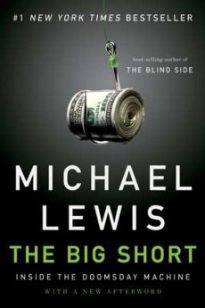
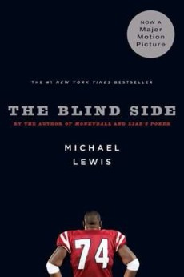
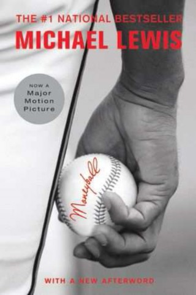
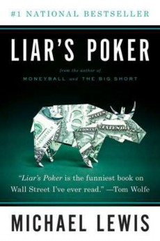

罗维·普莱斯（Rowe Price）。任何投资者与Scalpers Inc.之间的最初市场接触都像陷阱中的诱饵—亏损领袖。对于Scalpers Inc.而言，目标是花费尽可能少的时间来获取必要的信息，以使这些最初的交易（诱饵）尽可能地小。
令人惊讶的是，自Reg NMS实施以来，美国金融市场已经发展为服务于Scalpers Inc.的狭interests利益。自2000年代中期以来，美国股票市场的平均交易量暴跌，市场分散，公众对市场的看法与高频交易者的看法之间的时间差距已经扩大。高频交易的兴起还伴随着股票市场波动的增加，这超出了2008年金融危机造成的动荡。例如，2010年至2013年，美国股票市场每个交易日的价格波动率比2004年至2006年的波动率高近40％。2011年有几天的波动性高于网络泡沫最动荡的日子。
金融危机带来了大量的股票市场动荡；也许人们只是以为股票市场中曾经有过不寻常的戏剧性事件。
但是后来金融危机减轻了，戏剧性依然存在。对此没有很好的解释，但是布拉德现在只有一丝光芒。这与领跑者的运作方式有关。领跑者向您出售了一百股股票，以发现您是买家，然后转身购买了视线中的所有其他物品，导致股票价格上涨（反之，如果您碰巧是卖家）。加拿大皇家银行已经测试了使用雷神托尔（Thor）对股票市场波动的影响，雷神阻碍了领跑者，而不是华尔街使用的标准订购路由器，后者没有这样做。具有成本效益的连续路由器响应了各个交易所的回扣和费用，并首先去了支付费用最高的那些交易所。喷雾路由器-顾名思义，只是喷洒了市场并采取了所有可用的库存，或者试图-不做任何努力来迫使一个股票市场订单同时到达不同的交易所。每个路由器在购买股票时都倾向于将其价格推高一点。但是，当库存稳定下来（例如十秒钟后）时，每个路由器的结算价格都不同。连续的高性价比路由器导致股价保持高于喷雾路由器的价格，而喷雾路由器导致其价格高于托尔。“我没有科学依据，”布拉德说。“这纯粹是一种理论。但是HFT公司正试图通过Thor弥补损失。倾向于将那只股票的价格推高一点。但是，当库存稳定下来（例如十秒钟后）时，每个路由器的结算价格都不同。连续的高性价比路由器导致股价保持高于喷雾路由器的价格，而喷雾路由器导致其价格高于托尔。“我没有科学依据，”布拉德说。“这纯粹是一种理论。但是HFT公司正试图通过Thor弥补损失。倾向于将那只股票的价格推高一点。但是，当库存稳定下来（例如十秒钟后）时，每个路由器的结算价格都不同。连续的高性价比路由器导致股价保持高于喷雾路由器的价格，而喷雾路由器导致其价格高于托尔。“我没有科学依据，”布拉德说。“这纯粹是一种理论。但是HFT公司正试图通过Thor弥补损失。我很短的时候我不希望到会，所以我必须要购买到盖，快速。其他两台路由器使HFT处于领先地位，因此他们结束了长期库存。布拉德说：“ [与另外两个，HFT可以在获胜位置附近交易。他们可以尽其所能迫使股票走高。”（或更低，如果触发的投资者在那微妙的微秒内，他们肆无忌a地放弃了赌徒们用房钱玩游戏。
美国公共股票市场的新波动正在蔓延到其他金融市场，因为它们也吸引了高频交易者。这是投资者最注意到的：一口大口地买卖大笔股票的能力越来越小。他们对公开股票交易所的不满导致华尔街大银行创建了私人交易所：黑池。到2011年年中，大约30％的股票市场交易都是通过公开交易进行的，其中大多数交易是在暗池中进行的。华尔街银行表示，这些黑池的吸引力在于，投资者可以揭露他们的大型股票市场订单，而不必担心这些订单会被利用。
至少从一开始起，就使里奇·盖茨感到震惊的是他从华尔街大银行那里听到的那种声音。整个2008年和2009年，他们都会来到他的办公室，告诉他为什么他需要他们的算法来捍卫自己在股市中的地位。这种算法中是像一个老虎是潜伏在了树林里，并等待对的猎物，并再跳到上它。或者：这种算法中是一样的蟒蛇在一棵树。这些算法的名称包括伏击和夜鹰，突袭者，黑暗攻击和相扑。花旗银行有一个叫匕首的银行，德意志银行有切片机，瑞士信贷的银行有一个叫游击队的名字，在银行的挂图上出现时，切·格瓦拉（Che Guevara）身穿贝雷帽和皱着眉头的威胁性来了。那到底是怎么回事？他们的名字使里奇·盖茨保持警惕。他还不喜欢卖给他们的经纪人大声地告诉他，他们会来保护他的。保护他免受什么伤害？
他为什么需要保护？他需要从谁那里得到保护？盖茨说：“我立即对有人说他们在寻找我的利益表示怀疑。” “尤其是在华尔街。”
盖茨管理着一个共同基金，即TFS Capital，该基金是他与弗吉尼亚大学的朋友于1997年共同创立的。他喜欢把自己当作一个小家伙，但实际上，他是费城西切斯特（West Chester）宜人郊区的敏锐分析数学怪才。他管理着近3亿5千个小投资者的近20亿美元资产，但即使在他个人看来，他仍然将自己定位为
行业局外人。他认为，共同基金在聪明的资金管理中比在令人毛骨悚然的市场营销中少见，而且许多管理共同基金的人应该为自己的生活做些其他事情。早在2007年，为了阐明这一点，他从一系列表现最差的美国共同基金：凤凰城市场中立基金中抽了出来。在过去的十年中，盖茨的公司每年为投资者赢得10％的回报。在同一时期，凤凰市场中立基金为其投资者每年亏损 0.09％-投资者最好跳过凤凰市场中立基金总裁的篱笆，将钱埋在他的后院。盖茨写了一封信给凤凰总统说，实际上，你有这么明显的无能，在管理金钱是你可以做你的投资者一个青睐的转动在所有的你的资产，以我和让我跑他们为你。总统未能回答。
华尔街算法的男子气概，再加上盖茨对交易速度需求的许多荒谬论点的震惊，激起了他自然可疑的头脑。他说：“我只是注意到了很多废话。” 他和他的同事设计了一个测试，以查看在这个新股票市场中是否有什么值得担心的。具体来说，该测试将向他显示，当他向华尔街的一个黑暗水池中输入命令时，是否被一些看不见的掠夺者撕掉了。他首先确定不经常交易的股票。例如，Chipotle Mexican Grill。他向一个华尔街暗池发出了定单，以“中间市场”价格购买该股票。举例来说，Chipotle Mexican Grill的股票交易价格为100-100.10。盖茨将出价以100.05美元的价格购买一千股Chipotle。通常情况下，它会一直坐着直到其他投资者出现并将其价格从100.10美元降低到100.05美元。盖茨没有等到那件事发生。相反，几秒钟后，他向一家公共交易所发送了第二份订单，以$ 100.01的价格出售 Chipotle。
接下来应该发生的是，他在黑池中的订单应该以100.01美元的价格成交，这是市场上官方的最高价。他应该可以从自己手中购买以100.01美元出售的股票。但这不是事实。相反，在眨眼之前，他做了两次交易。他以100.05美元的价格从华尔街暗池内的某人那里买了Chipotle，然后以100.01美元的价格在公共交易所卖给了别人。实际上，他通过与自己交易而损失了4美分。只有他没有与自己交易。显然，某些第三方利用他发送给公共交易所的卖出订单来利用他发送到暗池的买入订单。
盖茨和他的同事们用自己的钱，在华尔街的几个黑池中进行了数百次这样的测试。在2010年上半年，只有一家华尔街公司的暗池测试得到了正面肯定：高盛。在高盛的暗池Sigma X中，他进行测试的时间缩短了一半以上。由于盖茨交易的是轻度交易的股票，而高频交易公司对大量交易的股票表现出极大的兴趣，因此，这些测试产生假阴性的可能性要比假阳性的可能性大得多。不过，他对高盛（只有高盛）似乎经营着一个可以让其他人提前将他的指令领先于公众股票交易所的资金池感到惊讶。他给高盛打电话给经纪人。盖茨说：“他说这不公平，因为这不仅仅是他们。他说，``一切都在发生。不只是我们。”
盖茨应有的震惊。“当我第一次看到这些测试的结果时，我想：这显然是不对的。据他所知，似乎没有人在乎35,000个小投资者可能会在华尔街最著名的银行中遭受如此掠夺。他说：“我很惊讶人们没有提出问题。” “他们不会深入研究。如果宾夕法尼亚州西切斯特的某人能解决这个问题，我就必须相信其他人也做到了。”盖茨愤慨地说，他在《华尔街日报》上认识了一位记者。记者来看盖茨的测试，似乎很感兴趣，但是两个月后，《华尔街日报》仍然没有任何内容。-盖茨意识到可能永远不会存在。（除其他外，记者不愿提起高盛的名字。）此时，盖茨注意到即将通过的《多德-弗兰克华尔街改革和客户保护法》载有举报人条款。“我想，'天哪，无论如何我都在努力解决这个问题。如果我也能得到报酬，那就太好了。”
在SEC的交易与市场部工作的人实际上很棒，这与公众的想象不同。他们很聪明，提出了很好的问题，甚至在盖茨的演讲中发现了一些小错误，对此他表示赞赏，尽管与布拉德·胜山一样，他们也不知道他如何应对他提供的信息。他们精明地想知道究竟是谁在高盛的黑池中骗走投资者。盖茨说：“他们想知道高盛的支持团队是否在交易的另一端。” 他对此没有答案。他说：“他们没有告诉你交易的另一方是谁。” 他所知道的就是，当您无法看到市场实时交易而其他人可以交易时，他可能会被完全以您可能希望被剥离的方式被剥离。
至少几个月以来，就是这样。盖茨说：“吹完口哨后，我放低了。” “我只是想专注于我们的业务。我不下车投掷炸弹。”随后赶来的闪电崩盘，以及墙街杂志的兴趣再次被点燃。该论文发表了一篇关于里奇·盖茨的测验的文章，但没有提到高盛的名字。盖茨说：“我认为这将使世界着火。” “它什么也没做。Web上的文章底部有15条评论，所有这些评论都是俄罗斯的邮购新娘。”但是，这篇文章使与BATS交易所和瑞士信贷（Credit Suisse）接近的人与盖茨取得了联系，并提出了建议：再次运行测试，尤其是在BATS交易所和名为Crossfinder的瑞士信贷黑池中运行。只是看看。
到2010年年底，盖茨又进行了另一轮测试。
果然，他能够像在高盛（Goldman Sachs）暗池中（在BATS交易所，瑞士信贷（Credit Suisse）暗池中以及在其他一些地方）被剥夺一样，完全被剥夺。然而，在高盛，这些测试现在是负面的。他说：“当我们第一次这样做时，它在高盛工作，但没有其他地方。六个月后，当我们做到这一点时，它在高盛不起作用，但在其他地方都起作用。”
在2011年5月，这个小团队布拉德创造了-Schwall为，罗南，罗布公园，一对夫妇的人，围坐在一张桌子在布拉德的办公室，由过去的获奖者的应用程序包围墙街杂志的技术创新奖。事实证明，RBC的市场营销部门在应征作品提交的前一天就将这些奖项告知了他们-因此他们争先恐后地弄清楚它们属于哪几类，以及如何使Thor改变生活。“到处都有文件，”罗布说。“没有人听起来像我们。有人曾经治愈过癌症。”“这很愚蠢，”布拉德说，“甚至没有人可以归类。我认为我们最终在“ 其他 ” 下提出了申请。”
罗布（Rob）说，演习毫无目的，“我只是一个病态的想法。”罗布（Rob）的想法是将技术许可给其中一个交易所。（Schwall为RBC授予Thor专利）。华尔街经纪人和交易所之间的界线已经模糊。现在，华尔街大银行都在经营自己的私人交易所。就证券交易所而言，它们正在寻求成为经纪人。较大的公司现在提供了一项服务，使经纪人可以简单地将他们的股票市场订单交给他们，然后由他们发送。为了自己交流，当然也要给别人。该服务主要由没有路由器的小型区域经纪公司使用，但至少在Rob看来，这种类似于经纪的服务开辟了新的可能性。
“拧紧，”布拉德说。“让我们创建自己的证券交易所。”
“我们只是在那儿坐了一段时间，”罗布说。“有点凝视对方。创建你自己的股票交换。那有什么意思？”
几周后，布拉德飞往加拿大，并以加拿大皇家银行（RBC）为首的证券交易所的想法出售了他的老板们。然后，在2011年秋天，他研究了世界上少数几个最大的基金经理（Janus Capital，T。Rowe Price，贝莱德，惠灵顿，东南资产管理公司）及其一些最具影响力的对冲基金经理（David Einhorn，Bill Ackman ，丹尼尔·勒布（Daniel Loeb）。他们都有相同的反应。他们喜欢股票交易所的想法，这种想法可以保护投资者免受华尔街的掠夺者的袭击。他们还认为，华尔街银行不可能建立一个完全独立于华尔街的新证券交易所。甚至没有一家像RBC这样的银行。如果布拉德想创建所有证券交易所之母，他将需要辞职并独自完成工作。
挑战显而易见。他需要找钱。他需要说服很多高薪人退出华尔街工作，以目前薪水的一小部分工作，甚至可能提供资金来支付自己的工作费用。“我在问：我能找到我需要的人吗？我们能在没有得到报酬的情况下生存多久？将我们的显著别人让我们这样做吗？”他还需要找出如果九大华尔街银行是控制了所有股市的订单近70％**愿意这些订单发送到真正安全交换。如果控制绝大多数客户订单的银行都致力于不公平，那么以公平为前提进行交易将更加困难。
很长一段时间以来，布拉德（Brad）保留了对华尔街最大银行的最终判决。他说：“我对每个银行处理客户订单的人员抱有一定的希望，” 他的希望主要来自他自己的经验：在RBC，他处理客户的订单时，他几乎不了解道具交易员，也不知道他们在做什么。这是有原因的：RBC并没有创建一个黑池，因为Brad取消了这个主意。他仍然知道，华尔街各大银行都有自己的内部政治，并且每个人中都有一些人希望为公司的长远利益行事，并由客户做正确的事。他希望这些人中有些人拥有权力。
John Schwall的私人调查结束了这一希望。到2011年秋季，Schwall成为了一位鉴赏家，他喜欢使用LinkedIn来查找有关高频交易中及周围人员的信息。他会在高频交易中放一张脸，或者说是两张脸。“一世
63
“人们开始期望某些人参与其中。”施瓦尔说。“我会连接到他们，以便可以看到他们的网络。在我看来，大概有25个我称为主销的家伙–实际上知道发生了什么事的人。”在食物链的最顶端，是四十多岁的白人，他们的职业可以追溯到另一方向，到了1987年崩溃后通过的法规诞生的早期电子证券交易所，华尔街的那些人可能具有一定的技术背景，但其身份比编程怪胎更能交易。
金融市场的新参与者，是有能力重塑这些市场的未来的核心人物，是不同的品种：过去十年曾在美国大学学习过的中国人；FERMAT实验室的法国粒子物理学家；俄罗斯航空工程师；印度电气工程博士学位。“只有数千这些人中，” Schwall说。“基本上所有的人都具有高级学位。我记得自己曾想过，这么多工程师加入这些公司来剥削投资者而不是解决公共问题是多么不幸。”这些训练有素的科学家和技术人员往往被大银行拖到华尔街，然后在d学会了使用绳索的方法，然后转到较小的高频交易商店。他们的行为更像自由球员，而不是大公司的雇员。例如，在他们的LinkedIn个人资料中，他们透露了雇主几乎肯定不想透露的各种信息。施瓦尔在这里偶然发现了掠夺者的弱点：大型华尔街银行的员工对银行的忠诚度不比银行对银行的忠诚度高。
瑞士信贷的员工提供了最清楚的例子。瑞士信贷的黑池Crossfinder与高盛（Goldman Sachs）的Sigma X竞争，成为华尔街最大的私人证券交易所。瑞士信贷给投资者的最大卖点是，它把他们的利益放在首位，并保护他们不受高频交易者所做的任何事情的影响。早在2009年10月，瑞士信贷的高级执行服务（AES）负责人丹·马蒂森（Dan Mathisson）在美国参议院银行，住房和城市事务委员会的暗池听证会上作了证词。他说：“关于黑池在某种程度上是高频交易辩论的一部分的说法根本没有道理，” “高频交易者通过消化比其他人更快的公开信息来赚钱。黑池隐藏了每个人的订单信息。”
施瓦尔（Schwall）认为，因为布拉德（Brad）向他解释了一切，这是完全错误的。的确，例如，当一家养老基金向华尔街一家银行下达了购买100,000股微软股票的订单，而华尔街银行将该订单发送到了黑池中时，更广阔的世界却未获悉。但这仅仅是故事的开始。养老基金不知道黑池的规则，也看不到其中如何处理买单。养老基金将无法说出，例如，华尔街银行是否允许其自己的自营交易者了解大买单，或者这些交易者是否利用他们的（比暗池交易更快）的市场联系来进行交易，在公众交易所上运行该命令。即使华尔街银行拒绝了针对自己的客户进行交易的诱惑，他们几乎没有机会抵制将高频交易者出售进入黑池的诱惑。华尔街的银行没有透露哪些高速贸易公司向他们支付了使用暗池的特殊使用权的费用，或者他们支付了多少费用，但是出售这种访问权是标准做法。
提高，再次，将明显的问题：为什么会有人买单获得了客户的订单华尔街银行的暗池里面？该直答案是这一个客户的股票市场
在一个黑暗的水池里，秩序是肥腻多汁的猎物。订单通常很大，而且其波动尤其可预测：每个华尔街银行都有自己的可检测模式来处理订单。该订单也很慢，因为在进入更广阔的市场之前，它被迫花在黑池中的时间。正如布拉德（Brad）所说，“您可以在黑暗的自行车池中预先下达订单。”试图购买100,000股微软股票的养老基金当然可以指定华尔街银行不接受其订单。进行公共交流，只是将其隐藏在暗池中休息。但是隐藏在黑池中的订单并没有很好地隐藏。任何为与交易池建立特殊连接付费的体面的高频交易者，都会以每只上市股票中极少的买卖订单对交易池进行平仓，寻找活动。一旦他们找到了Microsoft的买家，他们只需要等待Microsoft降低其在公共交易所的价格，然后以过时的，“最佳”价格（如Rich Gates的价格）将其出售给黑池中的养老基金。测试证明）。Reg NMS这样做是无风险的，舞弊的和合法的。按照布拉德的描述方式，好像只有一名赌徒被允许知道上周NFL比赛的成绩，而没有其他人知道他的知识。他在每场比赛中都在赌场下注，并等待其他赌徒下注。不能保证任何人都会这样做。但是如果他们这样做，他肯定会赢。他们只是在等待微软在公共交易市场上的价格下跌，然后以过时的“最佳”价格将其出售给黑池中的养老基金的那一刻（正如里奇·盖茨的测试所证明的）。Reg NMS这样做是无风险的，舞弊的和合法的。按照布拉德的描述方式，好像只有一名赌徒被允许知道上周NFL比赛的成绩，而没有其他人知道他的知识。他在每场比赛中都在赌场下注，并等待其他赌徒下注。不能保证任何人都会这样做。但是如果他们这样做，他肯定会赢。他们只是在等待微软在公共交易市场上的价格下跌，然后以过时的“最佳”价格将其出售给黑池中的养老基金的那一刻（正如里奇·盖茨的测试所证明的）。Reg NMS这样做是无风险的，舞弊的和合法的。按照布拉德的描述方式，好像只有一名赌徒被允许知道上周NFL比赛的成绩，而没有其他人知道他的知识。他在每场比赛中都在赌场下注，并等待其他赌徒下注。不能保证任何人都会这样做。但是如果他们这样做，他肯定会赢。好像只有一名赌徒被允许知道上周NFL游戏的得分，没有其他人知道他的知识。他在每场比赛中都在赌场下注，并等待其他赌徒下注。不能保证任何人都会这样做。但是如果他们这样做，他肯定会赢。好像只有一名赌徒被允许知道上周NFL游戏的得分，没有其他人知道他的知识。他在每场比赛中都在赌场下注，并等待其他赌徒下注。不能保证任何人都会这样做。但是如果他们这样做，他肯定会赢。
在对负责管理瑞士信贷黑池的人员进行的调查中，施瓦尔注意到的第一件事就是负责电子交易的人：乔什·斯坦普利（Josh Stampfli），他在伯尼·麦道夫（Bernie Madoff）工作了七年后加入了瑞士信贷。（Madoff率先提出了向经纪人支付执行经纪人客户订单的权利的想法，这本可以告诉人们一些事情，但显然没有。）当然，这只会加剧Schwall的怀疑，并让他老掉牙了。贸易期刊上有关瑞士信贷黑池的文章。††在那儿，他发现只有瑞士信贷从一开始就计划深入参与高频交易公司，才有意义。例如，2008年4月，瑞士信贷银行董事兼流动性策略主管Dmitri Galinov告诉《证券技术监测》，许多瑞士信贷的“客户”已经将新泽西州韦霍肯的计算机服务器放置在了这里。靠近瑞士信贷的黑池。将服务器放置在Weehawken的黑池旁的唯一人是Ronan的老客户-高频交易公司。没有哪位股市投资者竭尽全力缩短交易时间。
瑞士信贷的“客户”在Schwall看来是包括“高频交易公司”在内的一个类别。Schwall怀疑，瑞士信贷希望为HFT提供服务，而他似乎并没有这样做，因为他读了Dan Mathisson接受的一次采访。2009年11月的《纽约时报》。
问：您在CrossFinder [ sic ] 上的客户是谁？与使用经纪人进行交易所交易相比，使用暗池会给他们带来什么好处？
答：我们的客户是共同基金，养老基金，对冲基金和其他一些大型经纪人-交易商，因此它始终是机构客户。。。
Schwall知道，所有大型高频交易公司都是“经纪交易商”。它们必须具有特殊的访问权限，才能进入公共证券交易所。因此Mathisson并不排除与他们打交道。施瓦尔认为，他不明确排除与他们打交道的唯一原因是他正在与他们打交道。
LinkedIn搜索成为一种新的痴迷。前Madoff雇员的个人资料将他引到为Madoff前雇员工作的人，然后将他引向为他们工作的人，等等。即使瑞士信贷试图表现出与高频交易无关，它的员工也希望有所不同。施沃尔（Schwall）挖掘了数十个瑞士信贷计算机程序员的例子，这些例子夸耀自己关于“建立高频交易平台”和“实施高频交易策略”的履历，或者作为“股票和股票衍生品的定量交易者”的经验：一个人解释说，他“已经管理了Crossfinder的所有高频客户的入职。”另一个人说，他已经建立了Credit Suisse Crossfinder黑池，现在从事高频交易的做市工作。
到他完成工作时，Schwall已经建立了整个瑞士信贷暗池组织结构图。“他有这些人的图表，”布拉德难以置信地说道。“就像是联邦调查局的其中一个董事会一样，都是毒品主宰者。”鉴于瑞士信贷最大的银行Schwall在向投资者安全出售自己的保险上最大的麻烦，瑞士信贷银行Brad认为，这场博弈可能已经结束了。华尔街大银行。他们全都以某种方式在市场上以不平等的速度夺取了他们的猎物份额。他进一步认为，华尔街大银行一定是偶然发现了他的高频前期行情解决方案，并且一定选择不使用它，因为它们在前期行情产生的利润中占有很大的份额。“对我来说，很明显为什么我们首先发现了雷神，因为我们不是，”他说。“对我而言，这意味着问题将变得更加难以解决。这也告诉我为什么客户如此黑暗，因为客户依靠经纪人来获取信息。”创建旨在保护猎物不受掠夺者侵害的交易所将意味着在华尔街发动战争，在银行与他们之间的投资者之间展开战争。自称代表。
Schwall的私人调查还向Brad透露，技术人员对他们在金融界的作用了解得很少。他说：“这不像是在建造一座连接两块土地的桥梁。” “您看不到您正在做的事情的效果。”瑞士信贷技术人员描述其活动的开放性使他意识到更大，几乎迷人的遗忘。他回忆说：“当约翰开始提出这些简历时，我感到非常震惊。” “银行已经采取了一项政策，即尽可能少地说明其实际行为。他们会开除在报纸上被引用的人，但这些人在他们的LinkedIn页面上说了他们想说的话。”从工程师描述他们在新金融系统中的角色的方式，他可以看到他们对这个系统的不公正性一无所知。他说：“它告诉我，这些技术人员完全忽略了他们的工作。” “他们捆绑了他们正在努力的事情，帮助银行在暗池中建立市场；构建自动系统供银行与客户一起使用-如果您不了解银行在做什么，就不会有这种方式。这就像在您的LinkedIn个人资料上说：“我拥有强盗的全部技能，并且我非常了解这所房子。” ” 构建自动系统供银行与客户一起使用-如果您不了解银行在做什么，就不会有这种方式。这就像在您的LinkedIn个人资料上说：“我拥有强盗的全部技能，并且我非常了解这所房子。” ” 构建自动系统供银行与客户一起使用-如果您不了解银行在做什么，就不会有这种方式。这就像在您的LinkedIn个人资料上说：“我拥有强盗的全部技能，并且我非常了解这所房子。” ”
施瓦尔（Schwall）开始寻找那些反叛普通美国人的性命的恶棍，他们充分意识到了自己的恶棍。他最终找到了一大堆不了解自己生活意义的人。施瓦尔（Schwall）在搜寻中发现了其他情况，尽管起初他不知道该怎么做：令人惊讶的是，被华尔街大型银行吸引来为高频交易开发技术的大量人员
俄罗斯人。施瓦尔说：“如果你去领英（LinkedIn）并看着这些俄罗斯人中的一个，就会发现他与所有其他俄罗斯人都有联系。” “我会去找Dmitri，我也会找到Misha，Vladimir和Tolstoy或其他。”俄罗斯人不是来自金融业，而是来自电信，物理，医学研究，大学数学系以及许多其他有用领域。华尔街大公司已经成为将具有分析能力的俄罗斯人转变为高频交易者的工具。Schwall将该事实排除在以后，也许值得考虑。

*读到一家坚持称自己为银行的美国银行实在令人讨厌。在这种情况下，银行被迫这样做，因为监管机构禁止美国银行内的证券部门（在此称为美国银行）将自己称为银行。
†一年后，即2012年，《华尔街日报》记者斯科特·帕特森（Scott Patterson）将为早期的电子交易员“ 暗池”（Dark Pools）撰写精彩的历史。
• “ SEC的一种文化是不与进来的任何人进行对话，”一位听取了Brad Katsuyama演讲的工作人员说。“他们不想让任何人对美国证券交易委员会的看法不公正。但这是一种非常防御的文化。房间里有人写了一些他暗中批评的规则。”
§ 2013年初，最大的高频交易商之一Virtu Financial公开吹嘘说，在五年半的交易中，它经历了一天没有赚钱的经历，而损失是由“ “人为错误。” 2008年，一家名为Tradebot的高频交易公司的首席执行官Dave Cummings告诉大学生，他的公司已经走了四年，没有一天的交易亏损。只有在您拥有巨大的信息优势的情况下，这种性能才可能实现。
¶Citadel的一名前雇员曾经在五角大楼获得过最高机密的安全检查，他说：“要进入五角大楼和我所在的地区，需要刷两次徽章。一个进入建筑物，另一个进入我的区域。猜猜我到达城堡需要多少次徽章刷卡？五。”
**排名前9位的银行，按其（平均分配）的2011年市场份额，从高到低依次为：瑞士信贷，摩根士丹利，美国银行，美林，高盛，摩根大通，巴克莱，瑞银，花旗，德意志银行。
†† Stampfli没有受到任何不当行为的指控。
第五章
在HFT上放一个脸
小号谢尔盖·阿列尼科夫（Aleynikov）并不是世界上最急切的美国移民，也不是华尔街上的移民。在柏林墙倒塌的第二年，他于1990年离开俄罗斯，但悲伤多过希望。他说：“当我十九岁的时候，我没有想到会离开它。” “我对俄罗斯非常爱国。勃列日涅夫去世时我哭了。我一直讨厌英语。他对俄罗斯的问题是俄罗斯政府不允许他学习他想学习的东西。从任何传统意义上讲，他都不信奉宗教，但他生来就是一个犹太人，在他的俄罗斯护照上有这样的记载，以提醒所有人这个事实。作为一个犹太人，他希望获得特别艰苦的大学入学考试，如果他通过了，将允许他进入仅接受犹太人的两所莫斯科大学中的一所，在那里他将学习当局允许犹太人学习的任何东西。数学，就Serge而言。他一直愿意容忍这种状况。但是，碰巧的是，他也出生于编程计算机。直到1986年他才十六岁时，他才将手放在计算机上。
他要做的第一件事是编写一个程序：他指示计算机绘制正弦波的图片。当计算机实际上按照他的指示进行操作时，他就上了钩。他说，令他着迷的是“它的详细方向。它需要一种能够从不同角度看到问题并加以解决的能力。它不仅像国际象棋，而且像解决国际象棋中的特定问题一样。他发现，编码不仅在智力上而且在情感上都吸引着他。他说：“编写程序就像生一个孩子。” “这是一个创造。即使是技术性的，它也是一件艺术品。您会获得这种满意的水平。”
他申请将其专业从数学转向计算机科学，但当局禁止这样做。他说：“这就是让我接受俄罗斯也许对我来说不是最好的地方的想法。” “当他们不允许我学习计算机科学时。”
他于1990年到达纽约市，并搬进了第92街男女青年希伯来人协会的宿舍，这是犹太基督教青年会的一种形式。他的新家有两件事令他感到震惊：大街上人们的多样性以及杂货店里各种各样的食物。他在曼哈顿拍摄了一排排香肠的照片，并将其邮寄给他在莫斯科的母亲。他说：“我从未见过这么多香肠。” 但是，一旦他惊叹于美国的聚宝盆，他就从这一切退了一步，想知道所有这些食物有多么必要。他读了有关禁食和各种严格限制饮食的影响的书。他说：“我决定再进一步研究一下，问什么是有益的，什么不是。” 最后，他成为了挑剔的素食主义者。“我不认为您获得的所有能量都来自食物，“ 他说。“我认为它来自您的环境。”
他根本没有钱就来美国，也不知道如何获得钱。他参加了有关如何申请工作的课程。他说：“这非常令人恐惧。” “我真的不会说英语，
简历是一个完全陌生的概念。”他的第一位面试官让Serge告诉他有关自己的情况。谢尔盖说：“以俄国人的心态，这个问题意味着'你出生在哪里？' “你的兄弟姐妹是谁？” 塞尔格详尽地描述了这个人是如何从众多的犹太学者和学者那里得到的，而没有其他。“他告诉我，我会再次听到他的消息。我从来没有做过。”但是他在计算机编程方面有很强的天赋，很快就在新泽西州的一个医疗中心找到了一份工作，每小时8.75美元。从医学中心，他在罗格斯大学计算机科学系找到了一份更好的工作，在那里，通过工作和津贴的一些复杂组合，他得以攻读硕士学位。罗格斯（Rutgers）之后，他在互联网初创公司工作了几年，直到1998年，他收到了新泽西州一家大型电信公司IDT的工作机会。在接下来的十年中，他设计了计算机系统，并编写了代码，每天将数百万个电话路由到最便宜的电话线路。他加入公司时有500名员工。到2006年，它已经有五千了，他是该公司的明星技术专家。那年，一个猎头给他打了个电话，告诉他，华尔街对他的特殊技能提出了强烈的新要求：编写能快速解析大量信息的代码。
Serge对华尔街一无所知，也不急于要了解它。他的独特才能是使计算机快速运行，但他的动作缓慢而刻意。猎头给他压了一堆关于在华尔街写软件的书，外加关于如何通过华尔街求职面试使其入门的入门书，并告诉他，在华尔街，他可以赚到远不止22万美元。他在电信公司工作的一年。Serge感到受宠若惊，喜欢猎头，但他读了书，决定华尔街不适合他。他喜欢大型电信公司面临的技术挑战，并没有真正感到需要赚更多的钱。一年后的2007年年初，猎头再次给他打电话。到这个时候，IDT陷入了严重的财务困境；Serge开始担心管理层正在把公司扎根。他没有积蓄可言。他的妻子埃琳娜（Elina）带着第三个孩子，他们需要买更大的房子。塞尔（Serge）同意采访特别想见他的华尔街公司：高盛（Goldman Sachs）。
至少从表面上看，塞尔吉·阿列尼科夫（Serge Aleynikov）的生活被人们称为来美国。他嫁给了一位漂亮的俄罗斯移民，并与她建立了一个家庭。他们卖掉了他们在新泽西州克利夫顿的两卧室开普风格的房子，并在小瀑布城买了一个更大的殖民风格的房子。他们有一个保姆。他们有一圈俄罗斯人，他们称之为朋友。另一方面，Serge所做的只是工作，而他的妻子并不知道该工作涉及什么。他们实际上并没有那么亲密。他没有鼓励人们对他有很好的了解，也没有表现出对认识他们的浓厚兴趣。他获得了很多他很少感兴趣的财产。克利夫顿（Clifton）的草坪是普遍问题的一个典型例子。
当他去寻找自己的第一所房子时，他对拥有自己的草坪的想法着迷了。在莫斯科，这种事情是闻所未闻的。他拥有草坪的那一刻，他感到后悔。（“割草的痛苦”。）一位叫阿玛尼科夫（Aleynikovs）的俄罗斯作家玛莎·莱德（Masha Leder），他和其他人一样都认识阿莱尼科夫（Serge），他是一位知识渊博的才华横溢的俄罗斯犹太计算机程序员，为此，技术问题成了借口不要与他周围的混乱世界交往。她说：“塞吉的一生都是海市rage楼。” “还是一个梦想。他不知道事情。他喜欢那些喜欢跳舞的苗条女孩。他嫁给了一个女孩，并设法让三个孩子和她在一起，然后才发现自己并不真正认识她。他正在努力工作，她会花他所赚的钱。他会回家，她会为他煮素食。基本上，他得到了服务。”
然后华尔街打电话来。高盛（Goldman Sachs）对Serge进行了一系列电话采访，然后带他进行了为期一天的面对面采访。他发现这些非常紧张，甚至有些怪异。他说：“我不习惯看到人们投入太多精力评估他人。” 陆续有十二名高盛员工试图用脑筋急转弯，计算机难题，数学问题甚至是一些光物理学来使他难堪。对于高盛（对Serge而言），必须已经清楚地知道，与面试官相比，他对被问到的大多数事情都了解得更多。在第一天结束时，高盛邀请他返回第二天。他回到家深思熟虑：他不确定自己是否想在高盛工作。“但是第二天早上，我有一种竞争的感觉，”他说。
他很惊讶地发现自己至少适合一种方式：高盛一半以上的程序员是俄罗斯人。俄国人以成为华尔街上最好的程序员而著称，而Serge认为他知道原因：他们被迫学习计算机编程，而没有无尽的计算机时间。多年后，当他有足够的计算机时间时，Serge仍然在纸上写出新程序，然后将其输入机器。他说：“在俄罗斯，计算机上的时间以分钟为单位。” “在编写程序时，会给您一个很小的时间来使它起作用。因此，我们学会了以最小化调试量的方式编写代码。因此，在将其提交纸上之前，您必须考虑很多。。。。随时可用的计算机时间创建了这种工作模式，您只需要一个想法并输入它，然后将其删除十次即可。优秀的俄罗斯程序员，他们在过去的某个时间往往会拥有一种经验-有限的计算机时间访问经验。”
他返回高盛进行了又一轮烧烤，最后以一位高级高频交易员的办公室结束，后者是另一个俄罗斯人亚历山大·戴维多维奇。高盛董事总经理对Serge仅有两个最后的问题，这两个问题都是为了测试他解决问题的能力。第一：3599是质数吗？
Serge很快就发现3599有点奇怪：它接近3600。
他记下了以下等式：
3599 =（3600 – 1）=（60²–1²）=（60 – 1）（60 +1）= 59×61
3599 = 59×61
不是素数。
问题并不那么困难，但是，正如他所说，“当您期望快速解决问题时，解决这个问题就更加困难。”他可能要花两分钟的时间才能完成。高盛董事总经理问他的第二个问题涉及更多，而且涉及更多。他为Serge描述了一个房间，一个矩形盒子，并给了他三个尺寸。“他说地板上有一只蜘蛛，他给了我它的坐标。天花板上还有只苍蝇，他也给了我它的坐标。然后他问了一个问题：计算蜘蛛到达苍蝇所需的最短距离。它只能在表面上行走。两点之间的最短路径是一条直线，因此，Serge认为，这是打开盒子的问题，
定理来计算距离。这花了他几分钟的时间去锻炼。完成后，Davidovich为他提供了在高盛的工作。他的起薪加奖金达到270,000美元。
在公司和华尔街的历史上一个有趣的时刻，他加入了戈德曼。到2007年中期，高盛的债券交易部门正在协助和教a一场全球金融危机，其中最臭名昭著的是，它帮助希腊政府操纵了账簿并掩饰了债务，并设计了次级抵押贷款证券来使之破产，以便它们可以通过投注赚钱反对他们。同时，高盛的股票部门正在适应美国股市的剧烈变化，就像该市场即将崩溃一样。纳斯达克（Nasdaq）和纽约证券交易所（New York Stock Exchange）曾经一度沉迷的寡头垄断正在迅速转变为其他事物。新泽西州的十三家公共证券交易所都交易相同的股票。几年之内将有40多个暗池，其中两个由高盛（Goldman Sachs）拥有，
Reg NMS助长了美国股票市场的分化，这也刺激了大量股票市场的交易。新交易量的很大一部分不是由老式的投资者产生的，而是由高频交易公司控制的极其快速的计算机产生的。本质上，交易股票的地方越多，高频交易者就有机会在一个交易所的买方与另一个交易所的卖方之间进行干预。这是不正当的。计算机技术的最初承诺是将中介从金融市场中剔除，或者至少减少他可以从该市场中倒下的金额。事实证明，这是金融中介机构的意外之财，介于
每年100亿美元和220亿美元，具体取决于您希望相信谁。对于金融中介高盛而言，这只是个好消息。
坏消息是高盛尚未赚到多少新钱。2008年底，他们告诉高频交易计算机程序员，其交易部门净赚了约3亿美元。同年，单一对冲基金Citadel的高频交易部门赚了12亿美元。HFT的这些人已经以隐藏自己的利润而闻名，但是其中一个人，一个名叫Misha Malyshev的俄罗斯人和他的前雇主Citadel之间的诉讼显示，2008年，Malyshev被支付了7500万美元的现金。有两个谣言流传开了（事实证明这是真的），两个人离开了奈特去了城堡，每个人每年提供2000万美元的担保。一位坐在市场中间的猎头者，看到公司为极客人才付出了什么，他说：“戈德曼已经开始弄清楚了，但他们实际上还没有弄清楚。
高盛没有赚到现在在股市上赚到的大钱的简单原因是，股市已经成为一场机器人大战，而高盛的机器人发展缓慢。许多赚钱策略都是赢家通吃的。当每个玩家都试图做同一件事时，得到所有金钱的玩家就是其计算机可以接收数据并首先吐出明显响应的人。在进行的各种比赛中，高盛很少排名第一。这就是为什么他们首先寻求Serge Aleynikov的原因：提高他们的系统速度。在Serge看来，该系统存在许多问题。与其说是合并，不如说是一个系统。他说：“与高盛相比，IDT的代码开发实践更加井井有条，并且是最新的。” 高盛在15年前收购了早期的电子交易公司之一赫尔交易公司（Hull Trading）时，已经购买了其系统的核心。大量的旧软件（Serge猜测整个平台有多达6000万行
的代码）和15年的修复程序创造了相当于巨型橡皮筋球的计算机。当其中一根橡皮筋弹出时，Serge应该找到并修复它。
高盛经常利用复杂性来获利。例如，该公司设计了其他人不了解的复杂的次级抵押贷款证券，然后利用了他们引入市场的无知。股票市场的自动化造成了另一种复杂性，带来了许多意想不到的后果。一个小例子：高盛在纳斯达克交易所的交易。2007年，高盛拥有了最靠近纳斯达克的（未标记）建筑物。大楼内有高盛的暗水池。当Serge到达时，每秒有成千上万条消息在两座建筑物内的计算机之间来回传输。
他认为，邻近性必须为高盛提供一些优势-毕竟，为什么还要购买距离交易所最近的建筑物？但是当他查看它时，发现从高盛到纳斯达克过马路，信号要花费5毫秒，即几年之后的几乎两倍的时间，信号才能在最快的网络上传播从芝加哥到纽约。“从（芝加哥）到纽约，然后再返回的（发送信号）的理论极限约为7毫秒，” Serge说。“远不止于此，这是人为引起的摩擦。”摩擦可能是由物理距离引起的，例如，如果穿过卡特雷特街道的信号传播的方向不如直线。这可能是由计算机硬件引起的。但这也可能是由缓慢，笨拙的软件引起的，这就是高盛的问题。他们的高频交易平台以典型的高盛风格设计为集中式轮辐系统。发送的每个信号都必须先通过曼哈顿的母船，然后再返回市场。“但是（5毫秒）的延迟并不是主要由于物理距离而引起的，” Serge说。“这是因为流量正在穿越企业交换设备的各个层次。”
广义上讲，Serge被雇用来解决三个问题。它们对应于电子交易的三个阶段。首先是创建所谓的自动收报机，或翻译来自13个公共交易所的数据的软件，以便可以将其视为单个流。Reg NMS对大银行施加了新的义务：从所有交易所中获取信息，以确保它们以官方最优惠的市场价格NBBO执行客户的订单。如果高盛代表客户在纽约证券交易所以每股20美元的价格购买了500股英特尔的股票，而没有先在BATS交易所以19.99美元的价格购买100股英特尔的股票，那他们将违反该规定。对于大型银行而言，最简单，最便宜的解决方案是使用由公共交易所（SIP）创建的组合数据流。他们中有些人就是这样做的。但是，为了缓解客户对SIP速度太慢并不能为他们提供过时的市场状况的担忧，一些银行答应创建更快的数据流，但是他们为客户的订单创建的数据却没有他们创建的那么快为自己。
Serge与高盛客户使用的任何东西都没有关系。他的工作是建立高盛自己的专有交易员将在其活动中使用的系统-不用说，它需要比客户使用的任何东西都要快。为了使高盛的机器人更快，他所做的第一件事也是最明显的事情，就是他在IDT所做的工作，以使数百万个电话能够找到最便宜的路线：他分散了高盛的系统。他没有让信号从各个交易所传回高盛中心，而是在每个交易所内建立了单独的小型高盛中心。要获取其私人采摘厂的信息，
72
高盛需要将其计算机放置在尽可能靠近交易所匹配引擎的位置。该程序的第二阶段是从股票行情收录器工厂获得的输出并用来确定股市中的智能交易的软件：Serge重写了很多代码以使其运行更快。第三阶段被称为“订单输入”。听起来，这是将那些交易重新发送到市场执行的软件。Serge也从事这一工作。他没有这样想，但实际上他在高盛内部建立了一家高频交易公司。当然，他为高盛（Goldman Sachs）创建的速度可以用于许多目的。它可以简单地用来尽快执行高盛的支持交易者的明智策略。高盛的支持交易者也可以使用它来将缓慢移动的客户订单在自己的暗池中与更大的市场进行交易。例如，可以使用Serge给他们的速度在暗池中以高价将Chipotle Mexican Grill卖给Rich Gates，然后在公共交易所以较低的价格向他购买。
Serge实际上不知道高盛的道具交易员正在使用什么速度。在工作期间，他意识到自己与雇主之间的理解鸿沟。与他打交道的高盛人了解他所做的工作的影响，但不了解其深层原因。例如，高盛没人能对公司的计算机软件有一个整体的看法：第一天，当他们要求他研究代码库并弄清不同组件之间如何相互交流时，他就想到了这一点。在这样做时，他看到编写该代码的人留下的文件几乎令人震惊，而且高盛没人能向他解释。反过来，他也不知道自己行为的商业影响力，部分原因是他感觉到，因为他的上级不希望他知道这些行为。他说：“我认为这样做是有意的。” “您对他们如何赚钱的了解越少，对他们越有利。”
但是即使他们希望他知道如何赚钱，也不清楚Serge是否会知道。他说：“我认为工程问题比业务问题有趣得多。” “财务就是谁赚钱。它会缠绕在右口袋还是左口袋中？碰巧的是，赚钱的公司就是高盛这样的公司。他了解到，高盛的投资商永远都在梦想以算法的形式实现新的交易策略，以供他的机器人执行，而这些交易员本来是要在这种游戏中真正获胜的。非常精明。他进一步了解到，“他们所有的算法都基于某种预测，即对未来的一秒进行预测。“但是，您只需要像Serge一样从高盛内部观察2008年股市崩盘，就可以发现似乎经常可以预测的事情并非如此。在2008年9月动荡的一天之后，高盛本应是出色的交易员损失了数千万美元。Serge回忆说：“所有的期望都行不通。” “他们认为自己控制了市场，但这是一种幻想。每个人都会上班，并被他们根本无法控制的事实所震撼。。。。对于喜欢赌博的人来说，金融是一种赌博游戏。”他天生就不是赌徒。他更喜欢编程的确定性世界，而不是投机的伪确定性世界，而且他从未完全掌握他的工作与高盛交易者之间的联系。看到似乎经常可以预测的事实并非如此。在2008年9月动荡的一天之后，高盛本应是出色的交易员损失了数千万美元。Serge回忆说：“所有的期望都行不通。” “他们认为自己控制了市场，但这是一种幻想。每个人都会上班，并被他们根本无法控制的事实所震撼。。。。对于喜欢赌博的人来说，金融是一种赌博游戏。”他天生就不是赌徒。他更喜欢编程的确定性世界，而不是投机的伪确定性世界，而且他从未完全掌握他的工作与高盛交易者之间的联系。看到似乎经常可以预测的事实并非如此。在2008年9月动荡的一天之后，高盛本应是出色的交易员损失了数千万美元。Serge回忆说：“所有的期望都行不通。” “他们认为自己控制了市场，但这是一种幻想。每个人都会上班，并被他们根本无法控制的事实所震撼。。。。对于喜欢赌博的人来说，金融是一种赌博游戏。”他天生就不是赌徒。他更喜欢编程的确定性世界，而不是投机的伪确定性世界，而且他从未完全掌握他的工作与高盛交易者之间的联系。塞尔吉回忆道。“他们认为自己控制了市场，但这是一种幻想。每个人都会上班，并被他们根本无法控制的事实所震撼。。。。对于喜欢赌博的人来说，金融是一种赌博游戏。”他天生就不是赌徒。他更喜欢编程的确定性世界，而不是投机的伪确定性世界，而且他从未完全掌握他的工作与高盛交易者之间的联系。塞尔吉回忆道。“他们认为自己控制了市场，但这是一种幻想。每个人都会上班，并被他们根本无法控制的事实所震撼。。。。对于喜欢赌博的人来说，金融是一种赌博游戏。”他天生就不是赌徒。他更喜欢编程的确定性世界，而不是投机的伪确定性世界，而且他从未完全掌握他的工作与高盛交易者之间的联系。
Serge对高盛的业务了解到的是，该公司在高频交易领域的地位是不安全的。正如他所说的那样，“交易员总是害怕小型的高频交易商店。” 他正在使高盛的笨拙，低效的系统更快，但如果没有它下面的6,000万行旧代码的负担，他永远不可能使它像从头开始构建的系统那样快。或一个
73
该系统以任何重大方式进行更改都不需要召开六次会议，也不需要获得信息安全官员的签名文件。高盛和小型高频交易公司在同一个丛林中狩猎，但它从来没有像这些公司那样迅速或敏捷：华尔街大银行无法做到。大银行享有的唯一优势是它与猎物的特殊关系：客户。（正如一家高频交易公司的负责人所说，“当这些银行中的一个人采访我们找工作时，他总是谈论自己的算法有多聪明，但迟早他会告诉你，没有他的客户，他就无法赚钱。”）
在纽约一号广场（One New York Plaza）的四十二层楼上工作了几个月后，谢尔格得出的结论是，他们可以利用高盛的高频交易平台做的最好的事情就是将其报废，然后从头开始构建一个新的交易平台。他的老板们不感兴趣。他说：“高盛的商业模式是，如果有机会立即赚钱，那就去做。” “但是，如果有长期的东西，他们就没那么感兴趣了。”股市会发生某些变化，例如，交易所会引入新的复杂规则，而这种变化将立即创造赚钱的机会。 。“他们想立即做，” Serge说。“但是，如果您考虑一下，它只是在不断修补现有系统。现有的代码库变得难以维护。”
这就是他在高盛度过的大部分时间里如何修补大象的方式。他和其他高盛程序员每天都使用补丁程序的材料来求助于开源软件，该软件是由程序员集体开发的，可以在Internet上免费获得。他们使用的工具和组件并不是专门为金融市场设计的，但可以修改以修复高盛的管道。令他惊讶的是，他发现高盛与开放源代码之间存在一种单向关系。他们从网络上撤走了大量免费软件，但是即使他的修改非常微小且只是一般性的使用，而不是财务上的使用，他们也没有将其退还给他。他说：“一旦我采用了一些开源组件，就将它们重新打包，以提供一个甚至在高盛公司都没有使用过的组件。” “从根本上说，这是使两台计算机看起来像一台计算机的一种方法，因此，如果一台计算机掉下来，另一台计算机可以跳入并执行任务。”他创造了一种巧妙的方式，使一台计算机充当另一台计算机的替代者。他用这种方式描述了创新的乐趣：“它创造了一些混乱的事物。当您从混乱中创造出某种东西时，从本质上讲，您可以减少世界上的熵。”他去找他的老板，名叫亚当·斯莱辛格（Adam Schlesinger）的同事，问他是否可以将其放回开源，就像他的意愿一样。“他说现在是高盛的财产，”谢尔格回忆道。“他很紧张。” 他用这种方式描述了创新的乐趣：“它创造了一些混乱的事物。当您从混乱中创造出某种东西时，从本质上讲，您可以减少世界上的熵。”他去找他的老板，名叫亚当·斯莱辛格（Adam Schlesinger）的同事，问他是否可以将其放回开源，就像他的意愿一样。“他说现在是高盛的财产，”谢尔格回忆道。“他很紧张。” 他用这种方式描述了创新的乐趣：“它创造了一些混乱的事物。当您从混乱中创造出某种东西时，从本质上讲，您可以减少世界上的熵。”他去找他的老板，名叫亚当·斯莱辛格（Adam Schlesinger）的同事，问他是否可以将其放回开源，就像他的意愿一样。“他说现在是高盛的财产，”谢尔格回忆道。“他很紧张。”
开源是一个依赖于协作和共享的想法，Serge有很长的贡献历史。他不完全理解高盛如何认为可以从他人的工作中受益匪浅，然后对他们如此自私地行事。他说：“您不会创造知识产权。” “您创建的程序会执行某些操作。”但是从那以后，根据亚当·施莱辛格（Adam Schlesinger）的指示，他将高盛（Goldman Sachs）服务器上的所有内容都视为高盛（Goldman Sachs）的财产，即使该内容刚刚从开源转移到了那里。（后来，在他的审判中，他的律师展示了两页计算机代码：原始代码，其顶部带有开放源代码许可证，以及一个副本，其原始版本许可证被剥离，并由高盛（Goldman Sachs）许可证取代。）
有趣的是，Serge实际上很喜欢Adam Schles-inger，以及他在高盛工作的其他大多数人。他不太喜欢公司为他们创造的工作环境
他说：“每个人都为年底数字而活。” “当奖金数额可观时，您会感到满意；而如果数字未达到，您会感到不满意。对于他来说，以人为本的成就本质上是集体成就而被单独支付的方式，这对他来说毫无意义。“竞争非常激烈。每个人都试图证明自己对团队的贡献有多出色。因为团队没有获得奖金，个人却获得了。”
更重要的是，他认为高盛为其员工创造的环境并没有鼓励良好的编程，因为良好的编程需要协作。他说：“基本上人与人之间的联系非常少。” “在电信领域，人们之间通常会产生一些协同作用。人们交换意见时举行会议。他们没有以同样的方式承受压力。在高盛，总是这样，“某些组件已损坏，因此我们在赔钱。立即修复。” 被分配来修复代码的程序员坐在隔间里，彼此之间几乎不说话。“当两个人想要交谈时，他们不仅会在地板上讲话，” Serge说。他们会去地板周围的一间办公室，然后关上门。我从未在电信或学术界拥有过这种经验。”
到金融危机袭来之时，Serge早已不知道自己的声誉：高盛以外的公司招聘人员都将他称为公司中最好的程序员。“华尔街上有二十个人可以做Serge可以做的事情，”一位经常为高频交易公司招聘的猎头说。“而且他是最好的，甚至不是最好的之一。”高盛还在编程人才市场上享有盛誉-因为其程序员对公司交易活动的价值不了解。程序员类型与交易者类型不同。交易者类型在更大的范围内，从他们的背景来看，更为活跃。他们知道自己在市场上的价值，直到最后一分钱。他们了解自己所做的事与赚多少钱之间的联系，他们擅长夸大链接的重要性。塞尔不是那样。他是个小人物，一个解决问题的小人物。招聘人员说：“我认为他不知道自己的价值。” “他通过变得出色来弥补自己的狭窄。他真好。”
考虑到他的性格和处境，市场一直在寻找Serge Aleynikov并告诉他他的价值，而不是相反，这就不足为奇了。担任他的新工作几个月后，猎头每两周给他打电话。担任新职务的一年，他得到了瑞士银行（UBS）的报价，并承诺将其薪水提高到每年40万美元。Serge并不想离开高盛只是去另一家华尔街大公司工作，所以当高盛提出要约时，他留下了。但是在2009年初，他又提出了另一种呼吁，提出了一种截然不同的提议：为Misha Malyshev经营的新对冲基金创建一个交易平台。
创建新平台而不是不断修补旧平台的前景使他激动。再加上马利雪夫愿意每年付给他一百万美元，他建议他们甚至可能在新泽西州他家附近为塞尔吉开设办事处。Serge接受了工作邀请，然后告诉高盛他要离开了。他说：“当我递交辞职信时，每个人都来找我。普遍的看法是，如果他们有合适的机会退出高盛，他们会立刻这样做。”一些人向他暗示，他们想加入他的新公司有多少。他的老板问他该如何说服他留下来。Serge说：“他们试图让我参与这场货币讨论。” “我告诉他们
不是钱。这是从头开始构建新系统的机会。”他错过了电信工作环境。“在IDT的时候，我确实看到了我的工作成果，而在这里，您拥有这个庞大的系统，并且正在左右修补它。没有人能给您完整的画面。我感觉高盛没有人真正知道它是如何整体运作的，他们对此感到不舒服。”
他同意在周围闲逛六周，并向其他高盛人传授他所知道的一切，以便他们可以继续在巨大的橡皮球中找到并固定那些破损的乐队。在上个月的过程中，他四次邮寄自己正在处理的源代码。这些文件包含他在过去两年中使用和修改的许多开源代码，这些代码与不是开源的代码混合在一起，但显然是高盛专有的。他希望彼此分开，以防万一需要提醒自己如何完成开源代码的工作。他可能需要再做一次。自从他在高盛工作的第一个月以来，他几乎每周都发送自己的文件，方式与这些文件一样。他说：“没有人对我说过一句话。” 他拉起浏览器，并在其中输入单词：“免费的Subversion存储库”。Up弹出了一个列表，这些列表免费且方便地存储了代码。他单击了列表中的第一个链接。找到发送代码的地方大约需要八秒钟。然后，他做了自从首次开始为计算机编程以来一直做的事情：他删除了bash历史记录-他在自己的Goldman电脑键盘中键入的命令。要访问计算机，需要他输入密码。如果他不删除自己的bash历史记录，那么对于有权访问该系统的任何人来说，都可以看到他的密码。然后，他做了自从首次开始为计算机编程以来一直做的事情：他删除了bash历史记录-他在自己的Goldman电脑键盘中键入的命令。要访问计算机，需要他输入密码。如果他不删除自己的bash历史记录，那么对于有权访问该系统的任何人来说，都可以看到他的密码。然后，他做了自从首次开始为计算机编程以来一直做的事情：他删除了bash历史记录-他在自己的Goldman电脑键盘中键入的命令。要访问计算机，需要他输入密码。如果他不删除自己的bash历史记录，那么对于有权访问该系统的任何人来说，都可以看到他的密码。
这不是完全无辜的行为。他说：“我知道他们不会对此感到高兴。”因为他知道他们的态度是，高盛服务器上发生的任何事情都是高盛的全资拥有，即使Serge自己从开源。当被问到他做这件事时的感觉时，他说：“感觉就像在飞驰。在汽车上超速行驶。”
对于从芝加哥出发的大部分航班，他都睡了。离开飞机时，他注意到三名穿着深色西装的男人在捷波特的壁co中等待婴儿车和轮椅的专用。他们确认了他的身份，解释说他们来自联邦调查局，给他上了手铐，搜了一下他的口袋，拿走了他的背包，告诉他要保持镇静，然后将他与其他乘客隔离开。这最后的举动可不是什么好事。Serge身高六英尺，但重约140磅：要隐藏他，您只需要将他转向侧面即可。他没有抵抗任何这些行为，但他确实感到困惑。黑人男子拒绝告诉他他的罪行。他试图猜测。他的第一个猜测是，他们让他与其他一些谢尔盖·阿列尼科夫混在一起。接下来，他想到他的新雇主Misha Malyshev随后被Citadel起诉，
两种说法都不对。直到飞机空了，他们才把他护送到纽瓦克机场，他们告诉他他的罪行：窃取高盛拥有的计算机代码。
负责此案的代理人Michael McSwain是执法部门的新手。奇怪的是，直到2007年，他已经在芝加哥商品交易所工作了十二年，担任货币交易员。他和其他像他一样的人已经被Serge和像他这样的人倒闭了，或更确切地说，是因为替换了每个美国交易所地板上的交易者的计算机。McSwain在华尔街的职业生涯在Serge成立的同一年结束并不是偶然的。
麦克斯温（McSwain）驱使塞尔日（Serge）驶入一辆黑色城镇汽车，并将他带到曼哈顿下城的联邦调查局大楼。在展示了藏匿枪支的表演后，麦克斯温将他带到一个很小的审讯室，将他铐在墙上的一根竿上，最后，朗诵了他的米兰达权利。然后，他解释了自己所知道的事情，或者以为自己知道：2009年4月，Serge在一家新的高频交易商店Teza Technologies接受了一份工作，但在接下来的六周内一直留在高盛。在4月初至6月5日之间，当Serge永久离开高盛时，他通过所谓的Subversion存储库将自己从高盛高频股票交易系统获得的32 MB源代码发送给自己。McSwain清楚地发现，Serge所使用的网站被称为Subversion信息库，并且在德国，这是该死的。他似乎也认为，Serge使用了一个未被高盛阻止的网站很重要，即使在Serge试图向他解释说高盛没有阻止其程序员使用的任何网站，而只是阻止其员工访问色情网站和社交媒体网站之后等等。最后，联邦调查局特工希望他承认他已经抹掉了自己的重击历史。Serge试图解释为什么他总是抹掉重击的历史，但是McSwain对他的故事毫无兴趣。联邦调查局特工随后作证说：“他的举止似乎很邪恶。” Serge试图解释为什么他总是抹掉重击的历史，但是McSwain对他的故事毫无兴趣。联邦调查局特工随后作证说：“他的举止似乎很邪恶。” Serge试图解释为什么他总是抹掉重击的历史，但是McSwain对他的故事毫无兴趣。联邦调查局特工随后作证说：“他的举止似乎很邪恶。”
就目前而言，所有这些都是真实的，但是对于Serge来说，这似乎并不遥远。他说：“我认为那真的很疯狂。” “他以毫无意义的方式将这些计算机术语串在一起。他似乎对高频交易或源代码一无所知。”例如，Serge不知道Subversion存储库的实际位置。它只是开发人员用来存储他们正在处理的代码的Internet上的一个位置。他说：“互联网的全部目的是从服务器的逻辑地址中抽象出服务器的物理位置。” 对于Serge来说，McSwain听起来像个男人，重复着他从别人那里听到的短语，但对他而言实际上没有任何意义。他说：“俄罗斯有一款游戏叫《破碎的电话》，”这是美国游戏《电话》的一种变体。“感觉就像他在玩那样。”
Serge尚不知道的是，就在几天前，即使Serge已经向自己发送了第一批代码，高盛还是发现了他的下载文件-似乎是他们用于专有的高速股票市场交易的代码。几个月前。他们急忙给FBI打了个电话，使McSwain经历了高频交易和计算机编程的速成班。麦克斯温后来承认，他没有寻求独立专家的建议来研究Serge Aleynikov所采用的代码，也不是试图找出为什么他可能会采用它。他说：“我依靠高盛员工的声明。” 他不知道被盗代码的价值（“高盛的代表告诉我，这笔钱很值钱”），或者其中任何一个实际上都是那么特别（“高盛的代表告诉我们代码中存在商业秘密”）。经纪人指出，高盛文件既位于个人计算机上，也位于他从纽瓦克机场的谢尔格带走的拇指驱动器上，但他没有注意到这些文件仍未打开。（如果它们是如此重要，为什么自从他离开高盛后的一个月里，塞尔吉就没有看过他们？）联邦调查局在逮捕前对他进行了调查，其中包括高盛向麦克斯温解释了一些极为复杂的内容，以至于他承认自己并不完全理解-但是相信高盛的所作所为。高盛打电话给联邦调查局四十八小时后，麦斯温逮捕了塞尔日。
在被捕之夜，Serge放弃了召集律师的权利。他给妻子打了个电话，告诉她发生了什么事，并说，尽管他们没有搜查令，但还是有一群联邦调查局特工正在路上抢劫他们的计算机，并请他们进去。然后他坐下来
并且有礼貌地试图消除这位联邦调查局特工的困惑，他没有逮捕证就逮捕了他。他回忆说：“如果他不明白所采取的措施，他怎么能知道这是否是盗窃案？” 在他看来，他所做的只是微不足道的。他所指控的既违反了《经济间谍法》又违反了《国家被盗财产法》的听起来一点都不琐碎。他仍然认为，如果代理商了解计算机和高频交易业务的实际运作方式，他将道歉并放弃此案。他说：“我之所以向他解释，是为了表明那里什么也没有。” “他对我所说的内容完全不感兴趣。他只是一直对我说：“如果你把一切告诉我，我会和法官谈谈，他会对你轻松。'看来他们从一开始就有很大的偏见。他们有想要实现的目标。一个是要立即认罪。”
奇怪的是，联邦调查局提取认罪能力的主要障碍不是Serge愿意提供，而是它自己的代理人对Serge试图承认的行为的无知。“在书面声明中，他犯了一些非常明显的错误，计算机术语等，” Serge回忆说。“我当时在说，'你知道，这是不正确的。' Serge耐心地引导特工完成他的行动。经过5个多小时的讨论，麦斯温在7月4日凌晨1:43向美国检察官办公室发送了一封头昏眼花的单行电子邮件：“他真是个废话，他签署了供词。”
两分钟后，他将Serge派往大都会拘留中心的一个牢房。检察官，助理美国检察官约瑟夫·法西蓬蒂（Joseph Facciponti）辩称，应拒绝谢尔盖·阿列尼科夫（Serge Aleynikov）的保释。这位俄罗斯计算机程序员拥有可以“以不公平的方式操纵市场”的计算机代码。塞尔吉签署的供词，被联邦调查局特工划掉并改写的短语吓到了，后来检察官将其提交陪审团。就像一个小偷的工作，他用言语谨慎，甚至棘手。“那不是发生的事，”谢尔格说。“该文件是由对此事没有专门知识的人制作的。”
谢尔盖·阿列尼科夫（Sergey Aleynikov）签署的供词是至少从他那里直接听到的任何人的来信。他拒绝与记者谈话或在审判中作证。他举止优雅，洋溢着滑稽的口音，留着胡须，还有一个看起来像埃尔·格雷科（El Greco）画的体格：在从街头随机选择的人群中，他是最有可能被识别为俄罗斯间谍，或《星际迷航》原始情节中的角色。在技术讨论中，他倾向于讲极端的话，当他与其他专家打交道时，这对他来说是很棒的，但麻木的听众却麻木了。在美国舆论法庭上，他不适合为自己辩护，因此，在他的律师的建议下，他没有。即使在没有假释可能性的情况下被判处联邦监狱八年徒刑之后，他仍然保持沉默。
第六章
如何从华尔街收取数十亿美元
[R奥南无意告诉父亲确切的收入或其他听起来像是在吹牛的东西，但他想让他知道他不再需要担心儿子了。2011年圣诞节，他会像往年一样飞回爱尔兰，直到今年他才开始对话。他对这个地方没有特别的依恋。他说：“我根本不属于那里。” “到处都有他妈的胖子。当我长大的时候，没有胖孩子。它失去了魅力。”他想念家人，仅此而已。当他到达都柏林郊区的家中时，他的父母将等着需要维修或重新编程的物品清单。在重新启动他们的计算机或重新获得他们的卫星信号后，他将与他们坐下来进行座谈。罗南说：“美国父母开始从事他妈的孩子的生意。” “在爱尔兰，他们没有。他们的父亲自己做生意，还是那个为什么华尔街一家大银行为什么觉得他有用呢？“他不认为我是该死的出纳员。但是，如果我对父亲说：“我是交易员”，他会说：“您对交易有什么了解？” 他的生活就是他的生活，他们的生活就是他们的生活。“我的父母，我知道他们爱我。这只是爱尔兰人的爱。我只是想让他知道我在这项生意上是合法的。让他放心有些半。我不希望他认为我会危及整个家庭。” 为什么华尔街一家大银行会发现他很有用。“他不认为我是该死的出纳员。但是，如果我对父亲说：“我是交易员”，他会说：“您对交易有什么了解？” 他的生活就是他的生活，他们的生活就是他们的生活。“我的父母，我知道他们爱我。这只是爱尔兰人的爱。我只是想让他知道我在这项生意上是合法的。让他放心有些半。我不希望他认为我会危及整个家庭。” 为什么华尔街一家大银行会发现他很有用。“他不认为我是该死的出纳员。但是，如果我对父亲说：“我是交易员”，他会说：“您对交易有什么了解？” 他的生活就是他的生活，他们的生活就是他们的生活。“我的父母，我知道他们爱我。这只是爱尔兰人的爱。我只是想让他知道我在这项生意上是合法的。让他放心有些半。我不希望他认为我会危及整个家庭。”
爱尔兰的经济在三年前就崩溃了，原因是许多美国风格的金融阴谋和来自美国金融家的不良建议。罗南（Ronan）的许多儿时朋友仍然没有工作。似乎并不是冒险的最佳时机。然而，在罗南（Ronan）飞往爱尔兰的前几天，布拉德·胜山（Brad Katsuyama）将他拉进了与约翰·斯沃尔（John Schwall）和罗伯·帕克（Rob Park）的会晤。布拉德曾经想知道，如果他离开加拿大皇家银行去创建一个新的证券交易所，谁会离开他。他们轮流回答相同的问题：你进去了吗？从某种程度上说，罗南在听自己的声音时不敢相信自己所听到的：他整个职业生涯都试图在华尔街找到一份工作，现在他终于有了一个人，那个人送给他的是要他扔掉。在另一个层面上，问题得到了解答。他说：“我骑的太多了。” “而且我觉得自己欠布拉德。他是给我机会的那个人。我相信他：他不是一个白痴。”
到2011年底，罗南（Ronan）的想法也有所改变。现在，他从内部看到了华尔街。这对他的吸引力不及他的预期。他说：“就像我待在这里一样，我会变得很烂。”
他们全都进去了。他们的目的不清楚。直到他们发现有人愿意为建造新的证券交易所买单之前，他们不能很好地辞掉工作去做。罗南对布拉德的承诺与其说是立即采取行动，不如说是在不确定的未来某个时候兑现的期票。但是他们确实有一个目标：恢复美国股票市场的公平性，这可能是华尔街历史上的第一次，将公平性制度化。他们有一个粗略的想法：将雷神（Thor）部署为一种奇怪的新型证券交易所的骨干，
经纪人可以发送股票市场订单，以便Thor可以将其路由到所有其他交易所。然而，他们之中，没有一个人，尤其是罗南（Ronan），都不相信仅靠雷神（Thor）就能改变股票市场，主要是因为他们怀疑大型经纪公司是否会将他们最有价值的商品（他们的客户的股票市场订单）移交给任何第三方以执行。他们还怀疑其他形式的不公平现象困扰着市场，而索尔并未开始解决这些问题。“我给我们现在拥有的工作机会为百分之十，”罗南告诉他的同事们。“但是我们四个人给了我们百分之七十的机会来解决这个问题。”
罗南离开布拉德的办公室后，意识到他想和父亲进行的谈话已经改变：他需要父亲的忠告。当他辞去电信工作时，他已经承担了很大的风险，在该行业中，他每年赚近50万美元的华尔街工作给了他三分之一的薪水。事情已经解决了：加拿大皇家银行刚刚给了他近一百万美元的奖金，并问他是否愿意经营他们股票市场交易中利润更高的一半。（“他们告诉我，我可以说出我的价格。”）当他的飞机降落到爱尔兰海岸时，他想知道是否因为自己的想法而辞掉了年薪910,000美元的工作，而只剩下一个月薪2,000美元的工作，他本人在新公司中投资的资金很可能会支付给他的钱。他父亲可能不在乎细节，但他会把握自己困境的要点。“我想问他：'你有时间停止掷骰子吗？' 我不知道那个时候是不是RBC。”但是当他最终让父亲坐下时，Ronan意识到，除非他承认奖金的数额，否则他甚至无法解释自己的困境。罗南说：“当我告诉他，我赚了91万美元时，他就死于心脏病发作。” “我是说，他坐在椅子上翻了一番。”
他父亲终于康复了，然后抬头看着儿子说：“ Ro，你知道，到目前为止，你的风险似乎已经得到回报。为什么不他妈的？”
罗南（Ronan）于2012年1月3日星期二回到纽约，打开黑莓手机，看着新消息泛滥。第一个消息来自布拉德（Brad），宣布他从加拿大皇家银行辞职。罗南后来回忆起这一时刻，“接下来的十条消息说：'该死，布拉德•胜山只是他妈的辞职。' 罗南（Ronan）知道加拿大皇家银行（RBC）的加拿大老板一直在巧妙地拒绝布拉德（Brad）的坚持，即他不仅退出银行以追求自己在银行工作期间构想的想法，而且还接受该银行的几位最有价值的员工也和他在一起。加拿大的老板们显然不喜欢这一切的声音。他们认为，如果他们停滞了一段时间，布拉德就会明白。
在领取行李时，罗南通过电话联系了布拉德。“我只是想问他：'他妈的怎么了？' 布拉德用很少的几句话对他说：当他试图与他们谈论远比任何一个人或任何一个人都要重要得多的事情时，他礼貌地打着点头，对那些经营这家所谓重要银行的人感到厌倦。银行。“他们以为他永远不会这么做，”罗南说。“他就像，'哦，是的，混蛋？” 当罗南响起后，他想：“ 好吧，他把我全部推了进来。”
布拉德每天早上6:30左右上班。圣诞节休息后的第一天早上，他去了他的直接上级，告诉他他已经完成了。然后他走到办公桌前，给罗南，罗伯·帕克和约翰·施沃尔写了一封电子邮件，另一封给加拿大的三名高管。
五分钟后，他的电话响了。那是加拿大，很生气。什么的到底是你在做什么？问电话另一端的高级经理。你不能做这个。布拉德对此说：我刚刚做了。
他一无所有地离开了银行-没有纸面，没有代码，也没有任何人会真正跟随他的确定性，事实证明，甚至没有一个明确的企业构想。就像股票市场上的其他所有人一样，布拉德（Brad）读到高盛（Goldman Sachs）高频程序员因邮寄自己的计算机代码而入狱时也感到震惊。高盛的敏感度证实了他的怀疑，即在2009年左右，以前受金融危机影响的华尔街大银行终于醒悟到了自己黑池中客户订单的价值。他们利用恐惧和恐吓来控制技术人员，最终他们可以利用这种价值。金融文化突然变得更加封闭和神秘-这在说些什么。
而且，银行现在正在使用法律制度，以使技术含量更高的员工更难以离开。“我对罗布说，'不要他妈的，'”布拉德回忆道。“他说，'别担心。无论如何我都不想从这里拿走。” ”
他们会重新开始。他们可以利用从托尔获得的关于股票市场的见解，但托尔本身属于加拿大皇家银行。他们的主要优势-他们唯一的可持续优势-是投资者信任他们。在华尔街的推销活动的接受者上，投资者天生就不信任。或者，如果他们天生信任，他们的天性就会被周围的环境所重塑。华尔街上的人们只不过是付出了太多，以至于无法撒谎，弄乱和迷惑，因此，在金融市场上的每一种信任感都必须紧随其后。关于布拉德（Brad）的某些事情，导致投资者放低了警惕并信任他。不管那是什么，它的力量都足够强大，可以让一群人管理一些世界上最大的共同基金和对冲基金，
然而，即使他从数百万美元的华尔街走了出去，其中一些人还是对他的动机提出了疑问。他需要大约一千万美元来雇用可以帮助他设计新股票市场的人，并编写将成为该市场基础的计算机代码。他甚至希望甚至假设这些大投资者会向他提供资金来建立新的证券交易所，但是每十次会议中有八次是从相同的问题开始的：“你为什么要这样做？您为什么要攻击一个使您变得富有，并且如果您继续下去就会使您变得更加富有的系统？”正如一位投资者所说，在布拉德的背后，“我对布拉德有疑问：您是否弄清楚了为什么他会玩罗宾汉吗？”
布拉德对这个问题的第一个答案是他告诉自己的事情：股市变得异常怪异，迫切需要改变，他会发现，如果他不这样做，那就没有其他人了将。“那感觉不好，”他回忆道。“他们只是说，'听起来像是胡说八道。' 发生的前几次，确实让我感到困扰。”然后他克服了它。如果这个新的证券交易所蓬勃发展，它的创始人就可以赚钱-也许是很多钱。他不是和尚。他只是根本不需要赚大钱。但是他奇怪地注意到，当他强调自己本人可以从新证券交易所赚多少钱时，
他的新业务中的潜在投资者使他受热，因此他开始强调自己可能赚多少钱。他说：“当他们问我们为什么这样做时，我们的谚语似乎令人安抚。” “ 我们是长期的贪婪。效果很好。。。。他们的反应总是比我的第一个答案更好。”
他花了六个月时间在纽约假冒伪造品，以使钱财人士放心。真是令人发疯：他无法让应该给他钱的人这样做，他也无法从想要把钱给他的人那里得到钱。几乎所有的华尔街大银行要么直接问他是否可以购买他交易所的股份，要么至少希望被视为可能的投资者。但是，如果他拿走了他们的钱，他的证券交易所将失去其独立性和在投资者中的信誉。他在多伦多的朋友和家人也都想投资他的新公司。他们提出了一个不同的问题。在布拉德通过电子邮件让他们知道他正在砸人行道以筹集资金以建立新的股票市场两个小时后，他们总共花了150万美元。这些人中的一些人有能力承担自己的金钱冒险，但其中一些人的积蓄不超过几千美元。在他允许他们投资之前，布拉德坚持要求他们向他发送银行对账单，以证明他们有能力承受损失的所有投资。一位老朋友写信给布拉德的哥哥克雷格（Craig），他说：“您的兄弟从未做过任何事情，但从未失败过。”解释为什么新业务根本没有风险，并请他代他代祷并推翻布拉德决定不收他的钱。
他需要的是那些曾表示希望他退出RBC来固定股票市场（即共同基金，养老基金和对冲基金）的大型股票市场投资者，他们的钱放在了自己的嘴里。他们提供了各种各样的借口，让他们无能为力：他们并不是为了投资初创企业而设计的。投资经理认为这是个好主意，但是合规部门根本没有能力评估Brad；等等。布拉德说：“我们要的钱太少了，以至于他们无法确定如何把钱给我们，实在是太痛苦了。” 他们都希望他与他建立交流。他们都希望从这次交流中受益；但他们都还假设其他人会提供资金来做。许多人有很好的借口-确实，巨人养老基金的使命不在投资初创企业。不过，这还是令人失望的。在经历了漫长而令人沮丧的一天乞讨之后，罗南说：“他们就像是那些他妈的朋友中的一个，说他会在战斗中支持你，他们什么也不做。” “你在地上，流血，然后他们才跳进来，一拳。”
其中一些人就是这样。但不是全部。巨型共同基金管理公司资本集团承诺投资，条件是他们不是唯一的投资者，而是一个财团的一部分。另一个品牌Brandes Investment Partners也是如此。而且有几个人提出了反对意见：布拉德向他们推荐的业务是一个模糊的提议-存在的证券交易所主要是将其股票市场订单传递给所有其他交易所。那将如何工作？雷神（Thor）表现出色，但是布拉德为什么想象在美国的公共和私人交往中如此抛弃的掠食者会不适应呢？他为什么认为华尔街最大的银行会将他们的股票市场订单转包给他的新交易所呢？因为那是“公平”的？银行的推销员每天跑来跑去出售银行自己的路由器。他们不会花一分钱，而是说：“哦，是的，我们已经收到巨额资金将您卖给高频交易者，但现在我们要下达所有股票定单，布拉德，所以我们不能再把你卖了。”
布拉德没有完全理解他需要创建的企业，直到市场迫使他放弃了，因为他没有给他想建立的企业提供资金。2012年8月，与管理对冲基金Greenlight Capital的大卫·艾因霍恩（David Einhorn）会面，使人们有了更充分的了解。听布拉德的间距后，艾因霍恩问了他一个简单的问题：为什么不能，我们都刚刚采摘的一样交流？为什么投资者不组织自己来发起一个证券交易所，以保护自己的利益并保护他们免受华尔街掠夺者的侵害？从未有任何投资者向大型银行施加任何将其股票市场订单传递给任何一家交易所的集体压力，但这仅仅是因为没有充分的理由偏爱一家交易所而不是另一家交易所：五十家左右的交易所交易的股票全部由金融中介机构设计，用于金融中介机构。布拉德说：“显而易见，这简直令人尴尬。” “那应该是我们的建议：不是我们应该使用Thor来传递订单，而是要我们建立一个投资者可以选择去的地方。”也就是说，他们不应该只是试图为现有股票辩护投资者。交流。
到12月中旬，他已经从9个不同的大资金经理那里获得了940万美元的收入。*六个月后，他从四个新投资者那里筹集了1500万美元。布拉德需要的钱是他没有踢自己的钱：到2013年1月1日，他已经将毕生的积蓄投入了生活。
同时，他去找人：软件开发人员，硬件工程师和网络工程师来构建系统，操作人员来运行它，销售人员向华尔街解释。他很容易吸引认识他的人-恰恰相反。在RBC与他一起工作的一大批人显然感到有将他的职业托付给他的冲动。几十个人暗示他们想加入他的行列，并尽他所能。他在一系列奇怪的对话中发现自己，在其中他试图解释为什么他们比在一家既没有一家又一家没有明确的计划或一分钱的融资。仍然有人跟随。张艾伦，金鹅本人，因将RBC的计算机代码发送给自己而被解雇，并立即在布拉德的前门出现。比利·赵（Billy Zhao）出色地完成了一项复杂的任务，因此变得多余，以至于银行不再需要他的帮助：他也加入了。但是布拉德需要的人不认识他，也知道他不知道的事情。他尤其需要对高频交易和证券交易所有深刻了解的人员。他找到的第一个人是唐·博勒曼。对高频交易和证券交易所有深刻了解的人们。他找到的第一个人是唐·博勒曼。对高频交易和证券交易所有深刻了解的人们。他找到的第一个人是唐·博勒曼。
所有人都对唐·博勒曼（Don Bollerman）所注意到的-即使他们并没有这样说-也是他多么希望自己的生活不感到惊讶。最重要的是，他在布朗克斯（Bronx）长大，带着对情感的抵抗。在抽烟之前，他从香烟上取下了过滤嘴。他的体重超过了应有的一百磅，并且忽略了同事锻炼或照顾自己的恳求。他说：“无论如何我都会死。” 他的美好感觉与对待身体的方式非常相似，有些不屑一顾。他说：“很多东西都是善良的心。” “我更像是一个靠自己养活或死亡的家伙。”
要消除意外的可能性，并不要求Don的生活不会特别令人惊讶，而是他必须控制自己对意外产生的感受。当他们至少可以控制时，就可以看出他希望管理这些情绪的程度。2001年9月11日，唐在百老汇大街100号第12楼的一家小型电子证券交易所工作，
距世界贸易中心五百码。他那天早上七点到达。在股票市场开盘前，他听到了一声颠簸，听起来好像来自楼上。他说：“我们认为是有人在搬运重型设备。” “五分钟后，正在下雪的办公室备忘录。”他和他的同事们走到窗前，在办公室电视上听到了有关飞机撞上其中一个塔楼的消息。他说：“我以为这是一次攻击。”因此，接下来的事情使他比他的同事不感到震惊。在美国证券交易所上方，他们可以直面三一教堂墓地对面的双子塔。第二架飞机击中。“我透过窗户感觉到脸上的热量。您打开烧烤架，您的脸感觉像是向后拉，那种感觉，”他说。他们讨论了如果塔倒下，这些塔是否高到可以到达的高度。然后第一座塔倒了。“那时候我们跑上楼梯。”当他们到达六楼时，唐看不见他的手在他的面前。到了外面，在暴风雪中，他向东行驶。他独自一人走着，实际上是走在第三大街上，然后穿过哈林河上的桥，到达了他在布朗克斯的公寓，共十六英里。从那天起，他脑海中浮现的是，当他到达哈林时，一些妇女正带着果汁等着他们的家在屋外等着他喝。“那个人被我的喉咙卡住了，”他说。他迅速补充道：“实际上，我有点像猫，那是对我的。” 当他们到达六楼时，唐看不见他的手在他的面前。到了外面，在暴风雪中，他向东行驶。他独自一人走着，实际上是走在第三大街上，然后穿过哈林河上的桥，到达了他在布朗克斯的公寓，共十六英里。从那天起，他脑海中浮现的是，当他到达哈林时，一些妇女正带着果汁等着他们的家在屋外等着他喝。“那个人被我的喉咙卡住了，”他说。他迅速补充道：“实际上，我有点像猫，那是对我的。” 当他们到达六楼时，唐看不见他的手在他的面前。到了外面，在暴风雪中，他向东行驶。他独自一人走着，实际上是走在第三大街上，然后穿过哈林河上的桥，到达了他在布朗克斯的公寓，共十六英里。从那天起，他脑海中浮现的是，当他到达哈林时，一些妇女正带着果汁等着他们的家在屋外等着他喝。“那个人被我的喉咙卡住了，”他说。他迅速补充道：“实际上，我有点像猫，那是对我的。” 从那天起，他脑海中浮现的是，当他到达哈林时，一些妇女正带着果汁等着他们的家在屋外等着他喝。“那个人被我的喉咙卡住了，”他说。他迅速补充道：“实际上，我有点像猫，那是对我的。” 从那天起，他脑海中浮现的是，当他到达哈林时，一些妇女正带着果汁等着他们的家在屋外等着他喝。“那个人被我的喉咙卡住了，”他说。他迅速补充道：“实际上，我有点像猫，那是对我的。”
这次袭击以及随之而来的市场动荡，杀死了雇用他的新电子证券交易所。曾经以为生意可能会消亡的唐，回到纽约大学完成了大学学业，然后在纳斯达克证券交易所工作。七年以来，他的工作是处理交易发生后发生的一切，但他的具体角色远没有他的一般理解重要—罗南和施沃尔都认为唐·博勒曼对证券交易所的内部运作比对惊人的了解更多。他们见过的任何人。他一直对纳斯达克内部发生的一切一无所知，不仅对出了什么问题，而且对如何正确进行了了解。
在唐看来，出了问题的地方并不那么令人惊讶或复杂。它与人性和激励的力量有关。高频交易的兴起及其在市场上的其他优势的能力，为BATS和Direct Edge等新交易所创造了机会。通过给HFT提供所需的东西（相对于其他市场而言的速度；仅HFT可以理解的复杂性；以及向经纪人支付其客户的订单费用，以便HFT可以交易的东西），新的证券交易所窃取了市场来自旧证券交易所的股票。唐不能代表纽约证券交易所发言，但他一直在观察纳斯达克的反应，即向HFT公司提供他们所要求的东西，然后弄清楚如何为此向他们收取费用。他说：“这几乎就像你无能为力。” “我们做到了所有这些速度，而且我不认为我们完全了解它的用途。我们只是认为，新规则使人们有了新的体验，然后有了新的需求。”纳斯达克在唐加入公司的一年后于2005年成为上市公司。它有要实现的收益目标；激励人们做出决定并改变交易所的性质，并着眼于短期后果。唐说：“当整个美国公司都将关注下一季度的收入时，很难进行前瞻性思考。” “它来自'这对市场有利吗？' “对市场不利吗？” 然后滑到：“我们可以通过SEC获得这一信息吗？” 到2011年底，当Bollerman辞去工作（“我感到领导能力不足”）时，纳斯达克的收入中有三分之二以上来自该部门，
Don对所发生的事情并没有感到震惊或什至感到不安，或者，如果他是，他掩饰了自己的感受。在他看来，华尔街生活的事实本质上是残酷的。他无法想象华尔街上有人在做什么。他完全意识到，高频交易者正在掠夺投资者，而交易所和经纪人也得到报酬来帮助他们做到这一点。他拒绝对任何事情感到道德上的愤怒或自以为是。“我会问一个问题，'在大草原上，鬣狗和秃鹰是坏人吗？' “ 他说。“我们在大草原上的cas体数量激增。所以呢？这不是他们的错。用Don的思维方式，您永远都不会改变人的本性，尽管您可能会改变其表达自身的环境。也许那只是唐想相信的。布拉德说：“他就像是一个暴民，偶尔打来打来哭，”布拉德说，他认为唐正是他所需要的那种人。布拉德并不是在以自以为是，也不是在以良好的道德情感来界定自己的人。他说：“幻灭不是有用的情绪。” “我需要士兵。”唐是一名士兵。
他们的新交易所需要一个名称。他们称其为投资者交易所，最终简称为IEX。†它的目标不是消灭鬣狗和秃鹰，而是更巧妙地消除杀戮的机会。为此，他们需要弄清楚金融生态系统偏爱捕食者而不是猎物的方式。输入拼图大师。
早在2008年，当布拉德（Brad）第一次想到股票市场已经成为一个黑匣子，其内部运作无法为普通人所理解时，他便开始寻找技术天才的人来帮助他打开箱子并了解其中的内容。他从罗伯·帕克开始。他以较低的精度聚集了其他人。一个是二十岁的斯坦福大三学生丹·艾森（Dan Aisen），他的简历布拉德（Brad）在加拿大皇家银行一堆被发现。排在他前面的那条线是“微软大学难题挑战赛的获胜者”。每年，微软赞助这项为期一天，长达十小时的全国性的脑部扭曲马拉松比赛。它吸引了成千上万的年轻数学和计算机科学类型。艾森和三个朋友在2007年与另外一千支球队竞争，赢得了整场比赛。“这是加密，密码和数独的混合体，艾森解释说。每个难题的解决方案为其他难题提供了线索。要真正做到这一点，一个人不仅需要技术技能，还需要出色的模式识别能力。“有一些机械工作要素，有一些'啊哈！'要素。艾森说。布拉德（Brad）给了艾森（Aisen）一份工作和一个绰号，“拼图大师（Puzzle Master）”很快就被RBC的交易员简称为“ Puz”。普兹是帮助他创建托尔的人之一。
普兹解决难题的独特能力突然变得更加重要。创建一个新的股票交易所有点像创建一个赌场：其创建者需要确保赌场不能以某种方式被顾客利用。或者，在最坏的情况下，他需要确切地知道如何利用他的系统，以便他可以监控这种利用-就像赌场监控二十一点桌上的纸牌一样。普兹说：“您正在设计一个系统，并且您不希望该系统具有游戏性。”股市的麻烦-与所有的公共和私人交易所-是它们具有极好的游戏性，并且具有游戏：首先是在小商店里的聪明人，然后是华尔街大银行的道具商人。普兹想，那就是问题所在。从最资深的交易员的角度来看，股票市场不是将资本引导到生产型企业的机制，而是一个有待解决的难题。他说：“投资不应该与玩系统有关。” “这应该是别的东西。”
设计无法博弈的证券交易所的最简单方法是雇用最有能力博弈的人，并鼓励他们做出最好的决定。布拉德不认识其他国家拼图冠军，但普兹知道。他提到的第一个人是他的前斯坦福大学队友钟汉忠。弗朗西斯（Francis）在一家高频交易公司担任交易员，但不喜欢他的工作。布拉德邀请他参加工作面试。弗朗西斯出现了，就坐在那里。
布拉德注视着一张桌子：这位年轻人圆脸，害羞，天性甜美，但基本上不互动。
“你为什么擅长解决难题？”布拉德问他。弗朗西斯想了一下。“我不确定自己有多好，”弗朗西斯说。
“您刚刚赢得了全国解谜锦标赛！”弗朗西斯想到了更多。
“是的，我想，”他说。
布拉德（Brad）对技术人员进行了许多采访，这些技术人员他无法判断他们的技能。他把它留给Rob弄清楚他们是否真的可以编写代码。他只是想知道他们是什么样的人。布拉德说：“我只是在寻找不会在这里相处的人。” “通常，这是因为他们描述自己的经历的方式以及他们所说的话都是非常自私的。“我的所作所为没有得到足够的认可”或“我被忽视了”。关于我的一切。他们沉迷于标题和其他无关紧要的东西。我试图找出他们如何与他人合作。如果他们不知道什么，他们会做什么？我正在寻找海绵，学习者。”对于弗朗西斯，他不知道。每个问题都引起一些cho不休的回答。拼命地从他身上得到东西，布拉德终于问：“好吧，告诉我：
“我喜欢跳舞，”他说。然后他完全沉默了。
弗朗西斯离开后，布拉德追捕了普兹。“你确定这是那个家伙吗？”他问。“相信我，”普兹说。
弗朗西斯花了大约六个星期的时间才足够舒服地说话。一旦他做到了，他就不会闭嘴。最终是弗朗西斯（Francis）接受了他们为交换创建的所有规则，并将其转换为逐步的说明，以供计算机遵循。仅弗朗西斯（Francis）就能掌握新交易所的全部逻辑。弗朗西斯（Francis）比任何人都为之奋斗，因为他说：“使系统变得如此简单，没有任何游戏可玩。”博勒曼（Bollerman）称弗朗西斯（Francis）为“破坏者（The Spoiler）”，因为每当其他人认为自己已经弄清楚了什么，弗朗西斯就会介入并向他们展示他们逻辑上的漏洞。唐·博勒曼说：“孩子担心问题的程度是真正使他与众不同的原因，而无需担心他会烦恼谁的理论，包括他自己的理论。”
拼图大师的唯一问题是他们俩都没有在证券交易所工作过。Bollerman从纳斯达克（Nasdaq）引进了一个人，君士坦丁·索科洛夫（Constantine Sokoloff），他曾帮助建立交易所的匹配引擎。“拼图大师需要一个指南，君士坦丁是
那个指南。”布拉德说。君士坦丁还是俄国人，在伏尔加河上的一个小镇长大。他有一个理论来解释为什么这么多俄罗斯人卷入高频交易。古老的苏联教育体系引导人们远离人文科学领域，进入数学和科学领域。古老的苏维埃文化也使其前公民在二十一世纪初为华尔街作了奇怪的准备。苏联控制的经济令人恐惧和复杂，但漏洞百出。一切都很稀缺；如果您知道如何获取，那么一切也都可以获取。康斯坦丁说：“我们拥有这个系统已有七十年了。” 人们学会在系统周围工作。培养出更多的知道如何在系统上工作的人的类别，您将拥有更多的知道如何做得好的系统的人。因此，整个苏联七十年都是熟练的系统操作人员。”因此，该人群非常适合利用计算机和美国金融市场中的大趋势。柏林墙倒塌后，许多俄罗斯人没有很多英语就逃往美国。一种无需与当地人交谈就能谋生的方法是对他们的计算机进行编程。康斯坦丁说：“我认识的人从未编程过计算机，但是到了这里，他们就说他们是计算机程序员。” 即使不是故意的，俄罗斯人也比大多数人更快地看到了在美国证券交易所中筑成的漏洞，因为俄罗斯人是由父母抚养长大的，而父母是由父母抚养长大的，以应对有缺陷的系统。因此，该人群非常适合在计算机和美国金融市场中利用大趋势。柏林墙倒塌后，许多俄罗斯人没有很多英语就逃往美国。一种无需与当地人交谈就能谋生的方法是对他们的计算机进行编程。康斯坦丁说：“我认识的人从未编程过计算机，但是到了这里，他们就说他们是计算机程序员。” 即使不是故意的，俄罗斯人也比大多数人更快地看到了在美国证券交易所中筑成的漏洞，因为俄罗斯人是由父母抚养长大的，而父母是由父母抚养长大的，以应对有缺陷的系统。因此，该人群非常适合在计算机和美国金融市场中利用大趋势。柏林墙倒塌后，许多俄罗斯人没有很多英语就逃往美国。一种无需与当地人交谈就能谋生的方法是对他们的计算机进行编程。康斯坦丁说：“我认识的人从未编程过计算机，但是到了这里，他们就说他们是计算机程序员。” 即使不是故意的，俄罗斯人也比大多数人更快地看到了在美国证券交易所中筑成的漏洞，因为俄罗斯人是由父母抚养长大的，而父母是由父母抚养长大的，以应对有缺陷的系统。许多俄罗斯人没有很多英语就逃往美国；一种无需与当地人交谈就能谋生的方法是对他们的计算机进行编程。康斯坦丁说：“我认识的人从未编程过计算机，但是到了这里，他们就说他们是计算机程序员。” 即使不是故意的，俄罗斯人也比大多数人更快地看到了在美国证券交易所中筑成的漏洞，因为俄罗斯人是由父母抚养长大的，而父母是由父母抚养长大的，以应对有缺陷的系统。许多俄罗斯人没有很多英语就逃往美国；一种无需与当地人交谈就能谋生的方法是对他们的计算机进行编程。康斯坦丁说：“我认识的人从未编程过计算机，但是到了这里，他们就说他们是计算机程序员。” 即使不是故意的，俄罗斯人也比大多数人更快地看到了在美国证券交易所中筑成的漏洞，因为俄罗斯人是由父母抚养长大的，而父母是由父母抚养长大的，以应对有缺陷的系统。
拼图大师的作用是确保新的证券交易所不包含拼图的各个方面。该公司内部没有任何可以“解决”的问题。首先，他们列出了现有证券交易所的特征并将其分开。现有证券交易所的各个方面显然会刺激不良行为。例如，回扣：所有交易所都采用按制造商收取费用和回扣的制度，这只是向华尔街大型银行付款，以压制本应捍卫其利益的投资者的一种方法。回扣是高频交易者的陷阱中的诱饵。陷阱的移动部分是订单类型。存在订单类型（例如“市场”和“限价”），以便提交买卖股票订单的人在进入市场后对其订单保持一定的控制权。•表示投资者不能亲自参与交易所微观管理其状况。订单类型也存在（不太明显），因此买卖股票的人可以在一个简单的指令中嵌入许多其他较小的指令。
旧的订单类型简单明了，主要是明智的。伴随着高频交易爆炸的新订单类型，无论是细节上还是精神上都不像它们。2012年夏天，当拼图大师与布拉德和唐，罗南，罗伯和施沃尔在一个房间里思考时，大概有150种不同的订单类型。每个目的是什么？每个将如何使用？纽约证券交易所创建了一种订单类型，以确保使用该订单的交易者仅在其另一侧的订单小于自己的订单时才进行交易；目的似乎是为了防止高频交易者从打算通过大笔交易压垮市场的投资者那里购买少量股票。Direct Edge创建了一种订单类型，由于更复杂的原因，允许高频交易公司在有人试图对其采取行动时立即撤回其订单的50％。所有交易所都提供了一种称为“仅过帐”的订单。一项仅以每股80美元的价格购买100股宝洁的命令说：“我想以每股80美元的价格购买100股宝洁，但前提是我处于交易的被动状态，似乎还不够充实，仅售后订单类型现在有很多甚至更可疑的排列。隐藏非幻灯片顺序，用于 一项仅以每股80美元的价格购买100股宝洁的命令说：“我想以每股80美元的价格购买100股宝洁，但前提是我处于交易的被动状态，似乎还不够充实，仅售后订单类型现在有很多甚至更可疑的排列。隐藏非幻灯片顺序，用于 一项仅以每股80美元的价格购买100股宝洁的命令说：“我想以每股80美元的价格购买100股宝洁，但前提是我处于交易的被动状态，似乎还不够充实，仅售后订单类型现在有很多甚至更可疑的排列。隐藏非幻灯片顺序，用于
实例。有了“ Hide Not Slide”定单，一个高频交易者（还有谁会或会使用这样的东西？）会说，“我想以80美元和3美分的价格买入100股P＆G股票共享，仅发布，不隐藏幻灯片。”
拼图大师的乐趣之一是他们能够弄清楚到底意味着什么。向美国证券交易委员会（SEC）提交的单笔订单类型描述通常会持续20页，而且本身就是一个难题-用几乎不像英语的语言编写，似乎旨在使任何敢于阅读它们的人都感到困惑。“我认为自己是市场结构方面的专家，”布拉德说。“但是我需要一个Puzzle Master才能完全理解它到底意味着什么。”
一份“ Hide Not Slide”订单（这只是Puzzle Masters解决的五十个此类问题之一），其工作方式如下：交易者表示，他愿意以高于 80.03美元的价格购买股票。当前的发行价（80.02美元），但前提是他处于交易的被动状态，那么他将获得返点。他这样做并不是因为他想购买股票。万一一个实际的股票购买者（一个真正的投资者，将资本引导到生产性企业）出现并购买了80.02美元的全部股票，他就这样做了。然后，高频交易员的“ Hide Not Slide”命令将其确立为买入宝洁股份的第一人，如果随后的投资者进入市场出售这些股份。即使以80.02美元的价格购买股票的投资者表达了对更高价格的进一步需求，情况仍是如此。“隐藏不滑动”订单是高频交易者在首先创建线的人员之前排行的一种方法，
拼图大师花了很多天来处理许多订单类型。它们都有一个共同点：它们旨在以牺牲投资者为代价为HFT创造优势。“我们总是会问，'如果要交易，该订单的意义是什么？' ”布拉德说。“大多数订单类型被设计为不交易，或至少阻止交易。他们的目的是将高频交易者的利益硬性地扎根到交易所的大脑中，以牺牲未曾交易的所有人的利益为代价。高频交易员。高频交易者希望尽可能廉价且无风险地获取有关股票市场投资者的行为和意图的信息。这就是为什么尽管他们只完成了美国股票市场所有交易的一半，但他们提交了超过99％的订单：他们的订单是用来区分普通投资者信息的工具。布拉德说：“拼图大师向我展示了交流愿意去的长度，以实现不是他们的目标。”
拼图大师一开始可能并没有想到这种方式，但在尝试设计交易所时，使来此交易的投资者免受高频交易者的侵害，他们还指出了高频交易者的追踪方式他们的猎物。在研究订单类型时，他们创建了股票市场中掠夺行为的分类法。
从广义上讲，似乎有三项活动导致大量怪异的不公平交易。他们首先称其为“电子抢先”-看到一位投资者试图在一处做某事，然后将他赶到另一处。（布拉德在RBC交易时发生了什么事。）他们第二次称之为“返利套利”-利用新的复杂性来博弈抓住交易所提供的任何回扣，而没有实际提供回扣大概是为了吸引的流动性。他们中的第三个（可能是迄今为止最广泛的）
这就是所谓的“缓慢的市场套利”。发生这种情况的原因是，高频交易者能够在一个交易所做出反应之前就看到一个交易所的股票价格变化，并摘取其他交易所的订单。举例来说，宝洁公司的股票市场为80–80.01，买卖双方在所有交易所中都位于双方。纽约证交所出现了一个大卖家，价格跌至79.98–79.99。在市场正式变化之前，高频交易者在纽约证券交易所以79.99美元的价格购买，并在所有其他交易所以80美元的价格出售。这种情况每天都每天发生，比其他策略的总和每年产生数十亿美元。
所有这三种掠夺性策略都取决于速度，一旦完成订单类型，拼图大师就将注意力转移到速度上。他们试图建立一个安全的地方，让每一美元都拥有相同的机会。当市场上的少数人总是比其他人快时，该怎么做？他们不能很好地禁止高频交易者在交易所进行交易，而该交易所需要向所有经纪交易商提供公平的进入渠道。无论如何，有害的并不是高频交易本身。这是它的掠食。没必要消除高频交易者。所需要的只是消除因速度和复杂性而获得的不公平优势。罗伯·帕克（Rob Park）说得最好：“假设您比其他人先了解一些。您处于特权状态。消除特权地位是不可能的-有些人总是会首先获得信息。有些人总是会最后得到它。你不能阻止它。您可以控制的是他们可以采取多少行动以将其货币化。”
明显的出发点是禁止高频交易者做他们在所有其他交易所所做的事情—共同定位在他们内部，并在其他所有人之前获得有关这些交易所发生的事情的信息。§这有所帮助，但并不能完全解决问题：高频交易者在处理从任何交易所获取的信息时总是比较快，而在其他交易所利用这些信息的人总是比其他任何人都快。既需要自己进行交易，又要把无法执行的订单路由到其他交易所，这家新的交易所将需要。拼图大师希望鼓励大订单和大宗交易，以便拥有大量可出售股票的诚实投资者可以与拥有大量股票的诚实投资者发生冲突，而无需HFT的干预。如果某个大型养老基金来到IEX购买一百万股宝洁的股票，而在那只发现10万股要出售的宝洁，那它就会暴露给一些高频交易者，因为他们对宝洁股票的需求无法满足。
他们对如何解决速度问题产生了各种各样的想法。布拉德说：“我们有教授不断来到这里。” 例如，一位教授建议“随机延迟”。提交给新证券交易所的每笔订单都会在进入市场之前随机分配一段时间。一些高频交易者通过其100股卖出定单获得的市场信息（其唯一意图是发现大买家的存在）可能会如此缓慢地移动，以至于对他来说毫无用处。像彩票一样，订单将成为偶然的问题。Puzzle Masters立即发现了问题：任何一家像样的HFT公司都会简单地购买大量彩票，以增加其成为100股与大量购买订单相冲突的出售订单的机会。弗朗西斯说：“有人会向市场发出大量订单。” “最终，您的一举一动都大大增加了报价流量。”
这是布拉德谁了粗第一个想法：每个人都在战斗，以获得在为接近到了交流的可能。为什么不推他们作为远离开的可能吗？把自己在一个距离，但不要让任何其他人会在那里。在设计交易所时，他们需要考虑监管者的容忍度。他们不能随心所欲。布拉德（Brad）密切关注监管机构已经批准的内容，并在纽约证券交易所（New York Stock Exchange）赢得证交会（SEC）对他们在Mahwah所做的奇异事情的批准时给予了特别关注。他们在茫茫荒野中建造了这个40万平方英尺的堡垒，并计划将其配套的发动机出售给高频交易商。但是，当他们宣布计划后，高频交易公司开始购买要塞周围的土地，以便他们可能靠近纽约证券交易所的匹配引擎，而无需支付纽约证券交易所的特权。作为回应，纽约证券交易所以某种方式说服了SEC，让他们自己制定规则：任何未在要塞内购买（昂贵）空间的银行或经纪人或HFT公司都可以在以下两个位置之一连接到纽交所：纽瓦克，新泽西州或曼哈顿。从这些地方向Mahwah传递信号所需的时间破坏了HFT策略；因此，银行，经纪人和HFT公司都被迫向纽交所购买了堡垒内的空间。布拉德认为：为什么不创建的距离是破坏HFT的策略，不卖高频交易者的正确，以把自己的电脑中了相同的建筑？布拉德说：“有一个先例：他们会让纽约证券交易所这样做。” “除非监管机构说，'你必须允许在同一地点办公，'”他们不得不让IEX禁止这样做。
这个想法是要建立一个IEX计算机，该计算机在与连接IEX的交易者相称有意义的距离处（称为“存在点”）建立一个与买方和卖方相匹配的计算机（匹配引擎），并要求任何想要进行交易的人都必须连接到当时存在的交换。如果您将市场中的每个参与者都放置在距离交易所足够远的地方，则可以消除速度带来的大部分（甚至全部）优势。他们已经知道，他们的匹配引擎将位于新泽西州的韦霍肯（在数据中心提供廉价的空间）。唯一的问题是：将存在点放在哪里？“让我们把它放在内布拉斯加州，”有人说，但是他们都知道，如果银行不得不派人到奥马哈去做，那么已经不情愿的华尔街银行很难与他们的市场联系起来。但是，实际上，没有必要让任何人搬到内布拉斯加州。一旦IEX执行了客户的购买订单的一部分，该延迟只需要足够长的时间即可击败HFT，从而以相同的价格竞争市场上任何其他可用的股票-也就是说，为了防止电子前端交易，运行。对于IEX，它还需要足够长的时间，每次股价在任何交易所上波动，处理更改以及移动其上的任何定单的价格，以使它们不会被提取—比方说，里奇·盖茨（Rich Gates）被选中时，他进行了测试，以确定他是否被华尔街大型银行经营的黑池中的人撕了。（也就是说，为防止“缓慢的市场套利”。）事实证明，必要的延迟为320微秒。在最坏的情况下，那是他们花费的时间 向距离最远的交易所（Mahwah的纽约证券交易所）发送信号。可以肯定的是，他们将其舍入到350微秒。
新的股票交易所还切断了所有可识别掠食者的食物来源。布拉德（Brad）还是一名交易员时就被骗了，因为他的订单首先到达了BATS，在那儿，HFT伙计们接了他的信号，并把他赶往其他交易所。选择了Ronan亲自挑选的经过新泽西州的光纤路径，以便从IEX发送到其他交易所的订单恰好在同一时间到达。（因此，他在硬件上取得了Thor在软件上所取得的成就。）里奇·盖茨（Rich Gates）在华尔街的黑池中脱颖而出，因为黑池的移动速度不足以重新定价。动作缓慢
暗池的价格使高频交易者（或华尔街银行自己的交易者）有可能合法地利用其内部的订单。为了防止同一件事在他们的新交易所中发生，IEX必须非常快-比其他任何交易所都快。（与此同时，他们放慢了交易所交易的每个人的速度，他们正在加快自己的步伐。）为了“看到”其他证券交易所的价格，IEX没有使用SIP或SIP上的一些假性改进而是创建自己的整个股市类似HFT的私人图片。罗南（Ronan）搜寻了新泽西州（New Jersey），从他们在维霍肯（Weehawken）的计算机到所有其他交易所的路径；原来有成千上万的。“我们使用了最快的地下路线，”罗南说。“我们使用的所有光纤都是由HFT为HFT创建的。350微秒的延迟就像在种族中抢先一样。它确保了IEX甚至比最快的高频交易者更快地看到更广阔的市场并对其做出反应，从而防止了投资者的订单被该市场的变化所滥用。廉价交易阻止了高频交易者（他们不可避免地试图使他们的计算机比其他人更接近Weehawken的IEX的交易）阻止他们比其他人更快地向IEX提交订单。
为了创建350微秒的延迟，他们需要将新交易所保持在距离允许经纪人连接到交易所的位置大约38英里的位置。那是个问题。他们完成了一项非常划算的交易，将交易放到Weehawken，然后又提供了另一笔交易：在新泽西州Secaucus的数据中心建立业务点。这两个数据中心相距不到十英里，并且已经被其他证券交易所和所有高频交易者所占据。（“我们正在进入虎穴，”罗曼说。）一个聪明的念头从一个新员工，詹姆斯开，谁刚刚加入了他们从HFT公司来了：线圈的纤维。不用在两个地方之间直走光纤，而是将38英里的光纤缠绕起来，并将其粘贴在鞋盒大小的隔间中，以模拟距离的影响。这就是他们所做的。因此，在IEX及其上所有参与者之间流动的信息将在魔术鞋盒内成千上万个小圆圈中绕转。从高频交易者的角度来看，就好像他们被放逐到纽约西巴比伦一样。
创造公平非常简单。他们不会向任何交易者或投资者出售将其计算机放置在交易所旁边的权利，也不会出售对交易所数据的特殊访问权。他们不会向发出订单的经纪人或银行收取回扣；取而代之的是，他们对任何交易的双方都收取相同的费用：每股9美分的百分之一（即9“ mils”）。他们只允许三种订单类型：市场，限价和中点挂钩，这意味着投资者的订单位于任何股票的当前出价和出价之间。如果宝洁公司的股票在更广泛的市场上以80–80.02的价格报价（您可以以80.02美元的价格买入或以80美元的价格卖出），那么中点挂钩的定单将仅以80.01美元的价格交易。布拉德说：“这有点像公平价格。”
最后，为了确保他们自己的激励措施与股票市场投资者的激励措施保持尽可能紧密的联系，新交易所不允许任何可以直接在其上进行交易的人拥有其中的任何一部分：其所有者是所有普通投资者，首先需要将他们的订单交给经纪人。
新证券交易所的设计应能产生有关美国股票市场内部乃至整个金融体系的各种新信息。例如，它没有禁止，但欢迎希望在其上进行交易的高频交易者。
如果高频交易者在金融市场上提供了有价值的服务，那么在消除了他们的不公平优势之后，他们仍然应该这样做。一旦新的股票交易所开始营业，IEX将能够通过观察高频交易者在新的交易所进行的交易（如果有的话）来查看HFT所做的工作是否有用。拼图大师的唯一问题是，在他们的设计中，他们是否考虑了市场掠夺的每种可能形式。那是他们甚至不知道的一件事：他们是否错过了什么。
隐藏在交易中的隐藏通道和活板门使少数玩家能够利用其他所有人的利益。后者不了解该游戏是专为前者设计的。正如布拉德（Brad）所说，“就像您经营这个赌场一样，您需要招募玩家来吸引其他玩家。您邀请一些玩家开始玩德州扑克游戏，方法是告诉他们牌组中没有任何插孔或皇后，并且您不会告诉其他与之一起玩的人。你如何让人们进入赌场？到2013年夏天，全球金融市场的设计旨在最大程度地提高普通投资者与高频交易者之间的碰撞次数，但要以牺牲普通投资者为代价，并以高收益为代价频率交易者，交易所，华尔街银行和在线经纪公司。在这些碰撞周围，整个生态系统出现了。
布拉德（Brad）听说过许多有关该生态系统性质的第一手资料。一个来自克里斯·纳吉（Chris Nagy），直到2012年，他一直负责出售TD Ameritrade的订单流。每年，来自银行和高频交易公司的人员都会飞往TD Ameritrade所在的奥马哈，并与Nagy进行谈判。纳吉说：“大多数交易往往是握手交易。” “你出去吃牛排晚餐。“我们将以每股两美分的价格向您支付。万事皆安。' 谈判总是面对面进行，因为没有人愿意留下纸条。纳吉说：“订单流的付款要尽可能地记录在案。” “他们从来没有电子邮件，甚至没有电话。您必须飞下来与我们见面。”就其本身而言，
在多年的销售订单流中，纳吉注意到了几件事-当他来拜访布拉德和他的团队时，他把它们都与布拉德及其团队联系起来，以找出为什么他不断听到这个叫做IEX的奇怪新事物的原因。首先是Reg NMS创建的市场复杂性（股票市场数量的快速增长和高频交易）提高了股票市场客户订单的价值。纳吉说：“这至少使我们的流动价值增加了三倍。” 他不禁要注意的另一件事是，并非所有的在线经纪人都赞赏他们出售产品的价值。TD Ameritrade能够以每年数亿的价格将执行客户订单的权利出售给高频交易公司。较大的Charles Schwab，其订单流甚至比TD Ameritrade的订单价值更高，早在2005年，它就以8年的交易将现金流卖给了瑞银，价格仅为2.85亿美元。（瑞士联合银行向高频交易公司Citadel收取一些未公开的金额，以执行Schwab的交易。）“ Schwab至少留下了10亿美元，” Nagy说。在Nagy看来，很多出售客户订单的人都不知道订单包含的信息的价值。即使他不确定。唯一知道的方法是找出高频交易者通过与慢脚的个人投资者进行交易赚了多少钱。“多年来，我一直在尝试[以找出 在Nagy看来，很多出售客户订单的人都不知道订单包含的信息的价值。即使他不确定。唯一知道的方法是找出高频交易者通过与慢脚的个人投资者进行交易赚了多少钱。“多年来，我一直在尝试[以找出 在Nagy看来，很多出售客户订单的人都不知道订单包含的信息的价值。即使他不确定。唯一知道的方法是找出高频交易者通过与慢脚的个人投资者进行交易赚了多少钱。“多年来，我一直在尝试[以找出
92
高频交易]，” Nagy说。“做市商总是不愿分享自己的表现。”纳吉知道，从高频交易者的角度来看，简单的零售股票市场秩序很容易杀死。他说：“谁的订单流程最有价值？” “你和我的。我们没有黑匣子。我们没有算法。我们的报价迟到了市场，仅落后整整一秒钟。” ¶
高频交易者寻求与经常联系较慢的普通投资者进行尽可能多的交易。他们之所以能够这样做，是因为投资者本身只有最微妙的线索来了解他们所发生的事情，并且还因为投资者，即使是大型，精明的投资者，也无法控制自己的订单。例如，当Fidelity Investments向美国银行发送了一个大的股票市场订单时，美国银行就将该订单视为自己的订单，并且表现得好像它（而不是Fidelity）拥有与该订单相关的信息。当个人投资者通过在线经纪人购买股票时，情况也是如此。当他按下屏幕上的“购买”图标时，生意就不复存在了，关于他的意图的信息实际上属于E * Trade或TD Ameritrade或Schwab。
但是，控制着全部股票市场订单的70％的9家华尔街大银行的角色，比TD Ameritrade所扮演的角色更为复杂。华尔街的银行不仅控制定单，定单的信息价值，而且还控制着可能在其中执行定单的暗池。银行采取了不同的方法来挤塑客户订单的价值。他们都倾向于先将订单发送到自己的黑池，然后再将其发送到更广阔的市场。在黑池中，银行可以自己对订单进行交易；或者他们可以向高频交易者出售进入黑池的特殊权限。无论哪种方式，客户订单的价值都是由大型华尔街银行为大型华尔街银行货币化的。
如果拼图大师是正确的，并且IEX的设计消除了速度优势，那么IEX会将投资者的股票市场订单价值降低到零。如果无法在新交易所上利用这些订单（如果其中包含的信息毫无价值），谁来支付执行这些订单的权利？投资者负责将股票市场定单发送至IEX的大型华尔街银行和在线经纪人，在此过程中将放弃数十亿美元的收入。而且，正如每个参与人员所理解的那样，如果没有斗争就不会发生。
2013年夏天的一个下午，即该交易所计划开业前的几个月，布拉德召集了一次会议，以探讨如何使大型华尔街银行倍受关注。IEX筹集了更多的资金，雇用了更多的人，并搬到了世界贸易中心7号楼30层的一个更大的房间。但是，仍然没有单独的聚会地点，因此他们聚集在大房间的一角，白板碰到了一个窗户，可欣赏9/11纪念馆的壮丽景色。Don和Ronan，Schwall和Rob Park一起靠在窗户上，而Brad站在白板前，将白板笔从垃圾箱中取出。IEX的其他二十多名员工则留在房间的办公桌前，假装什么也没发生。
然后，马特·特鲁多（Matt Trudeau）出现并加入了会议。马特（Matt）是会议室里唯一一家开设过全新证券交易所的人，因此他倾向于参与所有业务
讨论。奇怪的是，在他当中，他天生就是一个商人。他进入大学主修绘画专业，然后，他决定缺乏使它成为画家的才华，并认为他有可能使他成为一名学者，因此进入了人类学系。他也没有成为人类学家。大学毕业后，他找到了调整汽车保险索赔的工作，他认为这项工作是世界上最令人难忘的工作之一。有一天，在午休时间，他注意到一台电视转播到CNBC，并想知道：“为什么会有两个分开的置顶磁带？”他开始研究股票市场。五年后，即2000年代中期，他在国外为一家名字叫Chi-X Global的公司开设了新的美国式证券交易所。（“市场营销出现了问题，”他说。“我们在每次会议的头15分钟中都在尝试解释我们的名字。”）他曾经是一位商人，一部分是传教士：他会见了各国政府的官员，撰写了白皮书，并坐在面板上颂扬美德。美国金融市场。在加拿大开设Chi-X之后，他为试图在新加坡，东京，澳大利亚，香港和伦敦开设证券交易所的公司提供了咨询服务。“我认为我是在做上帝的工作吗？”他稍后说。“没有。但是我确实认为市场效率对经济很重要。” 澳大利亚，香港和伦敦。“我认为我是在做上帝的工作吗？”他稍后说。“没有。但是我确实认为市场效率对经济很重要。” 澳大利亚，香港和伦敦。“我认为我是在做上帝的工作吗？”他稍后说。“没有。但是我确实认为市场效率对经济很重要。”
当他散布美国金融福音时，他不禁注意到一种模式：一个新的交易所将开业，而且什么也不会发生—直到高频交易者出现，将他们的计算机塞在该交易所的匹配引擎旁边，然后交换了交易。
然后，他开始听到一些声音-一些HFT家伙可能是幕后黑手，证券交易所中内置了一些小故障，HFT可以利用这些小故障来剥削普通投资者。他无法指出具体的不法行为，但他对自己在宇宙中的角色越来越感到不安。2010年，Chi-X将他提升为新的职位，即全球产品主管。但是在上任之前，他遇到了Sal Arnuk和Joseph Saluzzi在互联网上发布的帖子。**该帖子详细显示了两个公共交易所（BATS和Nasdaq）提供给高频交易者的投资者定单数据如何帮助HFT识别投资者的交易意图。阿努克（Arnuk）和萨卢齐（Saluzzi）写道，大多数投资者“都不知道他们委托给市场中心的私人贸易信息是由交易所公开的。交易所并没有向客户明确这一点，而是在积极向HFT广播信息，以求得他们的订单流。”“这是Big Foot的第一个可靠证据，” Matt说。他自己挖了挖洞，发现在BATS和Nasdaq上为高频交易（HFT）利益而困扰市场的故障不是偶然的，而是系统性的症状。
问题，以及“还有许多其他可能被利用的小市场怪癖。”
当时他处于一个尴尬的位置：新的美式股票市场的公共发言人对这个市场的完整性表示怀疑。他说：“我到了无法再真正捍卫高频交易的地步。” “我看我们出口我们的业务模式，所有这些不同的国家，我想，这就像导出一个病他今年三十四岁，已婚，有一个一岁的孩子。Chi-X每年付给他40万美元。然而，不知道他要做什么才能谋生，他就辞职了。他说：“我不想说我是理想主义者。” “但是您在这个星球上的时间有限。我不想从现在起二十年，以为我没有以我可以为之自豪的方式过着自己的生活。”他踢了一年的大部分时间，然后才想给罗南打电话，他就是d在Ronan到加拿大交易所为HFT铺设电缆时碰面。2012年10月，他们在自由广场附近的麦当劳见面喝咖啡，罗南（Ronan）解释说，他刚刚离开加拿大皇家银行开了一家新的证券交易所。“我的第一反应是，我觉得这样不好的那家伙，”马特说。“ 他只是破坏了他的未来。他们只是注定了。然后，后来我问自己：“是什么导致一堆人
一年要退出？” 他于11月回来，并向罗南（Ronan）询问了有关此新交易所的更多问题。十二月，布拉德雇用了他。
布拉德站在白板前，现在回顾了眼前的问题：投资者指示经纪人将其订单发送到一家交易所是不寻常的，但这就是投资者准备与IEX进行交易的方式。但是这些投资者无法确定华尔街经纪人是否按照他们的指示将订单实际发送给了IEX。投资者通常从经纪人那里收到的报告-交易成本分析（TCA）-是没有用的，因此草率和不一致地进行了编制，以至于无法进行分析。其中一些时间戳记到第二个。时间戳，以十分之一微秒为单位。没有一个告诉您您在哪个交易所进行交易。结果，无法确定任何事务的上下文，紧接其之前的事件以及紧随其后的事件。如果您甚至不知道股票市场中的交易顺序，就很难确定您是否以合理的价格交易。布拉德说：“这是潘多拉盒子的荒谬之处。” “只是得到一个问题的答案：'我在哪里交易？' 真的不可能。”
“如果他们（投资者）向我们发送他们的贸易订单，然后我们检查他们是否到达这里怎么办？” Rob Park明智地问。
“我们不能，”唐说。“它违反了我们与经纪人达成的保密协议。”
真正。投资者可能会向美国银行下订单，并要求美国银行经纪将其发送给IEX。投资者也可能要求允许IEX将结果告知他。然而，美国银行原则上可能会拒绝允许IEX告知投资者他们已遵循他的指示-理由是这样做会泄露美国银行的秘密！
“为什么我们不能仅仅发布发生的事情？”罗南问。唐说：“这是银行的信息。”
“我们无法公开发生在投资者交易中的事情，因为发生在投资者身上的是高盛的信息？”罗南非常怀疑，但是他对此的了解比其他人要少。
“正确。”
“如果我们这样做，他们能对我们做什么—将我们关掉？”“第一次可能只是打了一下手腕，”唐说。
布拉德大声地想知道是否有可能创建一种机制，通过该机制可以实时通知投资者其经纪人发送股票市场订单的位置。他说：“就像监控摄像头一样。” “您不在乎它是否已打开。只是事实可能会改变行为。”
唐说：“这是经纪界的手指。” 他穿着一件T恤，上面写着“我爱水生生物”，并向自己扔了一个橄榄球，但他的感觉并不像他希望的那样舒适。所有其他这些人都曾在华尔街的大型银行工作过。他们中的任何一家都没有作为客户与这些银行打交道。他们不知道自己的市场力量。正如唐后来所言，“
经纪人，如果他们都决定恨我们，那我们就该死了。故事的结尾。“他没有对其他人那么直率地讲，也许是因为他感觉到他们都知道。
“这就像在说，'我认为人们在这间办公室里偷东西，'”布拉德满怀热情地说道。“我可以闯入并跑出并进入并跑出并继续检查并尝试抓住某人。或者我可以安装相机。它可能已插入或未插入。但是仍然有这个相机。不管谁他妈的偷我的咖啡壶，都不知道它是否在开。”
罗南补充说：“如果投资者使用的话，我们真的不会他妈的。” “我们只希望经纪人害怕他们会检查。”
在大房间的某个地方，电话响了，声音就像半夜在小镇上鸣喇叭的汽车一样震颤。这个房间是一个露天的坑，里面的人之间没有障碍，但是里面的年轻人表现得好像他们在围墙一样。除了一个人，他们都是年轻人。但塔拉·麦基（Tara McKee）曾是RBC的一名研究助理，直到布拉德（Brad）在2009年找到她，并要求她担任他的私人助理。（“我第一次见到他时，我说，'我不在乎我做什么，我只是想为他工作。”）即使他试图离开银行，她也一直跟随他。别理她，因为他不能适当地付给她钱，也不认为她可以承受这个风险。塔拉（Tara）发现，技术专家团队聚集在这个新地方，比他在加拿大皇家银行（RBC）所聚集的专家更为独特。“对于天才，他们真的很傻，”她说。“其中有些人真的很受宠：他们甚至不能把一个纸板箱放在一起。他们不认为您会做某事。他们认为您打电话给别人。”
他们也非常完备。这次会议使他们所有人都感到担忧-迫使华尔街大银行的合作可能意味着成功与失败之间的区别-但他们至少都假装漠不关心。这里的礼节是一种故意的好奇心，甚至彼此之间。“与很多人的交流并不是那么好，”布拉德说。“这是我们需要做的事情。”这很有趣。对于一个人来说，他们是难题的解决者，但彼此之间，他们仍然是未解决的难题。
施沃尔抬头看着书桌，大声喊道：“那是谁的电话？”“对不起，”有人说，铃声停止了。
“这是一个保姆，”唐对布拉德的防盗摄像头想法说道。“这是侮辱。这种关系可能会很紧张。”
“当您在机场被轻拍时，您会讨厌那些轻拍您的人吗？”布拉德问。
“我他妈的讨厌他们，”唐说。
“我说，'我很高兴您正在检查我的行李，因为那意味着您正在检查其他人的行李，'”布拉德说。
“问题在于每个人都在通过检查站携带大麻，”施瓦尔说。“如果有人他妈的生气，那是因为他们有罪，”布拉德热烈地说。
“对不起，”唐说。“我又胖又白，我不会轰炸这架飞机。我不应该再擦拭。”他停止了扔橄榄球。
“除了警务经纪人，还有其他用途吗？”施瓦尔问。他在问：“我们可以在没有意识到的情况下对他们进行监管吗？”其中一位最善于发现他人秘密的人认为IEX可以将自己的事务保密。
“不，”布拉德说。
“所以这是一个保姆，”施沃尔叹了口气。
“ 经纪人保姆，”唐说。“这是个好名字。可惜我们不能申请专利。”
会议进行得很安静。这只是他们设计交易所的一千种论据之一。小组成员大致上是分裂的-在想要与最大的华尔街银行打架的人（罗南，在较小程度上是布拉德），和认为打架是疯子的人（唐，在较小范围内）程度，Schwall）。罗伯和马特尚未清理干净，但出于不同的原因。在他最初的建议被扑灭之后，罗布变得沉默了。“罗伯离混乱最远，”布拉德说。“他没有与经纪人见面。他们（华尔街经纪人）提出的问题的解决方案是不合逻辑的，因为他们解决了不合逻辑的问题。”
马特·特鲁多（Matt Trudeau）也很安静，通常倾向于退后一步观察。他说：“与周围的人在一起，我总是感到有些不适。” 他也是自然的调解人。他可能原则上辞职了，但是他不喜欢冲突，即使是内部冲突。“我可能还不满意，”马特谨慎地说道。“但是可以说我们启动了，我们取得了巨大的成功，我们再也不必推广了。”
这个想法一经传世就死了：没有人相信他们一发射就会取得巨大的成功，这是马特所没有的。他第一手知道新的交易所开业时发生了什么：什么都没有。Chi-X Canada现在取得了巨大的成功-占据了加拿大市场的20％-但在上市的第一个月，它的总交易量为700股。整个交易日过去了，该交易所没有任何交易。而接下来的几个月并没有好转。那就是成功的样子。IEX没有活动就无法进行数月之久。他们的新证券交易所并不需要立即引起轰动，但它必须进行足够的交易以说明诚实的积极影响。
他们需要能够向投资者证明，明显公平的交易所为投资者带来了比其他交易所更好的结果。为了证明这一点，他们需要数据。为了生成数据，他们需要交易。如果大型华尔街银行合谋阻止IEX交易，那么新交易所将胎死腹中。他们都知道。
“他们会生气的，”施沃尔最后说道。
“我们在战斗，”布拉德说。“如果每个客户都希望遵循他们的指示，我们将不会进行讨论。IEX不想无缘无故地打招呼一些经纪人。这并不是说“谁是我们的敌人？” 这是说我们与谁保持一致。我们与投资者保持一致。”
施瓦尔说：“他们仍然会生气。” “我们真的从事警察业务吗？”唐问。
“也许我们根本不需要它，” Schwall补充说。“也许我们只需要创造我们拥有的幻觉。我们与买方进行商谈，然后他们对经纪人窃窃私语，这可能就足够了。”
“但是他们都知道，”唐说。“他们知道我们必须保持经纪人的垃圾私密。经纪人必须将客户的垃圾保密。客户不能选择退出。”
布拉德提出了最后一个想法：一个聊天室，投资者可以在交易过程中与经纪人交谈。他说：“或者他们总是可以打电话给经纪人，说：'告诉我他妈的情况。'” “这一直是一个解决方案。”
“他们从来没有做过，”罗南说。
“他们从来没有动力去做，”马特说。正确：从来没有给予投资者理由去支持一个证券交易所而不是另一个证券交易所。
“在与高盛的聊天室中会看到丹尼·摩西，”布拉德指的是Seawolf的首席交易员。“他会问他们。”
“但是丹尼有点笨拙，”罗南说。“ 装甲车，我喜欢，”唐说。
罗南一次教唐·爱尔兰（Don Irish）义词。“你变得更加狂野。折腾。现在，您的工作变得笨拙了，”罗南说。
“您什么也不做，每个人都在做他们想要的事情，”布拉德说。“你做点什么，就可以影响行为。但是，通过创建工具，我们是否能够激励我们想要消除的行为？通过照射光，我们是否在光的外部创建了一个灰色区域？就像Reg NMS，您在其中创建要摆脱的东西吗？”
“照亮灯会产生阴影，”唐说。“如果尝试创建此亮线，则将在两侧创建灰色区域。”
布拉德
“如果我们真诚地相信它会造成太多盲点，那么我们可能不希望这样做，”他说。
“如果我们把它当作保姆，而她却在沙发上喝醉了，我们看起来像个混蛋吗？”唐补充道。“最好不要有一个保姆。只是让孩子们独自一人回家。”
施瓦尔说：“如果你能想到这个混蛋有其他用途，那将会有所帮助。”他坚守希望他们伪装自己的行为的希望。他们可能是秘密警察。
布拉德说：“与以往相比，我对此并不乐观。” “老实说。因为喝醉了的保姆可能总比没有保姆好。”
“保姆怎么会喝醉？”罗南懒洋洋地问。
布拉德把记号笔扔回白板箱中。他说：“您可以看到为什么客户被遗弃在尘土中。” “该系统旨在将客户拒之门外。”然后他转向Don。“他们在纳斯达克谈论过吗？”
“不，”唐斜倚在窗户上说。
有一会儿，布拉德看着唐，认为他只是部分隐藏了。在那一刻，他也许也一直在，而不是在新交易所的内部向外看，而是在外部向外看。在其他人看来，他们怎么样？以人出去那里？在那里，美国资本主义的双重象征曾经隐约可见，在几个小时内就变成了办公室备忘录和废墟的大风雪。在那儿，理想主义要么是一种诡计，要么是一种愚蠢，而那些迫切需要他们成功的人们却不是最微不足道的存在观念。但是在那里发生了很多事情。人们建造了新的塔楼以取代旧的塔楼。人们发现了他们不知道拥有的力量。人们已经开始提供援助，为战争做好准备。在那里，一切皆有可能。

*第一轮投资者包括Greenlight Capital，Capital Group，Brandes Investment Partners，Senator Investment Group，Scoggin Capital Management，Belfer Management，Pershing Square和Third Point Partners。
†为了清楚起见，他们希望保留全名，但是当他们着手创建一个Internet地址：Investorsexchange.com时，他们发现这样做存在问题。为了避免这种混乱，他们创建了另一个。
‡ 市场订单是第一个也是最简单的类型。举例来说，某位投资者希望购买100股宝洁公司的股票。当他提交订单时，宝洁公司的股票市场为80–80.02。如果他提交市场订单，他将支付发行价，在这种情况下，每股价格为80.02美元。但是市场订单会带来风险：市场将在提交订单的时间到到达市场的时间之间移动。闪失事故是这种风险的生动例证：提交市场订单的投资者最终以每股100,000美元的价格收购宝洁，并以每股一美分的价格出售这些股票。为了控制市场订单的风险，发明了第二种订单类型，即限价单。宝洁股票的买方可能会说：“例如，我将购买一百股，这样一来，他将确保自己不支付每股100,000美元的费用。但是，这可能会导致机会错失-他可能根本不会购买股票，因为他从未获得过想要的价格。另一个简单且长期使用的定单类型是“良好直到取消”。表示希望以每股80美元的价格购买100股宝洁的股票，“良好直到取消”，投资者将永远不必再考虑它。直到他买了，或者不买。
§通过接近交易所节省的微秒数的值解释了为什么交易所内部的人消失后，交易所会异常扩大。您可能以为，当整个股票市场从需要容纳数千名交易员的楼层转移到一个黑匣子中时，容纳交易所的建筑物可能会缩小。再想一想。位于华尔街和宽阔街道拐角处的纽约证券交易所旧大楼为46,000平方英尺。位于交易所的Mahwah的NYSE数据中心为40万平方英尺。由于黑匣子周围的空间价值太大，因此
交易所扩大了以容纳更多的空间，以便他们可以出售它。IEX可以在大约一个游戏室大小的空间内快乐地工作。
¶在2008年，Citadel购买了在线经纪人E * Trade的股份，该公司在信贷危机中陷入困境。该交易规定，E * Trade将其客户订单的一定比例路由到Citadel。同时，E * Trade建立了自己的高频交易部门，最终称为G1执行服务，以为其自身利用这些订单的价值。Citadel的创始人兼首席执行官Kenneth Griffin提出了建议，并公开呼吁E * Trade未能正确执行其客户的订单。
** Themis Trading的负责人Arnuk和Saluzzi在解释和宣传新股票市场中的掠夺行为方面做得比任何人都多。他们在这本书中应该得到的行数比收到的要多，但是他们写了自己的书《破碎的市场》。
第七章
一支军队
Ø ñ2001年9月11日上午，卓然Perkov坐地铁从他的家在皇后区的华尔街，因为他每天都在做。像往常一样，他戴着耳机听音乐，并假装火车上的其他人不存在。那天早上和其他所有人之间的区别是，他迟到了，火车上的人比平时更难忽略。他们都谈论到每个其他。佐兰说：“没有人互相交谈。” “当您感到有些不适时，这真是一种奇怪的感觉。”他今年26岁，高大而宽阔，双眼带着双眼，以一种灰色或另一种阴影看到了一切。他生于克罗地亚，成群结队的渔民和石匠，小时候就和父母一起搬到了美国。他在皇后区长大，并在纽约证券交易所隔壁的布罗德街30号的华尔街系统公司的技术服务台工作。他的工作使他感到无聊。他在华尔街系统公司的技术服务台上所做的工作并不重要。他不会再这样做了。在接下来的几个小时里，他发现了做其他事情的原因。
地铁车是一部无声电影。佐兰看着街上的人们互相交谈，一直到华尔街。他从三位一体教堂前的地面上的洞中升起，进入晨曦，他注意到脖子向后倾斜，眼睛向上凝视。当第二架飞机撞到南塔时，他也抬起头来。他说：“你看不见飞机。” “您刚刚看到了爆炸。”
他摘下耳机听见声音。“到处都是人们在哭，人们在尖叫，人们在呕吐。”他看到百老汇大街上满是人。他过马路去上班。他说：“工作对我来说不起作用。” “我在那里有朋友。我去了解发生了什么事。”在前门外，他发现了同一个漂亮的女人，带着他在途中经常看到的香烟。（“你知道，大楼里一只热小鸡。）吸烟也要哭。他上楼，和他的朋友一起登记入住，并叫了一些与他长大的人一起在华尔街或华尔街工作。其中一位在双子塔工作-卓兰无法回忆起这座塔。在塔楼周围的建筑物中还有更多的工作。他到达了他们，他们同意使用他的办公室作为他们的聚会地点。当他来自双子塔的朋友到达时，
五个朋友组成的小组出发逃脱。他们讨论了战略。佐兰（Zoran）争先恐后地走出百老汇。其他人投票决定离开地铁。佐兰说：“民主制胜了。”然后他们回到了华尔街电台。原来，这不是一个原始想法。人群迫使他们分开。他们三人挤在一辆车上，而佐兰和另一人则挤在下一辆车上。佐兰说：“这是一个混杂的人群，而不是平常的地铁人群。”所有这些华尔街的人：来自证券交易所的人穿着彩色夹克；
您只是在那里从未见过的人。汽车驶出车站，驶入黑暗的隧道，然后停下。“那时我的耳朵就突然冒出来，”佐兰说。“就像您在水下游泳一样。”
隧道里弥漫着烟雾。佐兰不知道发生了什么事-为什么他的耳朵突然爆裂，为什么隧道里充满了烟雾-但他注意到一个人试图打开窗户，他大叫着要停下来。谁给你的权力？那家伙朝Zoran尖叫。“是烟，”佐兰喊道。“呼吸吧。死。就这样他妈的简单。”窗户保持关闭，但汽车仍然动荡不安。抱着他其他朋友的汽车很安静。人们弯腰祈祷。
售票员上前宣布火车需要返回华尔街车站。普遍关心的是，驾驶火车的那个人从前车走到后车，做了一切必要的工作，以使火车在隧道内走错路，并将其从原地驶回。但并非完全如此：只有前两辆车才能使用该平台。现在在火车尾部的人们需要穿过汽车驶出才能到达出口。
那时Zoran注意到人群中的老人-他的邻居，试图排成一列以退出火车。“他有拐杖，”佐兰说。“他穿着旧衣服，他越来越瘦，越来越小，所以不太适合他。” 我记得当时我想：我应该可能使确保这个家伙不会得到粉碎。所以我只是让他在我面前。我感到对他负有责任。”老人半指着他，轻轻地往地铁站的台阶上走，回到华尔街。然后一切都变黑了。“我们走到街头，我必须意识到这是街道。”佐兰说。“我丢了那个老家伙。从那一刻起，我就开始关注周围的一切。”
他现在看不见了，但是他听到有人喊叫。“在这里！在那边！”他听到有人尖叫。他和曾经和他一起坐地铁的朋友跟随声音，走进了原来是美国运通大楼的大楼，尽管佐兰直到进了一分钟才意识到这一点。他注意到的是孕妇，她坐在地板上，她的背靠墙。他去找她，确保她不会生孩子，然后给她电话，但电话仍然有效。外面的黑色空气开始变色。他回忆说：“由于某种原因，所有东西都具有米色的基调。” 现在他或多或少可以看到它们的位置，以及哪个方向。大楼内的一名警察说：“您需要留在这里。” Zoran抓住他的朋友离开了。他们向东和向北走，直到到达下东城一些不露面的公寓楼。佐兰说：“这是项目，人们出来喝杯水和所有无绳电话。帮助。那是我开始哭泣的时候。”
最终，他们到达了FDR Drive，并继续向北行驶。那可能是整个早晨最奇怪的感觉：沿着FDR延伸。他们一个人。很安静 在一个令人惊讶的长时间里，他们遇到的唯一一个人是一个衣冠楚楚的警察，他骑着摩托车咆哮着冲过他们，走向了这场灾难。然后，报纸开始从上方飘落下来。佐兰可以在上面阅读世界贸易中心的地址。
要说Zoran感到整个经历令人振奋-嗯，那并不完全正确，尽管在他讲述自己的故事时，他说“某种程度上我对此感到内。”更多的是，从来没有过甚至在他感到自己不知道下一步该怎么做的时候。他被一种新的意识和对周围人的兴趣所震撼，他喜欢
102
感觉。他的反应使他惊讶地发现了自己。他说：“我没有崩溃，这给我留下了深刻的印象。” “我并没有以此为借口。它告诉我的是，我不怕那些情况。我喜欢成为前锋和中锋。我什至喜欢在戏剧中。”他甚至可以指出他意识到自己比他自己所期望的更适合危机的那一刻。他说：“那是当我意识到我已经开始讨厌别人了。”
两天后，他重返工作岗位，但被一条模糊的职业道路所迷惑，转向另一条更清晰的道路。他想从事要求他在危机中表现的工作。如果您在华尔街的技术部门工作并正在寻找压力，那么您将经营一个电子股票市场。到2006年初，这就是Zoran在纳斯达克（Nasdaq）所做的。他说：“他们只是让我坐在四台带有按钮的机器前，这些按钮可能会破坏一切。” “这是世界上最好的事情。每天都是超级碗。这份工作的感觉很难传达给任何不是技术专家的人，但绝对有一种感觉。“以这种方式放置，”佐兰说。“如果我操蛋，我将成为新闻。我是唯一可以破解它的人，如果破解了，我也是唯一可以修复它的人。”
当然，他已经学到了很难的方法。在纳斯达克（Nasdaq）开业不久后，他闯入了其中一个市场。（纳斯达克拥有多个市场-纳斯达克OMX，纳斯达克BX，INET和PSX。）当他在交易时间内对系统进行更改时就发生了。他输入命令，然后听到周围的人惊慌失措。但他未能立即将一个事件与另一个事件联系起来。纳斯达克的一位前同事回忆起了随后的疯子。他说：“我记得当时人们在四处乱跑和尖叫。” 佐兰在电脑屏幕上抬头看着股市：它被冻结了。他花了几秒钟的时间才意识到，即使他一直在从事的工作本不应该与市场实时关联，他还是以某种方式关闭了整个市场。他又花了几秒钟才知道他是如何做到的。然后他将其修复，市场恢复交易。从开始到结束，危机持续了二十二秒。22秒，在此期间所有交易都停止了。“我记得坐在那儿思考：我做完了，”佐兰说。“首席技术官（首席技术官）救了我。他说：“如何摆脱一个犯错的人，制止并解决这个错误？” ”
尽管如此，事件还是塑造了他。“我说，'我怎么再也不做呢？' 佐兰说。“我真正地开始着手于如何控制大型复杂系统。我成为了一个复杂的学生-定义为您无法预测的事物。您如何在本质上无法预测的系统中保持稳定性？”他阅读了在该主题上可以找到的所有内容。他最喜欢的书之一实际上是M. Mitchell Waldrop写的《复杂性》。他最喜欢发表的论文是《复杂系统如何失败》，这是现任瑞典卫生保健系统安全教授理查德·库克的18个小点。（子弹点＃6：灾难是永远只是周围的角落。佐兰说：“人们认为复杂是复杂的高级状态。” “不是。车钥匙很简单。汽车很复杂。行驶中的汽车很复杂。”
股市是一个复杂的系统。复杂系统的一个定义是一个地方，正如Zoran所说，“粪便会破裂，对此您无能为力。”负责确保粪便没有破裂的人从事两种职业。风险：破屎的风险在他的控制范围之内，破屎的风险在他无法控制的范围内。佐兰继续经营纳斯达克市场之一。最终，公司让他经营更大的市场。并且运行它们的风险增加了。到2011年底，他负责纳斯达克的所有市场运作。
103
（他被任命为全球运营负责人。）由于过去他并不总是了解的原因，他花了六年的大部分时间为这些市场增加了复杂性。商界人士会决定做出一些更改，这是他的工作。Zoran表示：“仅售后订单类型是吸引我的第一件事，”该订单仅在交易者从交易所收取回扣的情况下执行。“仅发布后的订单到底有什么意义？”他被期望以某种方式应对纳斯达克最大客户（高频交易商）对纳斯达克市场的需求，同时保持这些市场的安全和稳定。好像一个维修站工作人员被要求剥离赛车，撕掉座椅安全带，并尽一切可能使汽车行驶的速度比以往任何时候都要快-同时减少驾驶员死亡的可能性。只有在这种情况下，如果驾驶员被打死，他的死亡的责任将被任意分配给维修人员。他。
这种状况导致维修站工作人员有些不安。不仅仅是高频交易者要求改变市场，这只会使他们受益。仅仅改变系统的行为就增加了依赖该系统的每个人的风险。向交易系统中添加代码和功能就像在高速公路上增加流量一样：您无法预测所做工作的后果；您所知道的只是使情况变得更难以理解。佐兰说：“没有人试图控制他们不知道的东西。” “而且他们所不知道的东西正在增长。”他认为自己在危机中表现不错，但他没有意识到制造危机的意义，以至于无法证明自己的才华。与自己经营市场相比，他还不适合管理一群市场参与者。他没有公司政治天赋。每天，他越来越不喜欢他的工作，直到2012年3月，他被解雇了，随后他接到了唐·博勒曼的电话。唐希望Zoran掌管IEX市场。唐说：“我暂时不会向你推销，主要是因为我们没有钱，我们甚至都不知道我们要做什么。” “但是我可能稍后再说。” Don知道Zoran是办公室政治斗争的受害者，而且更重要的是，他也许是他见过的最好的交流跑步者。“他具备所有素质，”唐说。“在压力下保持平衡。了解复杂而庞大的系统的能力。并能够准确地对其进行思考-对其进行想象。诊断和预测问题。” 于是他接到了唐·博勒曼的电话。唐希望Zoran掌管IEX市场。唐说：“我暂时不会向你推销，主要是因为我们没有钱，我们甚至都不知道我们要做什么。” “但是我可能稍后再说。” Don知道Zoran是办公室政治斗争的受害者，而且更重要的是，他也许是他见过的最好的交流跑步者。“他具备所有素质，”唐说。“在压力下保持平衡。了解复杂而庞大的系统的能力。并能够准确地对其进行思考-对其进行想象。诊断和预测问题。” 于是他接到了唐·博勒曼的电话。唐希望Zoran掌管IEX市场。唐说：“我暂时不会向你推销，主要是因为我们没有钱，我们甚至都不知道我们要做什么。” “但是我可能稍后再说。” Don知道Zoran是办公室政治斗争的受害者，而且更重要的是，他也许是他见过的最好的交流跑步者。“他具备所有素质，”唐说。“在压力下保持平衡。了解复杂而庞大的系统的能力。并能够准确地对其进行思考-对其进行想象。诊断和预测问题。” Don知道Zoran曾是办公室政治斗争的受害者，更重要的是，他也许是他见过的最好的交流跑步者。“他具备所有素质，”唐说。“在压力下保持平衡。了解复杂而庞大的系统的能力。并能够准确地对其进行思考-对其进行想象。诊断和预测问题。” Don知道Zoran曾是办公室政治斗争的受害者，更重要的是，他也许是他见过的最好的交流跑步者。“他具备所有素质，”唐说。“在压力下保持平衡。了解复杂而庞大的系统的能力。并能够准确地对其进行思考-对其进行想象。诊断和预测问题。”
令现在经营金融市场的极客们也被试飞的神经所震撼，这让人有些不安。但是当唐接近佐兰时，越来越清楚的是，投资大众对美国股票市场已经失去了信心。自从2010年5月暴跌以来，标准普尔指数上涨了65％，而交易量却下降了50％：历史上，投资者的交易欲望并没有随市场价格的上涨而首次上升。在闪电崩盘之前，有67％的美国家庭拥有股票。到2013年底，只有52％的人做到了：奇妙的危机后牛市值得关注，有多少美国人选择不参加。不难看出为什么他们对金融市场的信心已经崩溃。随着美国股票市场的增长越来越难以理解，它也变得更加不稳定。不仅仅是市场价格是不可预测的，而是市场本身，它所带来的不确定性迟早会扩展到影响美国的许多外国股票市场，债券市场，期权市场和货币市场。股票市场的结构。
2012年3月，BATS交易所由于“技术失误”而不得不撤出自己的首次公开募股。下个月，由于“技术失误”，纽约证券交易所错误地取消了一些交易。5月，纳斯达克陷入困境首次公开发行股票
之所以要在Facebook Inc.中上市，是因为从本质上讲，一些提交了购买这些股份的订单的投资者在价格达成一致之前就改变了主意，而某些纳斯达克计算机无法应对其他纳斯达克计算机允许投资者进行更改的更快速度他们的想法。2012年8月，大型HFT公司Knight Capital的计算机发疯了，进行了股票交易，使Knight损失了4.4亿美元，并触发了公司的大甩卖。去年11月，纽约证券交易所遭受了所谓的“匹配引擎故障”，被迫停止了216只股票的交易。三个星期后，纳斯达克的一名雇员点击了计算机屏幕上的错误图标，并停止了一家名为WhiteHorse Finance的公司的公开发行股票。2013年1月上旬，BATS宣布由于某些未指定的计算机错误，自2008年以来，
这仅仅是从新的一年中自动抽样的美国股市中通常被称为“技术故障”的一年中抽取的样本：在闪速崩盘后的两年中，它们经历的停电总和是前十次的两倍。技术故障同时伴随着令人困惑的股票价格违规行为。例如，2013年4月，Google的股价在四分之三秒内从796美元跌至775美元，然后在下一秒反弹至793美元。5月，美国公用事业部门经历了一次小规模的崩盘，其股票下跌了50％或更多，持续了几秒钟，然后又恢复了之前的价格。现在通常发生的这些个别股票上的小型闪电崩盘在很大程度上没有引起注意和关注。*
佐兰喜欢争辩说，2012年的“技术故障”实际上比2006年的更少，而不是更多–只是系统故障造成的财务后果在增加。他还对“毛刺”一词表示质疑。（“这是世界上最糟糕的词。”）当某台机器出现故障并且股票市场受到审查时，该市场负责人通常不知道发生了什么或如何发生解决它：他受技术专家的摆布。但是他不得不说些什么，所以他说那是“技术故障”。似乎没有办法解释金融市场的实际运作方式，或者没有，没有诉诸于模糊的隐喻和毫无意义的做法。话。†如果股市计算机相关的问题将被减少到一个单一的词组，卓然首选它是“正常的事故。” ‡
当Bollerman在2012年夏末再次致电给他时，IEX提出了一个主意，并且第一线希望他们能找到钱。这个想法也是理想主义的，这使佐兰表示怀疑。他不确定是否有可能使金融市场公平。但是他绝对喜欢管理自己帮助设计的市场的想法-限制他无法控制的事物的数量。他来到IEX会见了Brad和Rob和John Schwall和Ronan。布拉德（Brad），施瓦尔（Schwall）和罗布（Rob）喜欢他，罗南（Ronan）不太喜欢。“让我失望的是，他不会闭嘴，”罗南说。
佐兰（Zoran）在工作的头几个月，让所有人发疯。由于缺乏市场危机，他着手制造了一场社会危机。他们会告诉他他们曾想引入系统的一些新功能，然后问：“这会使系统变得更难管理吗？”佐兰会回答：“这取决于您对“更难”的定义。”或者他们会问他，系统中的一些小变化是否会导致系统变得不稳定-佐兰会回答：“这取决于您对“稳定”的定义。”他轻笑着回答了每个问题，
其次是其他问题。当他被问到“为什么你总是用另一个问题回答一个问题？”时，一个罕见的例外发生了。
佐兰似乎还假设他的新同事将无法理解他能控制和无法控制之间的区别。加入IEX后的30天，他就这一主题发了15封电子邮件-推敲了任何股票市场技术失败固有的谜团。他甚至邀请一位发言人来强调这一点。布拉德说：“这是房间里的人们互相缠绕在一起的几次。” “技术人员都同意他的观点，而商人则在说，'如果事情融化了，那怎么可能不是别人的错？” 布拉德的突破是在演讲嘉宾离开后和Zoran发表了一篇名为“人为错误的简短故事”的博客文章之后提出的。要点是，当复杂系统崩溃时，这绝不是任何人的错。该帖子描述了一些计算机灾难，然后得出结论，“。。。您会注意到，导致它的不仅仅是一件小事。并非恰好是开发人员删除了错误的表。造成这种情况的原因很多，但在一起的时候，这些因素共同作用很大，所有这些原因很可能是组织内部的大问题，而不是个人的问题。”
从他的书桌走十码到佐兰的书桌，然后大声喊道：“停止发送这些该死的电子邮件！”
最后他做到了。后来他说：“当事情在我身边爆炸时，我知道该怎么办。” “但是当什么都没有爆炸时，过度思考就起作用了。”
最初，布拉德（Brad）感到迷惑不解：一个在压力下guy壮成长的人又怎么会担心如果事情出错了，就应该受到指责？“他在危机中是如此出色，”布拉德后来说。“在比赛时的情况下。在压力之下。我已经看到了它。但是就像四分卫一样，他在比赛中表现出色，然后花了另外六天的时间来解释如果他抛出拦截，那不是他的错。“ 老兄，你的传球手评分为110 停止它。” ”布拉德意识到了一些事情：“来自一种不安全感，来自这样的事实：当事情出错时，他会得到更多的认可；而当事情出错时，他会得到更多的认可。”布拉德进一步意识到，这个问题并不是Zoran所特有的，而是Wall所能解决的。街头技师。市场现在由技术来管理，但是技术人员仍然被视为工具。没有人愿意向他们解释业务，但是他们被迫适应其需求并面临失败的可能，这也许就是为什么出现了如此多的明显失败的原因。（例外是高频交易公司，那里的技术人员是国王。但是那时，高频交易公司没有客户。）纳斯达克著名的有才华的工程师是华尔街的一个极端案例。纳斯达克的技术人员不断施加压力，要求其将股票市场的代码适应高频交易者的需求，这造成了一个悲惨的，政治化的工作场所。纳斯达克的业务人员将所有这些不合理的要求强加给技术人员，然后，当这些要求破坏了系统时，就将失败归咎于技术人员。所有的技术人员都对这种受虐待的动物质量感到震惊。布拉德解释说：“您只需要让他们滥用，就让他们知道他们不会因为某事出问题而受到责备。”我们都知道这事情会去错误和它是不是一定是任何人的错。
罗布（Rob）和约翰·施沃尔（John Schwall）似乎同意，这是他们从纳斯达克（Nasdaq）雇用的人员所采取的正确方法：一遍又一遍地告诉他们，他们不应该为刚刚发生的一切负责，将他们包括在每次业务讨论中，因此他们可以看到为什么可以加入其中，依此类推。罗南对此毫无耐心。“来吧，他们来自美国公司的工作，”他说。“他们不是来自奥斯威辛集中营。”另一方面，及时地，
甚至Ronan也看到Zoran拥有他一开始并不了解的有用品质。罗南说：“善于操纵市场的人-您需要成为世界上最偏执的人。” “而且他是世界上最偏执的操。他认为可能会出问题的地方走了十个步骤-因为他正在考虑如果出问题了会发生什么。他真的很擅长。”
2013年10月25日上午，佐兰·佩尔科夫（Zoran Perkov）像往常一样从家中乘地铁到华尔街。像往常一样，他读了一些书或白皮书，并试图假装周围的人不存在。那天早上与其他人之间的区别在于，他早点跑了，有一个开放的股票市场，这与他曾经经营过的任何市场都不一样。
他不仅钦佩别人，而且现在信任他的人，零碎，干净，专一，并且从头开始。他说：“每天早晨，该系统都是无状态的，通常用于交换匹配引擎。” “它不知道该怎么办。在百分之九十九的时间里，这与前一天是一样的。”在这一天，这不可能成立，因为IEX匹配引擎实际上从未做过任何事情。佐兰坐在IEX办公室的办公桌旁，按下几个按钮，看着代码在他的屏幕上滚动。他掏出一只破旧的电脑鼠标，然后发现它已经死了。他皱了皱眉。“这是我的战争老鼠，”他说。“过去十年中，我打开的每个单一市场都与这只鼠标有关。”他把它敲在桌子上，意识到它的电池可能没电了，想知道一下，如何更换它。他说：“我的妻子嘲笑我，因为我不能操作微波炉，但我可以经营市场。” 他换了另一只战争鼠标，然后检查了电脑屏幕。秒数减少了；早上将近九点三十分，美国股市开盘，随之而来的是旨在改变这一点的新市场。他等待着，看是否出了点问题。没有。
九点三十分前一分钟，布拉德走到佐兰的办公桌前：根据普遍同意，布拉德将于第一天开放市场。他低头看着键盘，困惑了。
“我该怎么办？”他问。“只要按Enter键，”佐兰说。
整个房间在倒数前的倒数第二秒。“五个。。。四。。。三。。。二。。。一。”
六个半小时后，市场休市。Zoran不知道整个市场在一天之内是涨还是跌。十分钟后，他一个人被发现，在9/11纪念馆外memorial步，抽着烟。他说：“这就像反抗自满之战的第一天。”
两个半月后，十六个人（一些世界上最大的股票市场基金经理的首席执行官或首席交易员）聚集在曼哈顿摩天大楼顶上的会议室。他们从全国各地飞来，听听布拉德（Brad）描述自IEX开放交易以来他对美国股票市场的了解。从那笔交易中，他得到了新的信息。为了让人们对真理感兴趣，甚至对它一瞥也被视为微弱的煽动性。§ “这是解决所有问题的理想之选，”布拉德说。“这不像你可以站在外面看。我们必须参加游戏才能看到它。”
107
16名投资者控制了大约2.6万亿美元的股票市场投资，约占整个美国市场的20％。他们总共向华尔街大银行支付了华尔街每年从股票市场佣金中获得的110亿美元中的22亿美元。¶他们不完全是一个人的思想或精神。他们中的一些人还是IEX的投资者，但大多数不是。一对夫妇持有一种看似成年的认识，即认为唯心主义会对华尔街产生任何影响是幼稚的。一些人认为重要的是要记住，技术已经降低了他们数十年前的交易成本，并且对华尔街中介机构为防止技术进一步降低成本而采取的绝技半视而不见。但是，不管他们的倾向如何，他们都至少有点生气，因为他们都花了几年的时间来听听布拉德对美国股市内部运作的描述。现在，他们不再把他看作是一个试图向他们出售东西的人，而是将他视为合伙人，试图修复已经深陷泥潭的金融体系，这可能是一个古怪的尝试。一位人士说：“您知道发生了什么，但是对此没有很好的解释。” “他给了我们解释。”第二秒钟说，“这与执行无关。这是关于运动。我厌倦了性交。当我进入市场时，我想知道它是干净的。”第三位补充道，“突然之间，市场完全是关于算法和路由器的。很难弄清楚这些东西。没有一本书可以阅读。它只是在召唤人们并与他们交谈。您无法从银行的员工那里得到任何问题的直接答案。您说，“天空是蓝色的。” 他们说：“天空是绿色的。” 您会说，“您在说什么？” 半个小时后，他们发现他们已经更改了“天空”的定义。你知道你在问什么。他们知道您的要求。但是他们不想回答。我第一次与Brad交谈时，他告诉我这一切实际上是如何工作的，我的下巴一定已经落在地板上了。”
另一位投资者对布拉德有疑问。“为什么一个人走更艰难的道路？它的
与您通常看到的情况不同。如果可行，他将赚钱。但是他的收入要比他留在加拿大皇家银行的要少。
十六个人都是男人。大多数人穿着西服，夹克的后背上有深折痕，看起来好像是用牛鞭制成的。他们不同于在华尔街大银行工作的人，也不同于HFT的人。他们从一家公司反弹到另一家公司的可能性要小得多，而更有可能在一个地方工作。他们也更加孤立：他们彼此之间并不十分了解，直到布拉德建议时，他们才有任何理由将自己组织成任何一种战斗力量。许多人刚降落在纽约市，其中一些人显然感到疲倦。他们的语调是非正式而熟悉的，没有任何通常争夺地位的机会。他们可能并非所有人都具有愤怒的能力，但他们仍然具有好奇心。
在某种程度上，他们现在都已经意识到，这个35岁的加拿大人以某种方式使自己能够以一种可能从未被理解的方式来了解美国股票市场。“比赛对我来说现在很清楚，”布拉德说。“没有我听不懂的新闻稿。” 8月22日，纳斯达克经历了两个小时的停机，原因是他们说这是SIP中的技术故障。布拉德（Brad）认为自己理解了发生的原因：纳斯达克（Nasdaq）将大量资源投入了HFT使用的炫酷新技术中，以加快交易速度，而很少投入普通投资者使用的基本市场行情。他说：“纳斯达克拥有用于HFT的最先进的设施。” “到处都有十七千瓦的液冷柜和交叉连接，所有这些东西，然后他们在整个市场（SIP）中只有一个瓶颈，他们不在乎。B团队正在为其提供服务。”四天后，有两个公众
108
交易所，BATS和Direct Edge透露了合并的意图。在正常行业中，执行相同功能的两家公司合并的目的是合并-以降低成本。但是，正如随后的新闻稿所述，两家交易所打算在合并后保持开放。对Brad来说，原因很明显：交易所至少都由高频交易公司部分拥有，而且从HFT的角度来看，交易所越多越好。
几周后，纳斯达克和纽约证券交易所都宣布，他们已经拓宽了在HFT计算机与每个交易所的匹配引擎之间传递信息的管道。新管道的价格为每月40,000美元，高于HFT公司为旧的较小管道所支付的每月25,000美元。速度增加了2 微秒。
布拉德明白，这样做的原因并不是如果高频交易能比以前快两微秒，市场情况就会好转，而是高频交易者都对自己的速度慢于同行感到恐惧，并且交易所已经弄清楚了如何牛奶这种焦虑。在现在由技术事故定义的股票市场中，实际上没有发生任何意外事件：即使是最奇怪的事件也是有原因的。例如，有一天，投资者醒来发现他们以30.0001美元的价格购买了某家公司的股票。为什么？一分钱的一分钱怎么可能付呢？容易：高频交易者要求一种订单类型，使他们能够在小数点右边添加数字，以便他们可能会在试图支付$ 30.00的人们面前排起长队。改变的原因很少被解释。变化只是发生了。“这是一个如此不透明的行业，这一事实令人震惊，”布拉德说。“赚钱最多的人想要尽可能少的清晰度，这一事实也令人震惊。”
他进行新交易时所做的一切都是为了使其更加透明，并迫使华尔街追随。16位投资者了解IEX的基本商业策略：以交易量证明有正当理由而招致了数百万美元的监管费用后，以私人股票市场开放并转换为公开交易所。尽管从技术上讲是一个黑池，但IEX所做的事情是华尔街黑池从未做过的：它发布了规则。投资者可以首次看到交易所允许的订单类型，以及是否有任何交易者获得特殊访问权限。因此，IEX作为一个黑池，将尝试设置新的透明度标准，并可能会羞辱其他人来效仿其榜样。也许不是。布拉德现在对投资者说：“我原以为会在我们之后出现一个黑池，并发布自己的规则。” “有人必须有什么好隐瞒的。我的预测是四十四分之六会做到这一点。没有。零。现在有四十五个市场。在其中的44个中，没人知道如何交易。难道没有人告诉人们实际上是一个如何运作市场的好主意吗？人们可以回顾金融危机并说：“如何在没有文件证明的情况下提供抵押贷款？这很荒谬。” 但是银行做到了。现在，在没有人知道其运作方式的市场上，正在执行数万亿美元的交易，因为没有文件记录。听起来很熟悉吗？”
现在，他解释了市场想要保持在阴影中的严重程度，以及市场核心人员希望IEX失败的严重程度。甚至在IEX开业之前，华尔街各大银行的经纪人就开始努力破坏它们。一位投资者打电话通知布拉德，美国银行的一位代表刚刚告诉他，IEX由高频交易公司所有。IEX开业当天早上，一家名为ING的投资公司的经理发出了一封大规模电子邮件，看起来好像是华尔街一家大型银行中的某人代表她写的：“随着IEX即将推出，我们要求所有ING股票交易执行
109
不得在IEX场地上执行。。。。他们的业务模式固有的利益冲突仍然给我带来挑战。因此，我要求选择退出IEX交易场所。”
IEX的员工冒着职业生涯的风险去攻击股票市场中的利益冲突。为了避免利益冲突，他们拒绝了华尔街大型银行的宽松资本。为避免利益冲突，支持IEX的投资者已对投资进行了结构设计，以使他们自己不会从向交易所交易中获得个人利益：投资的利润流向了他们所管理的资金的人。这些投资者进一步坚持要在交易所中拥有少于5％的股份，以避免甚至对该交易所拥有控制权。在IEX推出之前，布拉德拒绝了纽约证券交易所的新所有者IntercontinentalExchange（称为ICE）的提议，以数亿美元的价格收购IEX，并摆脱了快速致富的机会。为了使他们的兴趣与更广泛的市场保持一致，IEX计划针对使用交易所的每个人，在交易量增加时降低其费用。在IEX开盘交易的那天，ING的这位经理（此前曾拒绝与他们会面，以便他们可以向她解释此次交易）散布谣言称IEX存在利益冲突。**
但是后来，各种奇怪的行为使IEX进入了美国股票市场。罗南（Ronan）参加了一次私人贸易会议-没有媒体，没有华尔街大人物。这是他第一次被邀请参加独家活动，他打算躺下。当有人说：“你知道，他们在那儿谈论IEX的时候，他在走廊的外面。” Ronan回到会议室，听了几位大人物的讲话。
面板上的美国证券交易所。所有人都同意，IEX只会助长美国股票市场的最大问题：市场分化。该市场已经有13个公共交易所和44个私人交易所：谁需要另一个交易所？当观众参与的时候，罗南找到了麦克风。他说：“嗨，我是罗南，我想我在错误的时间去撒尿了。” 他总结说：“我们不像你们。” “或者市场上的其他任何人。“我们是一支一支军队。”他以为自己很镇定，镇定自若，但是按照标准来看，人群却疯狂了-也就是说，他们实际上鼓掌了。“耶稣，我以为你要出拳了，”有人随后说道。
证券交易所出于明显原因不喜欢IEX，华尔街大型银行则不那么明显。但是，大型银行越觉得布拉德被大投资者视为华尔街行为的仲裁者，他们就越会谨慎地面对他。他们不会直接表达自己对他的反对意见，而是会说自己声称已从其他大银行那里听到的反对意见。德意志银行（Deutsche Bank）的那个家伙会说，花旗集团的那个家伙对IEX告诉投资者如何告诉银行转向IEX的想法感到不高兴。“当我参观时，他们都很亲切，”布拉德说。“这让我感到该计划是使我们饿死。”但似乎没有这样做。在他们开始交易的前一天，美国银行的一个叫布拉德（Brad）的家伙说，嘿，伙计，有什么打算呢？我会欣赏它，如果你会说，我们是支持的。美国银行是第一个接收连接到交易所所需文件的银行，并且在开业当天，仍在建立连接方面步履维艰。布拉德拒绝帮助美国银行摆脱困境。他说：“羞耻是我们必须采取的巨大策略。”
IEX推出九周后，很显然银行没有按照客户的指示将订单发送到新交易所。少数投资者
房间知道这一点；其余的现在学会了。“当我们告诉他们，我们想转至IEX时，”他们说，“为什么要这么做？我们做不到！在IEX成立后的前六周，瑞士大型银行瑞银（UBS）无意间向一位大投资者透露说，它没有向IEX发出任何订单，尽管IEX发出了明确的指示。投资者这样做。另一位大型共同基金经理估计，当他告诉大银行转到IEX时，它们“最多有百分之十的时间”遵循了他的指示。三家不同的银行告诉第四位投资者，他们没有想要连接到IEX，因为他们不想支付每月300美元的连接费。
在所有客户要求他们将股票市场订单发送给IEX之后拖延脚步的银行中，高盛提供了最好的借口：他们害怕告诉自己的计算机系统做过以前没有做过的事情。2013年8月，高盛的自动交易系统产生了一系列疯狂而尴尬的交易，使高盛损失了数亿美元（直到公开交易达成惊人的共识，以取消交易）。高盛一直想避免对交易机发出新的指示，直到它弄清为什么他们不再遵循旧的交易机。高盛在拜访布拉德的办公室时对待他的方式有些不同，他听了他的话，将他弹射在指挥链上而不是出门在外，这使他相信了他们的借口。
例如，在与股票市场人士首次会面后，高盛的分析师告诉该公司的客户，他们应该更加谨慎地投资纳斯达克公司。
其他银行-摩根士丹利（Morgan Stanley）和摩根大通（JP Morgan）是例外，它们大多是消极进取的，但有时它们只是变得积极进取。瑞士信贷（Credit Suisse）的员工散布谣言称，IEX实际上不是独立的，而是由加拿大皇家银行拥有的，因此只是一家大银行的工具。一天晚上，一位IEX员工在曼哈顿的一家酒吧碰上了瑞士信贷的一名高级经理。他说：“你们失败之后，来找我，我给你一份工作。” “等等，不，每个人都讨厌你的胆量，所以我不会。”在交易的第一天中，IEX的一名员工接到了美国银行一位高管的电话，他说其中一位同事“与爱尔兰黑手党有联系”，“你不想惹恼那些家伙。” IEX员工去找布拉德（Brad），他说：“他很烂。
IEX员工：我应该担心吗？
美国银行员工：是的。
IEX员工：您是认真的吗？
美国银行员工：Jk [开玩笑]。
IEX员工：没发现有任何爱尔兰人跟随我。
美国银行员工：下次乘车时要小心。
IEX员工：好东西，我没有车。
美国银行员工：恩，也许是你的女友的车。
布拉德还听到了华尔街的大银行已经说给投资者从订单发送到IEX劝阻他们：这是过于缓慢。多年来，银行一直在推销其交易算法的速度和侵略性，以及这样的观念，即对于投资者而言，放慢速度总是意味着更糟。他们似乎已经说服自己，新的市场速度实际上帮助了他们的客户。他们甚至梦见了一个技术上听起来不像速度的名字：“持续时间风险”。（“如果听起来很正式，人们就会相信这是您真正需要关心的事情，” Brad解释道。） IEX引入了350微秒的延迟来挫败股票市场的掠食者，大约是眨眼的一千分之一。但是多年来，投资者一直被认为相信眨眼的一千分之一可能对他们很重要，而且对于他们的订单尽可能迅速和积极地行动至关重要。游击队！攻略！这种对速度的强调是荒谬的：无论投资者移动多快，他都永远不会超越高频交易者。加快他的股票市场订单只是减少了他到达HFT各种陷阱的时间。“但是您如何证明毫秒无关紧要？”布拉德问。
他把这个问题交给了拼图大师。团队扩展到包括拉里·于（Larry Yu），布拉德（Brad）认为这是在桌子底下放着魔方盒子的家伙。（他可以在30秒内解决3x3英寸的标准立方体，因此他用WD-40对其上油，以使其旋转得更快。他的立方体盒子容纳了更具挑战性的立方体：4x4英寸，5x5英寸， Yu生成了两张图表，Brad将这些图表投影到了投资者的屏幕上。
要查看股票市场中的任何事物，您必须停止尝试用眼睛观察它，而要尝试想象它在计算机中可能出现的感觉（如果计算机有眼睛）。第一张图表显示了投资者如何在十分钟的时间内以一秒钟的增量在人眼中出现在一家公司（美国银行）中交易最活跃的股票上，如何在美国所有公开证券交易所上进行交易。活动似乎持续不断，甚至疯狂。在几乎每秒中，都会发生一些事情：交易，或更常见的是新的买卖订单。第二张图表显示了在一秒钟的过程中，美国所有公共证券交易所的活动与计算机上的活动相同。，以毫秒为单位。一秒钟之内的所有市场活动都如此集中-仅在1.78毫秒内-以至于在图表上它就像是从沙漠升起的方尖碑。在百分之98.22的毫秒中，美国股市完全没有任何反应。对于计算机而言，即使是全球交易最活跃的股票，市场也是一个平稳，几乎困倦的地方。“是的，您的视线认为市场正在快速发展，”布拉德说。
“他们并没有那么快。”即使在世界上交易最活跃的股票中，投资者在三分之一毫秒内错过重要事件的可能性也接近于零。布拉德说：“我知道担心毫秒是胡扯，因为如果毫秒相关，那么每个投资者都会在新泽西州。”
一位投资者指着方尖碑问：“峰值代表什么？” “这是您下达的订单之一，”布拉德说。
一些投资者转移了席位。对于他们来说，越来越清楚的是（如果不是这样的话），如果股市是聚会的话，那么他们就是the子。由于延迟了三分之一毫秒，他们不太可能错过任何操作。他们是采取所有行动的原因！布拉德说：“每次交易所发生交易时，都会产生信号。” “在达到它的五十毫秒内–完全寂静。然后有一个事件。然后是这个巨大的反应。然后是那个反应。另一边的HFT算法正在根据您刚刚做的事预测您下一步将要做的事情。”在投资者的订单触发进食狂潮或HFT从其发送订单所需的时间之后，活动达到了约350微秒的峰值。投资者触及所有其他股票交易所的股票交易所。布拉德说：“您的眼睛永远不会察觉到真正发生的事情。” “你看不到狗屎。即使您是个半机械人，也看不到它。但是，如果反应没有价值，那么为什么有人会做出反应呢？”捕食者的到来唤醒了掠夺者，他部署了他的策略-折扣套利，延迟套利，缓慢的市场套利。布拉德不需要讲这些。他已经带领每个投资者完成了他的早期发现。他希望他们关注的是他的新发现。布拉德不需要讲这些。他已经带领每个投资者完成了他的早期发现。他希望他们关注的是他的新发现。布拉德不需要讲这些。他已经带领每个投资者完成了他的早期发现。他希望他们关注的是他的新发现。††
在IEX开盘之日（当时仅交易了50万股股票），其计算机上的订单流转太快，人眼无法理解。布拉德（Brad）用了大约一个星期的时间在自己的航站楼上摸索着，想看看他能看到什么。即使在第一周，他仍在尝试以每秒50条的速度向下滚动屏幕。感觉就像在读《战争与和平》一分钟之内。他所能看到的是，华尔街银行发送给IEX的订单数量惊人，只有100股。高频交易的人以100股手作为交易所的诱饵，从市场中挑逗信息，同时尽可能地降低风险。但是这些不是HFT订单；这些来自大银行。一天结束时，他要求对一家银行的订单进行计数：其中有87％的订单为100股很小的手。为什么？
布拉德辞职在加拿大皇家银行工作的一周后，他的医生注意到他的血压已经下降到几乎正常的水平，并且他将用药减少了一半。现在，为了应对这种新情况，他无法理解，布拉德出现了偏头痛，并且血压再次升高。他说：“我很努力地看到模式。” “这些图案正在向我展示，但是我的眼睛看不见它们。”
一天下午，一位名叫乔什·布莱克本（Josh Blackburn）的IEX员工听到布拉德（Brad）提起他的问题。乔希很安静-不只是保留，而是非常安静-起初什么也没说。但是他认为他知道如何解决问题。带图片。
乔什（Josh）和佐兰（Zoran）一样，可以追溯到2001年9月11日。他刚上大学，当时一个朋友告诉他开电视，他还看着双子塔倒塌。“什么时候
所发生它是一种一个什么能我做一下吗？”几个月后，他去到当地的空军招募中心并试图争取。他们告诉他等到大一毕业。在学年末，他回来了。空军将他送到卡塔尔，上校在那里发现他有写计算机代码的特殊才能。一件事导致了另一件事，两年后，他在巴格达。在存在Google地图之前，他在那里创建了一个用于向所有远程单元获取消息的系统，以及另一个用于创建类似Google的地图的系统。
他从巴格达去了阿富汗，在那里结束了负责从所有战场上的美军所有分支机构收集数据并将其转变成将军们可以用来做出决定的单一画面的工作。乔什说：“它在20英尺长的墙上地图上实时地告诉他们正在发生的一切。” “您可以看到趋势。您可以看到火箭弹袭击的起源。您会看到发生这些事件的方式-对[美国陆军基地]胜利营的袭击将在下午祈祷后发生。您可以看到预测的内容（攻击发生的时间和地点）以及它们与攻击发生的实际位置的比较。”技巧不只是编写将信息转化为图片的代码，而是找到可以绘制的最佳图片－形状和颜色使人联想到含义。
这项工作很难完成，但事实证明，要停止执行就更难了。当他的第一次公务出差时，乔希重新入伍，而当他的出差结束时，他又重新增补了职位。当他的第三次巡回演出结束时，他看到战争结束了，他的用处逐渐减少。乔什说：“您发现很难回家。” “因为您看到了工作的影响。在那之后，我对所做的任何事情都没有热情，没有任何意义。”回家后，他寻找一个可以运用其技能的地方-一位金融朋友告诉他关于一家新的高频交易公司的开设地点。乔什说：“在战争中，您正试图利用自己创造的画面来利用敌人。” “在这种情况下，您试图利用市场。”在HFT公司失败之前他曾在HFT公司工作了六个星期，但他发现这份工作并不令人满意。
他会以通常的方式来参加IEX：John Schwall在拖曳LinkedIn时找到了他，并要求他来面试。那时，Josh被其他高频交易公司的报价淹没了。他说：“有很多'我们是精英'。” “他们一直在打精英。”他并不十分在乎成为精英。他只是希望他的工作有意义。“星期五我来接受采访。星期六他们给我要价。布拉德说，我们将改变工作方式。自从加入以来，他一直很安静，并且把自己放在自己喜欢的地方，作为背景。他说：“我只是试着听取人们在说什么，听听每个人的抱怨。” “ 我希望这个或我想那，然后把它在一起，并找到解决方案。”
布拉德对乔什的过去一无所知，只是乔什为美军所做的一切听起来像他无法谈论的那种事情。布拉德说：“我只知道他在阿富汗的一辆拖车中，与将军们一起工作。” “当我告诉他我的问题时（我看不到数据），他只是说，“点击刷新”。”
默默无闻的是，乔希（Josh）离开了，并为布拉德（Brad）在IEX上创建了活动的图片。布拉德点击刷新；屏幕现在以不同的形状和颜色进行了组织。奇怪的100手交易突然聚集在一起，并以有用的方式突出显示：他可以看到模式。在这种模式下，他可以看到掠夺性活动，他还是投资者都还没有想到。
这些新照片向他展示了华尔街大银行通常如何处理投资者的股票市场订单。运作方式如下：假设您是大型投资者（共同基金或养老基金），并且您决定对宝洁进行大量投资。您代表许多普通美国人，他们给了您积蓄来管理。您打电话给某个经纪人（例如美国银行），并告诉他们您想购买100,000股宝洁公司的股票。宝洁公司的股票交易价格为82.95-82.97，每侧列出1,000股。您告诉大型华尔街银行，您愿意支付不超过每股82.97美元的费用。从那时起，您基本上不知道如何处理您的订单及其包含的信息。现在，布拉德看到了：经纪人做的第一件事是通过订购100股股票的命令对IEX进行平仓，看看IEX是否有卖家。这完全有道理：在找到卖方之前，您不希望透露自己有一个大买家。许多经纪人在发现卖方后的所作所为就变得不那么有意义了。他们避开了他。
例如，假设IEX实际上有一个卖家在等待它-100,000股的卖方
$ 82.96。这家大银行没有进军并试图购买更大的宝洁公司，而只是继续以很少的100股订单对IEX进行平价操作，否则该银行将彻底消失。如果该银行只是简单地向IEX发送了一份以82.97美元的价格购买100,000股宝洁股票的订单，那么投资者将在不提高价格的情况下购买了他想要的所有股票。取而代之的是，该银行平息了一切，并通过揭示其坚持的，嘈杂的需求，使宝洁的股票价格上涨，从而损害了该银行原本要代表其利益的投资者的利益。更重的是，银行通常只清算客户想要购买的股票的一小部分。布拉德告诉听众说：“它打开了令我疯狂的整个全新活动领域。” 好像华尔街大银行正在寻找IEX是否有大卖家来避免与他交易。“我想，为什么有人会这样做呢？您要做的就是增加HFT接收信号的机会。”
他们的行为并不都是这样：几个大型银行通过分派买单的形式跟进了100股订单，并执行了客户要求他们执行的交易。（到目前为止，加拿大皇家银行的表现最好。）但是，总的来说，与IEX建立联系的华尔街大型银行（在交易的第一周就排除了美国银行和高盛集团）之间的联系却毫不相干。好像他们希望与整个股票市场互动一样，而实际上，他们试图阻止任何交易在自己的黑池之外发生。
布拉德现在向投资者解释了银行行为的原因，这些投资者当然是为此行为付出了代价。最明显的是最大程度地执行投资者在自己的黑池中给予他们的股票市场订单的机会。银行诚实地在自己的黑池之外寻找宝洁股票的可能性越小，找到它的可能性就越小。
这种回避性解释了银行具有惊人的能力，最终能够在自己的黑池中找到任何交易的另一面。一家控制着不到全部美国股票市场订单10％的银行，能够以某种方式满足客户一半以上的订单，而无需离开自己的黑池。总的来说，银行已经成功地将目前交易整个美国股票市场的38％转移到了黑池中，这就是他们这样做的方式。布拉德说：“这是一个相互联系的立面，”
华尔街大型银行不仅希望在自己的暗池中进行交易，不仅因为他们通过出售HFT的权利以利用其暗池中的订单，从而在佣金之上赚了更多的钱。他们想在暗池中交易订单以增加交易量。
那些水池，是为了外观。用于衡量暗池表现以及公共证券交易所表现的统计数据有些棘手。通过在其上进行的交易量以及该交易量的性质来判断股票市场。例如，人们普遍认为，交易所的平均交易规模越大，投资者的市场就越好。（由于需要较少的交易来完成其购买或出售，该交易所减少了向高频交易者透露投资者意图的可能性。）每个黑池和每个证券交易所都找到方法来制作自己的讨人喜欢的统计数据。折磨数据的艺术可能从未如此完美地实践过。例如，为了表明他们有能力进行大型交易，交易所公布了超过10,000股的“大宗交易”。在IEX向其发送订单后，纽约证券交易所向IEX发送了其进行的26笔小交易的记录，然后将结果作为报价单发布在了自动收报机上单 15000股块。黑暗的池子更糟，因为除了运行它们的银行以外，没有人对其中发生的事情有清晰的认识。银行都在自己的黑池中发布了自己的统计数据：每家银行都排名第一。布拉德说：“这是整个行业过度夸大数据的原因，因为数据是如此易于游戏，而真正的数据却很难获得。”
银行不仅在自己的黑池中操纵了相关的统计数据，而且还操纵了这些统计数据。他们经常试图破坏竞争对手的数据。这是银行以每100股很小的价格发送IEX订单的另一个原因：为了降低与银行的黑池竞争的市场的平均交易规模。较低的平均交易量使IEX的统计数据看起来很糟糕-好像IEX的交易者数量很多。“当客户去找经纪人说：'到底发生了什么？我为什么要得到所有这些一百股的补单？”他的经纪人很容易地说，“好吧，我在IEX上下订单了，”布拉德说。该策略使客户花了钱，也有买卖股票的机会，但客户却不知道：他们只看到IEX的平均交易规模下降。
IEX开放交易后不久，IEX发布了自己的统计数据，以一般方式描述其市场情况。“由于每个人的行为方式都不同，所以您看不到是否有人行为特别糟糕，”布拉德说。现在您可以看到。尽管华尔街银行竭尽全力，但IEX交易的平均规模是迄今为止所有公开或私人证券交易所中最大的。更重要的是，发生的交易更加随机，与股票市场其他地方的活动无关：例如，随着某些股票价格的变动，IEX上的交易百分比是其他交易所的一半。（投资者被派遣到宾夕法尼亚州西切斯特，资金经理里奇·盖茨（Rich Gates）被选拔-因为交易所未能迅速改变其长期定单以至于股价变化时能够跟上。）在当前市场中间价位上进行IEX交易的可能性也比其他地方高四倍。出价和要约-也就是说，大多数人都同意的价格是公平的。尽管华尔街大银行不愿向他们发送订单，但新交易所已经使黑池和公共交易所看起来很糟糕，即使按照他们自己搞砸的标准。‡‡
作为战略家，布拉德最大的弱点是他无法想象别人的行为会有多么糟糕。他曾预计大型银行会拒绝向IEX发送订单。他没有想到他们会用他们的客户的股票的市场订单，积极尝试在他们的客户的费用，以破坏为了帮助他们的客户进行交流。“您想创建一个系统
他总结说。“而且系统一直在做相反的事情。经纪人的不良行为是合理的。”
不良行为以最特殊的方式影响了高频交易者。有一天，在观看乔什·布莱克本（Josh Blackburn）为他制作的照片时，布拉德看到了一支银行机枪IEX，持有100股手，并在232毫秒内将股价提高了5美分。如果经纪人坚持要在更长的时间内播出他所控制的大订单，IEX的延迟（即三分之一毫秒）对于掩盖投资者的股票市场订单几乎没有用：HFT意识到这一点，并且走在了前面。它。想知道经纪人是否在其他地方散布其买入订单的消息，布拉德将注意力转向了美国股票市场上所有交易的合并记录。“我只是想知道：这家经纪人是在整条街上铺天盖地，还是我们？”他对充满投资者的房间说。
对于IEX上的每笔交易，他都发现了几乎在同一时间在其他市场发生的几乎相同的交易。他说：“我注意到奇怪的交易规模。” 他会看到在IEX上有131股宝洁的交易，然后在其他市场中看到了几毫秒内完全相同的交易-131宝洁，但是在价格略有不同。它一遍又一遍地发生。他还注意到，在每种情况下，交易的一侧都是一个经纪人，他将管道出租给了高频交易商。
直到那时，他们发现的大多数捕食都发生在股票价格上涨时。股票上涨或下跌；高频家伙比其他所有人都发现并利用了他们。大约三分之二的股票交易是在不改变股票价格的情况下进行的—交易发生在卖方的要约价或买方的要约价或两者之间。此后，买价和卖价仍然与以前相同。
布拉德现在看到的是，即使在股价稳定的情况下，高频交易在银行的帮助下也可能会剥削投资者。假设宝洁公司的股票市场在80.50-80.52之间，报价保持稳定-价格不会改变。全国最高出价为80.50美元，全国最高出价为80.52美元，股票就坐在那儿。10,000份宝洁股票的卖方出现在IEX。IEX试图以中点价（合理价格）对挂单的价格进行定价，因此10,000股的价格为80.51美元。某些高频交易者会加入IEX，而该交易者一直都是高频交易者，然后按顺序撤单：这里有131股，那里有189股。但是在市场的其他地方，相同的HFT却以80.52美元的价格出售了这些股票-这里的131股，那里的189股。在表面上，HFT正在发挥有用的作用，在买卖双方之间架起了一座桥梁。但是这座桥本身是荒谬的。为什么控制买单的经纪人为什么不代表客户简单地来到IEX并以更便宜的价格购买要约的股票？
早在Rich Gates进行实验时，他就设法使自己在华尔街的黑池中被抢劫，但是直到他改变了股票价格之后（因为黑池太慢了，无法将其定单价格移动到他们）。布拉德现在注意到的这些交易是在市场完全停止的情况下发生的。他确切地知道发生这种情况的原因：华尔街的银行未能将其客户的订单发送到其他市场。一位投资者已向华尔街一家银行发出了购买10,000股宝洁股份的命令。银行已将其寄送到暗池，并附有指示，要求留在那里的价格高昂，定为80.52美元。该银行正在提高其黑池数据-并收取一定的HFT费用
而不是向另一家交易所支付费用-但它也忽略了市场上正在发生的其他事情。在功能性市场中，投资者只是在中间碰头，以80.51美元的价格进行交易。股票的价格不必动a。HFT的手掌也造成了不必要的价格波动（由不断上涨的股市造成）。由于高频交易者始终是第一个发现股价波动的人，因此他们能够利用其他策略利用普通投资者对市场价格变化这一事实的无知。华尔街大银行发出的原始虚假票据（避免在自己的黑池之外进行交易的行为）成为了倒卖交响乐的序幕。§§布拉德说：“我们称之为“暗池套利”。
IEX建立了交易所，以消除掠夺性交易的可能性，以防止投资者被视为猎物。在其存在的头两个月中，IEX并未发现高频交易者的活动。令人惊讶的是，当您停止思考时，即使资本主义中间人完全没有必要，资本主义如何积极地保护其金融中间人。
几乎不可思议的是，银行已经产生了进行金融中介的需求，以补偿他们自己不诚实地完成这项工作的意愿。
布拉德打开地板提问。在最初的几分钟内，投资者互相竞争，看看谁能最好地控制自己的愤怒，并展现出投资者所熟知的那种可衡量的行为。
一位问：“您对HFT的看法与开业之前有所不同吗？”
罗南（Ronan）刚从大型HFT公司参观回来后，现在靠在房间侧面的墙上，这可能会更好地回答这个问题。布拉德曾请罗南（Ronan）向投资者解释技术方面的问题-IEX如何创建其350微秒的延迟，神奇的鞋盒等-并详细介绍他的旅行细节。他做到了。但是在HFT的问题上，他退缩了。要说出自己的想法，罗南需要感觉像他自己，他被囚禁在一个灰色西装中并向半正式的听众讲话，但他显然没有。换句话说，如果不使用“ fuck”一词，Ronan很难说出他的感受。看着他不pro亵地将句子串起来就像看着某人试图不使用他的胳膊或腿在河上游泳一样。奇怪的是，他后来承认，他并不担心听众会被粗俗的语言冒犯。他说：“这是因为其中有些人想成为房间里的阿尔法男性”。“当我说'fuck'时，他们认为我正在窃取节目-因此，当我在一个小组的面前时，我会尽可能直截了当。”
“与开始之前相比，我对他们的仇恨要少得多，”布拉德说。“这不是他们的错。我认为大多数人只是将市场正在造成的效率低下归结为合理，而他们只是在利用它们。的确，他们在法规范围内所做的工作非常出色。
他们比我想的要少得多。该系统使投资者失望。”
宽容的情绪。但是那一刻，会议室的投资者似乎并不宽容。一位投资者后来表示：“看到银行如何与我们勾结，仍然令我感到震惊。” “这表明每个人都是坏演员。然后，当您添加时，您要求他们路由到IEX，但他们拒绝了，情况甚至更糟。即使我以前听过其中的一些，但我仍然很生气。如果那是我第一次听到它，我想我会疯了。”
一位投资者举起了手，示意了布拉德在白板上写的一些数字，以说明一家特定的银行是如何进行暗池套利的。
“那是谁？”他平静地问。
不安的神情越过布拉德的脸。他现在越来越多地听到这个问题。就在那天早上，一个愤怒的投资者听了他的演讲的枯燥无味，阻止了他问：“哪个银行是最糟糕的？”“我不能告诉你，”他说，并解释说，大华尔街的协议与IEX签约的银行禁止IEX未经其许可而谈论任何银行。
另一位投资者说：“你知道坐在这里听这个消息真令人沮丧，却不知道那个经纪人是谁吗？”
要成为布拉德·胜山（Brad Katsuyama），要实现一些实际的变化而没有大惊小怪，这是不容易的，当所讨论的变化是，当您踏上正轨时，对社会秩序进行彻底的改革。布拉德天生不是激进分子。他只是掌握了激进的真理。
布拉德说：“我们要做的是突出好的经纪人。” “我们需要做正确的事情的经纪人才能获得报酬。”这是解决问题的唯一方法。布拉德曾要求银行允许他们强调表现良好的银行的优点，并已授予银行。他说：“以积极的态度谈论某人并没有违反以消极的态度谈论某人的条款，”他说。
听众考虑了这一点。
“那里有多少位优秀的经纪人？”一位投资者详尽地问。
“十，”布拉德说。（IEX与94家公司打交道。）十家公司包括加拿大皇家银行，桑福德·伯恩斯坦（Sanford Bernstein）以及一堆甚至更小的服装。他补充说：“三个是有意义的。” 摩根士丹利，摩根大通和高盛。
“为什么任何经纪人都会表现良好？”
布拉德说：“从长远来看，当粪便落在风扇上时，谁会做出明智的决定，谁做出的糟糕决定将很快变得清晰起来。”
他常常想知道，如果以及何时有问题时，情况会怎样：底部的股票市场被操纵。全球资本主义的标志是欺诈。进取的政治家和原告的律师以及州检察长将如何回应这一消息？想到它实际上并没有给他那么多的乐趣。真的，他只是想解决问题。在某种程度上，他仍然不明白为什么华尔街的银行需要使他的任务如此困难。
“您是否担心宣传会带来更多敌意？”另一位记者问。他想知道是否告诉世界上好的经纪人是谁，会使坏经纪人变得更糟。
布拉德说：“坏经纪人不能再为坏而努力。” “其中一些经纪人正在做他们无法做的一切，客户想要他们做的。”
一位投资者想回到上面写的数字，以说明一家特定银行是如何进行暗池套利的。“那么当你向他们展示时，这些家伙怎么说？
布拉德说：“其中有些人说，'你是正确的百分之一百'。” “'这种事发生了。' 甚至有人说：“我们过去经常坐在那里谈论如何操弄别人的黑池。” 其中一些人说：“我不知道您在说什么。我们有启发式的数据废话和其他大型消息来确定路由。” ”
一位投资者问：“这是一个技术术语-'启发式数据废话和其他庞然大物'？” 几个人笑了。
科技与华尔街发生了独特的碰撞。曾经应该使用它来提高效率。但是，它也已被用来引入一种特殊的市场低效率现象。这种新的低效率不像金融市场可以轻松纠正的低效率。例如，在一个大买家进入市场并提高了布伦特原油的价格之后，当投机者跳进来并提高北德克萨斯州原油的价格时，这既健康又有益。当交易员看到原油价格与石油公司股票价格之间的关系并推动这些股票走高时，这是健康而有益的。当一些聪明的高频交易者发现雪佛龙和埃克森美孚的股价之间存在必要的统计关系，并在雪佛龙和埃克森美孚股价暴跌时做出回应时，这甚至是健康而有益的。当公共证券交易所引入定单类型和快速交易者可以用来剥削其他所有人的速度优势时，既不利又不利。这种低效率并没有被发现并采取行动就消失了。这就像是赌场里一台破损的老虎机，每次都能得到回报。它会一直得到回报，直到有人对此发表意见为止。但是没有人玩老虎机，对指出它坏了没有兴趣。
华尔街对技术所做的大量工作仅仅是为了使金融市场内部的人们知道外界所不知道的东西。
曾经给我们提供次贷抵押抵押债务义务的系统，现在没有投资者可能真正理解的系统，现在却给我们提供了以不安全的速度，以一美分的几分之一的价格进行的股票市场交易，而使用的类型却是投资者无法真正理解的。这就是为什么布拉德·胜山（Brad Katsuyama）最鲜明的特质-如此具有煽动性，他渴望解释事物而不是被他理解，而被其他人理解。他攻击了新的自动化金融系统的核心：它因其不可理解而赚钱。
直到那时，沉默的另一位投资者现在举起了手。他说：“似乎有人以正确的方式行事是先发制人的风险。” 他是对的：即使表现相对良好的银行也表现不佳。一家给IEX诚实执行客户订单的华尔街大银行，其暗池交易和利润将遭受重创。坏银行会猛击好银行，并争辩说，由于黑钱池比所有其他银行都要糟，因此一开始就不应该给它定单。布拉德告诉投资者，那也许是他最大的担忧。华尔街的任何一家大型银行都有能力看到未来的几年，并召集先行者吗？然后他点击了一张幻灯片。最重要的是：12月19日，2013。
您永远无法确切地说出华尔街一家大型银行内部发生的一切，但是将银行视为一个连贯的实体是错误的。他们很艰难，
强烈的政治性。大多数人可能主要是在考虑他的年终奖金，但这并不意味着没有一个人不是，而且这并不意味着大银行内部的每个人都享有相同的激励。在某些地方，一个人的口袋里的钱是别人的一美元。例如，在黑池中与公司客户进行交易的道具组中的那些人，自然而然地会感到与那些向他们出售东西的人不同的担心-如果没有其他原因，那就是当您实际上需要面对面见他时，更难将他撕掉。这就是为什么银行将道具交易员与推销员留在不同楼层的原因，通常是在完全不同的建筑物中。这不仅仅是为了取悦监管机构。所有相关人员都希望两组之间不要进行对话。如果客户人员不理会支持人员的工作，则他的工作会更好，并且具有一定的可否认性。华尔街的股票定购路由器和算法的疯狂愚蠢，仅仅是对计算机销售人员的无知愚蠢的一种扩展。
正如他所看到的，布拉德的工作是在推销员和支持人员之间进行争论，并用一个非常出色的论证武装推销员，其中包括股票市场的投资者明显醒来的可能性。对他们做了，并与做这件事的人交战。在大多数情况下，他不知道自己是否成功，因此怀疑自己没有成功。
从一开始，高盛内部的观点就比其他华尔街大型银行内部的观点更为混乱。高盛与其他银行不同。例如，他在其他银行遇到的人们通常要做的第一件事就是告诉他，所有其他银行都对IEX充满敌意，以及其他银行的黑池凶恶。高盛高高在上，似乎并不在乎竞争对手在说什么或对IEX的看法。在他们的股票市场交易以及其他部门，高盛正在经历某种转变。2013年2月，其电子交易负责人Greg Tusar离开工作，前往大型高频交易公司Getco。
在接管高频交易类型之前，他们不承担任何责任。摩根在纽约工作，负责销售。莱文负责交易，在伦敦工作。显然，他们俩都在担心自己踏入新职位时的发现。布拉德知道这一点，因为奇怪的是罗恩·摩根给他打电话了。“他通过与客户讨论他们想要的东西找到了我们，”布拉德说。初次见面一周后，摩根邀请布拉德回去与更多的高级管理人员会面。“那没有发生在其他任何地方，”布拉德说。他离职后，他被告知随后的讨论已经达到“公司的最高层”。
在接管公司时，摩根和莱文的任务是回答高盛公司负责人提出的一个大问题：摩根士丹利为何增长如此之快？他们的竞争对手的市场份额正在蓬勃发展，而高盛则停滞不前。莱文和摩根想做华尔街的每个人都想知道竞争对手银行内部的情况：他们邀请了部分员工参加工作面试。摩根士丹利的员工向他们解释说，该公司现在每天通过所谓的“ Speedway”交易3亿股股票，占纽约证券交易所总交易量的30％。Speedway是Morgan Stanley向高频提供的一项服务。贸易商。摩根士丹利（Morgan Stanley）建立了高频交易基础设施-在各个交易所集中托管，它们之间最快的路线，直通银行黑池的道路等等
121
然后转身，将其设施租给较小的HFT公司，这些公司负担不起构建自己的系统的前期费用。摩根士丹利（Morgan Stanley）归功于HFT家伙在摩根士丹利（Morgan Stanley）管道内所做的一切并从中获得佣金。摩根士丹利（Morgan Stanley）的员工在向高盛（Goldman Sachs）求职，他们告诉高盛高管，赛道现在每年为摩根士丹利（Morgan Stanley）赚5亿美元，而且还在不断增长。这给高盛提出了一个明显的问题：我们应该创建自己的赛道吗？我们是否应该进一步接受高频交易？
高盛的一位客户向罗尼·摩根（Ronnie Morgan）列出了33个大投资者的清单，在做出这一决定之前，他应该与罗恩·摩根对话。该客户不知道摩根是否曾与该名单以外的人进行过交谈，但他自己证实，摩根曾分别与33个人进行过交谈。同时，摩根和莱文开始对高盛的股票市场业务提出一些明显的问题。高盛能否与更敏捷的高频交易公司一样快或那么聪明？为什么，如果高盛只控制了所有股票定单的8％，它能够在自己的暗池中交易超过这些定单的三分之一？鉴于高盛看到的流量很少，投资者订单的最佳价格来自其他高盛客户的可能性是什么？华尔街暗池如何与彼此以及交易所互动？这个日益复杂的金融市场有多稳定？美国股票市场模型已经出口到其他国家和其他金融市场，这是一件好事吗？
他们已经知道或可以猜测大多数答案；对于仍然悬而未决的问题，投资者将他们引向一个他们认识并信任的异常直率，知识渊博的人，他正着手建立新的证券交易所：布拉德·胜山。
布拉德之所以访问高盛，不仅令莱文和摩根愿意与他共度时光，还使他们将谈话中的想法带给了上司。莱文似乎特别担心股市的不稳定。他说：“除非进行一些更改，否则将会发生严重的崩溃。”他说，“闪存崩溃是十倍。”在谈话和演讲中，他给高盛的高管们留下了深刻的印象，并问道，“你真的吗？需要市场上唯一的差异化产品来提高速度吗？对于经营高盛的人来说，看到问题的根源，或者看看为什么系统内部没人关心指出这一问题并不困难。莱文说：“其中没有任何上行空间，这就是为什么没人能涉足它的原因。” “每个人都有职业风险。而且没有人想到那么远。他们正在寻找下一张薪水。”
一连串的近视决策在美国股票市场上带来了新的风险。它的复杂性只是问题的一种表现，但在这种情况下，高盛的合伙人都认为，这肯定会给未来带来灾难。引起轰动的技术故障不是异常而是症状。罗恩·摩根（Ron Morgan）和布莱恩·莱文（Brian Levine）都认为，股市灾难最终将被普遍归咎于华尔街大型银行，尤其是高盛。高盛每年从股票业务中赚取70亿美元。任何危机都会使企业面临风险。
但是，不仅如此。按照华尔街的标准，摩根和莱文分别是四十八岁和四十三岁。摩根早在2004年就成为了高盛的合伙人，2006年成为了莱文。双方都向朋友们透露，IEX在可能是关键的金融历史时刻向他们提供了选择。一位认识罗恩·摩根（Ron Morgan）的投资者说：“罗尼（Ronnie）对
他本人说：“您从事该行业已有25年，您有多少次机会有所作为？” ” Brian Levine自己说，“我认为这是一个商业决定。我也认为这是一个道德决定。我认为这是我们的目标。我认为Brad是对的人。解决这个问题是最好的机会。”
在开放市场之前，2013年10月25日，IEX的32名员工私下猜测了他们在第一天和第一周交易的股票数量。估计的中位数第一天为159,500股，第一周为250万股。最低的估计来自马特·特鲁多（Matt Trudeau），这是仅有的一个从头开始建立新股票市场的人：第一天为2500股，一周为100,000股。在同意连接IEX的各个阶段的94家股票经纪公司中，大多数都是小型公司，第一天只有大约15家准备就绪。布拉德说：“经纪人告诉他们的客户他们已经联系了，但我们甚至还没有得到他们的书面文件。” 当被问及到第一年末交易所的规模有多大时，布拉德猜测或希望，
为了支付运营成本，他们每天需要交易约5000万股。如果他们无法支付运营成本，那么他们将可以使用多长时间。“这是二进制文件，”唐·博勒曼说。“要么是巨大的成功，要么是彻底的失败。我们在六到十二个月内完成了工作。布拉德认为，他们为建立一个公平的金融市场的榜样（可能改变华尔街的文化）的出价可能会花费更长的时间，并且变得更加混乱。他希望他们的第一年比起二十一世纪的无人机罢工，更像是十九世纪的战trench。他说：“我们只是在收集数据。” “如果没有数据，您将无法立案。除非您有交易，否则您就没有数据。”即使布拉德也同意：“当我们用完钱时就结束了。”
第一天，他们交易了568,524股。大部分资金来自加拿大皇家银行和桑福德·伯恩斯坦（Sanford Bernstein）等区域经纪公司和华尔街经纪人，这些经纪人没有暗池。在他们的第一周，他们交易了超过1200万股。此后的每个星期，它们都有小幅增长，直到12月的第三周，他们每周交易大约5000万股。在12月18日星期三，他们交易了11,827,232股。到那时高盛已经与IEX建立了联系，但是它的订单却以与其他华尔街大银行相同的不信任精神到达了新交易所：小批量交易，休息了几毫秒，然后就离开了。
高盛向IEX发送的首个看似不同的股市定单于2013年12月19日下午3:09:42 662毫秒，361微秒和406纳秒降落。到达IEX的一室办公室时，任何人都会知道发生了不寻常的事情。随着信息以一种全新的方式流入市场，计算机屏幕上出现了抖动。员工们从椅子上一一站起来。几分钟后，除了佐兰·佩尔科夫（Zoran Perkov），所有人都站了起来。然后他们开始大喊。
“我们的收入是一千五百万！”有人在大声疾呼十分钟后大喊。在前331分钟内，他们交易了大约500万股。
“两千万！”
“操高盛！”“三千万！”
热情是不切实际的，几乎是不自然的。好像在国际象棋俱乐部的一次会议上，一口油井从地板上涌了出来。
“我们刚刚通过了AMEX，”约翰·施沃尔（John Schwall）指美国证券交易所大喊。“我们的市场份额领先于AMEX。”
“我们给了他们一百二十年的开端，”罗南说，他对历史有些松懈。有人送给罗南一瓶300美元的香槟。他告诉施瓦特，它只花了40美元，因为施瓦特不希望IEX内部的任何人接受来自外部任何人的超过40美元的礼物。现在，罗南从桌子下面捞走了违禁品，发现了一些纸杯。
有人放下电话说：“那是摩根大通，问，'发生了什么事？' 他们说他们可能必须做些事情。”
唐放下电话。“那是高盛。他们说他们不大。他们明天要大了。”
“四千万！”
佐兰坐在办公桌前，平静地看着交通状况。他说：“不要告诉任何人，但我们仍然很无聊。” “这不重要。”
高盛（Goldman Sachs）对华尔街客户的股票市场订单做出首次诚实射击后的51分钟，美国股票市场休市。布拉德走出地板，走进一个被玻璃包围的小办公室。他仔细考虑了刚刚发生的事情。他说：“我们需要一个人买进，说'你是对的'。” “这意味着高盛同意我们的意见。”然后他想了更多。高盛不是一个单一的实体。一群人并不总是彼此同意。这些人中有两个被赋予了新的权力，他们用它来采取一种不同于任何人所想象的高盛能力的长期方法。这两个人使一切变得不同。“我很幸运，布莱恩是布莱恩，罗尼是罗尼，”布拉德说。“这是因为他们。现在其他人不能忽略这一点。他们不能将其边缘化。”然后他眨了眨眼。“我现在该死的哭了，”他说。
他只是对未来的一瞥-他对此感到确定。高盛（Goldman Sachs）坚持认为美国股市需要改变，而IEX是改变它的地方。如果高盛愿意向投资者承认，这个新市场是实现公平与稳定的最佳机会，那么其他银行将受到压力。流入IEX的订单越多，投资者的经验就越好，银行逃避这个新的公平市场的难度就越大。那时，随着高盛的订单涌入IEX，股票市场有点像一条河，想要跳水。所需要做的只是一个人用铁锹在现有堤防上挖沟，
一旦射中。布拉德·胜山（Brad Katsuyama）是拿着铁锹的人，被安置在河流最脆弱的弯道上。高盛带着炸药到达了他的身边。
三个星期后，他站在一群投资者面前，如果他们一起行动，可能会迫使华尔街发生改变。为了向他们表明改变是可能的，他在12月19日的大屏幕上闪动了发生的数据，持续了51分钟。数据显示了信任的力量。实际上，高盛在前一天（即12月18日）向IEX发送了更多定单。在12月19日，有更多的交易进行了，因为在那一天，高盛将其大部分定单托付给他们十秒钟，即更多。这种信任得到了回报：市场感觉公平；这些订单中有92％的交易价格在中点（公平价格），而华尔街暗池中的交易价格为17％。（公开交易的人数甚至更低。
IEX是一个选择。IEX也指出：可能会理解这个有意和过度复杂的市场。要正常运作，就不需要操纵自由的金融市场来赢得某人的青睐。它不需要某种令人讨厌的方式来回扣，为订单流程付款，共同托管以及为一小撮交易者带来的各种不公平优势。所需要做的只是让会议室中的人和其他像他们这样的投资者承担起理解它的责任，然后抓住它的控制权。布拉德说：“市场的支柱是投资者聚集在一起进行交易。”
完成后，一位投资者举起了手。他问：“他们在12月19日做到了。” “然后什么？”

*股票数据公司Nanex的创始人埃里克·洪萨德（Eric Hunsader）是对此问题普遍沉默的绝妙例外。发生Flash崩溃后，他想到了使用自己的数据来调查出了什么问题，而搜索从未真正结束。他说：“几乎我翻倒的每块岩石，都有一些邪恶的东西从它下面爬出来。” 洪萨德（Hunsader）精辟而无情地描述了市场失灵，并指出了许多奇怪的股价微动。
当高频交易的最后历史被写下来时，像Themis Trading的Joe Saluzzi和Sal Arnuk一样，Hunsader应该在其中占据突出的位置。
† “小故障”与“流动性”或“高频交易”属于同一类别。所有术语都用来掩盖而不是澄清，并提早休息。
‡来自查尔斯·珀罗（Charles Perrow）的同名书
§ 2013年3月，衍生品监管机构商品期货交易委员会终止了其新生计划，该计划旨在让外部研究人员可以访问市场数据，其中一名研究人员是哈佛大学的亚当·克拉克·约瑟夫，他们使用该数据研究了市场策略高频交易员。芝加哥商业交易所的律师在致监管机构的一封信中称，克拉克-约瑟夫（Clark-Joseph）收集的数据属于高频交易者，而共享这些数据是非法的，因此委员会关闭了该研究。克拉克·约瑟夫（Clark-Joseph）被赶出家门之前，他向人们展示了HFT公司如何通过利用小额亏损来预测价格走势
股票市场订单以收集其他投资者的信息。然后，他们使用该信息下达更大的订单，从中获得的收益可以弥补损失。
¶ 2013年，支付给华尔街银行股票市场交易的佣金估计在93亿美元（格林威治联合公司）到130亿美元（塔布集团）之间。
**奇怪的是，ING管理了IEX当时的三十人401（k）计划。看到这一点，约翰·施沃尔（John Schwall）回到了他的私人调查领域。经过一番挖掘，他得出了这样的观点，即任何人任意拒绝其客户进入市场的理财师都可能违反了他的信托责任。基于这些理由，Schwall从ING撤回了公司的401（k）。
††在公共股票交易所发生这种狂热现象的时间的60％，没有交易记录。狂热是对某个暗池中发生的交易的回应。黑池不需要实时报告其交易；因此，在官方录像带上，狂热似乎是无端的。不是。
‡‡金融行业监管局（FINRA）根据其在国家最佳出价和要约范围之外进行交易避免回避法律的程度（可能是无意间）而发布了自己在公开和私人股票市场上的奇怪排名。在交易的前两个月中，IEX在FINRA的排名中排名第一。
§§读者可能会质疑像剥头皮这样的短时略读的特征。但是，在美国股市中，一分钱，一分钱以最特殊的方式加起来。在IEX，Puzzle Masters对HFT每年从暗池套利中获得的可能利润进行了快速计算。他们在15天的时间内将所有实例加起来，然后得出一个数字：仅美国股票市场一年就为HFT带来了超过10亿美元的收入。这只是一个交易策略。IEX的一位大投资者表示：“他们已经开展业务十周，现在已经找到了其中四种策略。” “谁知道他们还能找到多少呢？”这里有十亿，那里有十亿：加起来。
第八章
蜘蛛与苍蝇
牛逼谢尔盖·阿列尼科夫的审判，他在2010年十二月跑了十天，是著名的为它告知外人很少。高频交易是一个很小的世界，做高频交易或对此一无所知的人们显然对作证的兴趣远不在于赚取个人财富。政府召集的一位有关该主题的外部专家见证是伊利诺伊理工学院金融学助理教授本杰明·范弗利特（Benjamin Van Vliet）。Van Vliet已成为能够满足记者需求的专家。在教授计算机编码课程时，他为学生编写了一些性感的东西供编程，然后登陆高频交易平台。2010年中，《福布斯》杂志急切地问他，问他对Spread Networks从芝加哥到新泽西的光纤电缆的看法。范弗利特（Van Vliet）从未听说过Spread Networks，并且对电缆一无所知，但最后以印刷出来的名字结束了这一点，这当然导致了更多记者的到来，他们需要一位高频交易专家。随之而来的是闪存崩溃，Van Vliet的电话摆脱了困境。最终，联邦检察官找到了他，并请他担任前高盛高频程序员的审判专家。Van Vliet仍然从未真正进行过高频交易，也没有增加Serge Aleynikov从高盛手中获得的价值或要旨。关于市场本身，他被严重误导了。
谢尔盖·阿列尼科夫（Sergey Aleynikov）审判的陪审团主要由高中毕业生组成。所有陪审员都缺乏计算机编程经验。“他们会把我的电脑带到法庭上，”谢尔格怀疑地回忆道。“他们会拔出硬盘驱动器，并交给陪审团。作为证据！”除了Serge曾经的雇主Misha Malyshev之外，参加会议的人对高频交易没有可信的知识：如何赚钱，什么样的计算机代码很有价值，等等。Malyshev作证作为一个见证了该起诉高盛的代码在他雇用Serge构建的系统中毫无用处-高盛的代码是用另一种编程语言编写的，它既缓慢又笨拙，它是为一家与自己的客户进行交易的公司设计的，马利雪夫（Malyshev）的公司Teza没有客户，依此类推-但是当他抬头看时，他发现陪审团有一半似乎在睡觉。Serge说：“如果我是陪审员，而我不是程序员，那么，我很难理解我为什么做我做的事。”
高盛在审判中的作用是使真正的了解更加困难。在证人席上，其雇员的行为更像是要起诉的推销员，而不是国家公民。“不是他们撒谎，”谢尔格说。“但是他们讲的东西不是他们的专长。”
当他的前任老板亚当·施莱辛格（Adam Schlesinger）被问及该代码时，他说高盛的一切都是专有的。“我不会说他撒谎，但是他在谈论他不了解的东西，所以他被误解了，” Serge说。
我们的司法制度是挖掘丰富真理的可怜工具。在我看来，真正需要的是Serge Aleynikov被迫向能够理解并做出判断的人们解释他的所作所为以及原因。高盛从未要求他解释自己，而且联邦调查局也没有寻求任何对计算机或高频交易业务一无所知的人的帮助。因此，在两个晚上的时间里，我在华尔街一家餐厅的私人房间里召集了第二次审判。为了兼任陪审团和起诉人，我邀请了六位对高盛，高频交易和计算机编程非常熟悉的人。所有人都是我们庞大的新股票市场的权威。一些人写了高频代码；一个人实际上已经为高盛的高频交易者开发了软件。都是男人。他们在四个国家中长大，但现在都住在美国。他们所有人都在华尔街工作，因此，为了自由表达自己，他们需要保持匿名。其中包括IEX的员工。
高盛（Goldman Sachs）和塞尔吉·阿列尼科夫（Serge Aleynikov）都对之持怀疑态度。他们认为，如果塞尔曾在监狱被判处有期徒刑八年，他一定做了什么错误。他们只是没有费心找出那是什么。他们所有人都在报纸上关注此案，并注意到它通过华尔街软件开发人员的棘手发了抖。在Serge被判入狱之前，华尔街程序员通常的做法是在离开新工作时取走他们曾经编写的代码。正如谢尔盖（Serge）的一位新陪审员所说：“一个人因犯下没人能理解的东西而入狱。” “那里的每个技术程序员都传达了一条信息：获取代码，您可能会入狱。Serge Aleynikov被捕还使很多人第一次开始使用“高频交易”这个词。另一位新陪审员于2009年在华尔街工作。银行说：“当他被捕时，我们为所有电子交易人员开会，讨论他们起草的一页纸，以便与客户讨论这个称为“高频交易”的新话题。”
这家餐厅是华尔街那些古老的地方之一，向您收取一千美元的私人房间费用，然后或多或少地挑战您吃东西，甚至恢复原样。食物和饮料大量到达：大盘龙虾和螃蟹，台式计算机屏幕大小的牛排，冒烟的土豆和菠菜。这是几十年前烹制的一餐饭，对于交易员来说，他们整天都在相信自己的内脏，而夜晚却会给予奖励。但是现在，这个可怕的盛宴却被一群杂草技术人员所享用，这些技术人员控制着现在控制着市场的机器，并且讨价还价使旧学校倒闭了。他们围坐在桌子旁，凝视着成堆的食物，就像征服了太监的军队跌跌撞撞地陷入敌人的后宫。好歹，他们几乎没有什么凹痕。塞尔（Serge）很少吃东西，而且如此无趣，以至于我一半希望他抬起椅子，然后飘到天花板上。
有趣的是，他的新陪审员开始问他很多个人问题。他们想弄清楚他是什么样的人。例如，他们对他的工作市场历史感兴趣，并指出他的举止与一个极客一致，他对工作的兴趣大于对工作产生的金钱的兴趣。他们很快就确定了-我不知道-他
不仅聪明，而且天赋很高。“这些家伙通常在一个很小的地方很聪明，”其中一个后来向我解释。“要让技术专家在这么多领域中占据绝对主导地位，这确实是非常不寻常的。”
然后，他们开始在高盛（Goldman Sachs）探索他的职业生涯。他们惊讶地发现他在高盛内部具有“超级用户身份”，也就是说，他是少数可以登录该系统的人（大约35岁，而该公司当时有31,000多名员工）作为管理员。这种特权访问使他可以随时购买便宜的USB闪存驱动器，将其插入终端，并获取高盛的所有计算机代码，而无需任何人知道他已经这样做了。仅凭这一事实并不能证明他们任何事情。正如一个人直接向Serge指出的那样，许多盗贼马虎而粗心。仅仅因为他草率而粗心并不意味着他不是小偷。另一方面，他们都同意，没有什么可疑的，没有那么邪恶的，关于他采取的方式。使用Subversion存储库存储代码并删除bash历史记录是常见的做法。如果您在命令行中输入密码，那么后者非常有意义。简而言之，Serge表现得不像一个试图掩盖自己足迹的男人。他的一位新陪审员指出了一个显而易见的事实：“如果删除bash的历史是如此聪明和狡猾，为什么高盛会发现自己采取了任何措施？”
对于这些新的陪审员来说，FBI如此令人难以置信的故事（使Serge拥有了文件，因为他认为他以后可能会解析其中包含的开源代码）很有道理。由于高盛（Goldman）不允许他将调试或改进后的代码发布给公众-尽管原始的免费许可证经常声明必须公开共享改进-因此，获得这些文件的唯一途径是获取这些文件。高盛代码。他还采用了一些非开放源代码，而这些代码恰好与开放源代码位于同一文件中，没有人感到惊讶。抓住一堆既包含开源代码又包含非开源代码的文件是他收集开源代码的有效方法，即使开源代码是他唯一感兴趣的代码。对于他来说，在互联网上搜寻他想要的开源代码本来就没有多大意义，因为它散布在整个网络空间中。对于他们来说，Serge的兴趣仅限于开源代码也是完全合理的，因为那是通用代码，以后可能会重新使用。高盛专有代码是专门为高盛平台编写的；在他希望构建的任何新系统中，它几乎没有用。（在Serge被捕之前，Serge已将其发送到Teza的计算机中的两小段代码都带有开放源代码许可证。）“即使他拥有了Goldman的整个平台，他自己编写新平台也会更快更好。一位陪审员说。对于他们来说，Serge的兴趣仅限于开源代码也是完全合理的，因为那是通用代码，以后可能会重新使用。高盛专有代码是专门为高盛平台编写的；在他希望构建的任何新系统中，它几乎没有用。（在Serge被捕之前，Serge已将其发送到Teza的计算机中的两小段代码都带有开放源代码许可证。）“即使他拥有了Goldman的整个平台，他自己编写新平台也会更快更好。一位陪审员说。对于他们来说，Serge的兴趣仅限于开源代码也是完全合理的，因为那是通用代码，以后可能会重新使用。高盛专有代码是专门为高盛平台编写的；在他希望构建的任何新系统中，它几乎没有用。（在Serge被捕之前，Serge已将其发送到Teza的计算机中的两小段代码都带有开放源代码许可证。）“即使他拥有了Goldman的整个平台，他自己编写新平台也会更快更好。一位陪审员说。在他希望构建的任何新系统中，它几乎没有用。（在Serge被捕之前，Serge已将其发送到Teza的计算机中的两小段代码都带有开放源代码许可证。）“即使他拥有了Goldman的整个平台，他自己编写新平台也会更快更好。一位陪审员说。在他希望构建的任何新系统中，它几乎没有用。（在Serge被捕之前，Serge已将其发送到Teza的计算机中的两小段代码都带有开放源代码许可证。）“即使他拥有了Goldman的整个平台，他自己编写新平台也会更快更好。一位陪审员说。
Serge几次以他的回答使陪审员感到惊讶。例如，所有人都感到震惊，从Serge刚到达高盛的那一天起，他就能够每周将高盛的源代码发送给自己，而高盛中的任何人都没有对他说过任何话。“在Citadel，如果您将USB驱动器插入工作站，那么五分钟之内就会有人站在您旁边，问您到底在做什么，”在那工作的陪审员说。令大多数人感到惊讶的是，Serge在整个平台上花了很少的钱：在包含近一千五百亿字节代码的平台上，八兆字节。他们当中最愤世嫉俗的人大多对他没有采取的措施感到惊讶。
一问到高盛的高频交易策略时，“你采取了策略吗？”
“不，”谢尔格说。这是检察官没有指控他的一件事。
陪审员说：“但这就是秘密调味料，如果有的话。” “如果您要采取一些措施，请采取策略。”
Serge说：“我对这些策略不感兴趣。”
另一位陪审员说：“但这就像偷了没有珠宝的珠宝盒一样。”
“您具有超级用户身份！”第一位说道。“您很容易采取了这种行动。你为什么不呢？”
Serge说：“对我来说，这项技术真的比分层更有趣。”
其他。
“您对他们如何赚取数亿美元不感兴趣？”某人问
“不是真的，”谢尔格说。“都是一场大赌注，一种或另一种方式。”
因为他们以前在其他程序员类型中都曾见过，所以他们对他对高盛的冷漠态度或高盛阻止他采取行动的程度并不感到震惊。
与程序员交流交易业务的方式有点像在地下室与工作的管道工谈论黑手党在楼上运行的纸牌游戏。“他知道这样与业务背景无关。”陪审员中的一位在参加两场晚宴后说。“您必须尽量少了解他。”另一个人说，“他对他们想要他知道他们如何赚钱的了解程度很高，这实际上是什么。他不在那儿很久了。他进来没有上下文。另一个人说，他发现Serge是程序员的缩影，华尔街大型银行试图通过利用他们的技能而没有充分承认他们的技能，从而使自己的价值最小化。他说：“您会从银行看到两个简历。” “您将它们排列在纸上，然后说它们之间可能有百分之十的差异。但是一个人的薪水是三百美元，另一个人的薪水是五百万。不同的是，一个人被赋予了广阔的视野，Serge从未被展示过。尽管如此，对于陪审员来说，即使不是对Serge来说，也很明显-为什么高盛在雇用他时就雇用了他。随着2007年Reg NMS的引入，任何金融中介机构的交易系统的速度已成为其最重要的属性：获取市场数据的速度以及响应该数据的速度。一位陪审员说：“他是否知道，他被雇用来建立高盛对市场的看法。没有Reg NMS，没有金融专家。” 收集市场数据的速度以及对数据的响应速度。一位陪审员说：“他是否知道，他被雇用来建立高盛对市场的看法。没有Reg NMS，没有金融专家。” 收集市场数据的速度以及对数据的响应速度。一位陪审员说：“他是否知道，他被雇用来建立高盛对市场的看法。没有Reg NMS，没有金融专家。”
所有陪审员都注意到，至少他不了解高盛贸易业务性质的部分原因是，他的心不在他身边。“我认为激情起着重要作用，”一位陪审员说，他本人已经花了整个职业生涯编写代码。“当他开始谈论编码的那一刻，他的眼睛就亮了。”另一个人补充说，“即使他在高盛期间，他仍然一直致力于开源代码工作，这一事实说明了这个家伙。”
他们都不同意Serge采取的措施对他或高盛都没有任何价值。但是在创建一个新系统时它可能具有什么价值是微不足道的和间接的。“一世
可以向您保证：他没有窃取代码以在其他系统上使用它，”一个人说，其他人都不同意。就我而言，我不完全理解为什么高盛系统的某些部分在某些其他系统中可能没有用。一位陪审员解释说：“高盛的代码基础就像买了一座真正的老房子。” “然后您就麻烦去补汤了。但是它仍然有一个真正的老房子的问题。Teza打算在新土地上建造新房子。你为什么要把有一百年历史的铜管放到我的新房子里？不是说它们不能被使用。那就是麻烦的参与使其成为有用的量是荒谬的。”第三添加了一个，“它的方式他们坚信，高盛的代码在高盛之外并不十分有用，当他们得知（后来，由于谢尔盖在晚宴上没有提到它），他们坚信高盛的代码将要编写时，他们的信念就变得更加强烈。使用与高盛代码不同的计算机语言。
至少对我来说，这个困惑的问题是为什么塞尔日采取任何措施。离开高盛（Goldman Sachs）后整整一个月，他仍未触及他所采用的密码。如果代码对他来说并不重要，以至于他不费心去打开它并研究它；如果其中的大多数内容要么过于笨拙，要么对于高盛的体系而言如此奇特，以至于在高盛之外几乎是无用的-为什么要这么做呢？奇怪的是，他的陪审员觉得这很难理解。一个人这样说：“如果人A从人B偷了一辆自行车，那么人A骑着自行车去学校，而人B在走路。A人的利益要好于B人的利益。这是明确的，而且大多数人对盗窃的看法也是如此。
“在Serge的情况下，考虑在一家公司工作三年，然后您携带一本螺旋笔记本，将所有内容写下来。有关会议，想法，产品，销售，客户会议的所有内容都记录在该笔记本中。像大多数人一样，您离开工作去随身携带笔记本。笔记本的内容与您在上一家公司的历史有关，但与您的新工作关系不大。您可能再也不会看它了。也许有些想法，模板或想法可以借鉴。但是该笔记本与您以前的工作有关，您将在新工作中启动一个新笔记本，这将使旧笔记本
不相关的。。。。对于程序员来说，他们的代码就是他们的螺旋笔记本。[它使他们]能够记住他们所做的工作，但这与他们接下来将要构建的内容没有多大关系。。。。他拿了一个螺旋笔记本，在高盛以外没有什么意义。”
对于消息灵通的陪审团来说，真正的奥秘不是Serge做出他所做的事情的原因。这就是为什么高盛（Goldman Sachs）做到了。到底为什么要打电话给联邦调查局？为什么要利用公众和法律系统对复杂财务问题的无知来惩罚这个小家伙？为什么蜘蛛必须总是吃苍蝇？
金融内部人士对此有很多理论：这是一次意外；高盛匆忙打电话给联邦调查局，然后意识到了事实，但失去了对法律程序的控制；2009年，高盛一直对高频交易中的人员流失保持警惕，因为他们可以看到可以从中赚到多少钱，并认为自己可以在业务中竞争。陪审员都对发生了什么事情有想法。其中一种理论比其他理论更有趣。它与华尔街大银行的性质以及在技术和贸易的交汇处为它工作的人们取得成功的方式有关。正如一位陪审员所说，“华尔街科技集团的每位经理都喜欢让人们相信他的家伙是天才。俄罗斯人，随便。他在同行中的整个人格是他和他的团队无法复制的。当人们发现他们百分之九十五的代码是开源的时，
131
破坏了这种看法。当他被告知Serge采取了某项措施时，他无法说的是“他采取的措施并不重要，因为这比他们自己创造的更糟”。因此，当安全人员来找他并告诉他有关下载的内容时，他不能说“没什么大不了的”。他不能说，“我不知道他拿了什么。” ”
换句话说，该过程以Serge Aleynikov坐在两个收容危险罪犯的拘留所内而告终，然后联邦监狱可能开始于一些高盛经理担心他的奖金。谁提出了最后一个理论的陪审员问道：“谁将在他们闻到火之前发出火警警报？” “总是有政治动机的人。”当他与塞尔日·阿列尼科夫（Serge Aleynikov）一起吃饭并走在华尔街时，他对此进行了更多思考。“我实际上很恶心，”他说。“这让我不舒服。”
谜团Sergey Aleynikov的同龄人的陪审团更难以解决的是Serge本人。他出现，甚至可能完全与世界和平相处。如果您在那两次华尔街晚宴上排着队，请美国公众投票给刚刚失去婚姻，住所，工作，生活积蓄和声誉的男人，塞尔吉将倒数第二。有一次，在座的一个人停止了有关计算机代码的对话，并问：“你为什么不生气？” Serge只是对他微笑。“不，真的。”陪审员说。“你如何保持如此镇定？我该死的疯了。”塞尔日再次微笑。“但是疯狂给你带来什么？”他说。“负面举止给你一个人带来了什么？它什么也没给你。您知道发生了什么事。您的生活碰巧沿着那条特定的路线前进。如果您知道自己是无辜的，那就知道。但是与此同时，您知道自己遇到了麻烦，这就是将要发生的情况。”他补充说：“在某种程度上，我很高兴这件事发生在我身上。在审判结束时，当原陪审团作出有罪判决后，Serge求助于他的律师凯文·马里诺（Kevin Marino），并说：“你知道，它确实做到了。并没有像我们希望的那样。但是我不得不说，那是一次非常不错的经历。”好像他站在自己的外面，以观察员的身份接管情况。“我从未见过类似的东西，”马里诺说。“在某种程度上，我很高兴这件事发生在我身上。在审判结束时，当原陪审团作出有罪判决后，Serge求助于他的律师凯文·马里诺（Kevin Marino），并说：“你知道，它确实做到了。并没有像我们希望的那样。但是我不得不说，那是一次非常不错的经历。”好像他站在自己的外面，以观察员的身份接管情况。“我从未见过类似的东西，”马里诺说。“在某种程度上，我很高兴这件事发生在我身上。在审判结束时，当原陪审团作出有罪判决后，Serge求助于他的律师凯文·马里诺（Kevin Marino），并说：“你知道，它确实做到了。并没有像我们希望的那样。但是我不得不说，那是一次非常不错的经历。”好像他站在自己的外面，以观察员的身份接管情况。“我从未见过类似的东西，”马里诺说。仿佛他站在自己的外面，以观察员的身份接管局势。“我从未见过类似的东西，”马里诺说。仿佛他站在自己的外面，以观察员的身份接管局势。“我从未见过类似的东西，”马里诺说。
在华尔街聚宝盆的安慰下，这种想法（他曾经经历过的地狱般的经历实际上对他有好处）太不可思议了，陪审员们很快又回到讨论计算机代码和高频交易的角度。但是Serge实际上相信他所说的话。在他被捕之前（在他失去许多他认为重要的生命之前），他以某种精神状态经历了自己的白天和黑夜：有点自我吸收，容易焦虑并担心他在世界上的地位。他说：“当我被捕时，我无法入睡。” “当我在报纸上看到文章时，我会因害怕失去名声而颤抖。现在我只是微笑。我不再惊慌了。到他第一次被送入监狱时，他的妻子已经离开了他，带着三个年幼的女儿一起离开了他。他没有钱，也没有人求助。“他没有非常亲密的朋友，”他的俄罗斯同胞马沙·莱德（Masha Leder）回忆道。“他从来没有。他不是一个人。出于俄罗斯人的团结感和怜悯之情，她接受了这份工作，这意味着，除其他外，他经常要去监狱探望塞尔日（Serge）。她说：“每次我要去监狱探望他时，我都会被他充满活力。” “他散发出如此多的能量和积极的情绪，这使我去拜访他就像是治疗。他的眼睛睁开了，看着世界变得如此真实。然后他开始与人交谈。首次！他会说：入狱的人都有最好的故事。他本可以认为自己是一场悲剧。而他没有。” 他的同胞俄罗斯移民玛莎·莱德（Masha Leder）回忆道。“他从来没有。他不是一个人。出于俄罗斯人的团结感和怜悯之情，她接受了这份工作，这意味着，除其他外，他经常要去监狱探望塞尔日（Serge）。她说：“每次我要去监狱探望他时，我都会被他充满活力。” “他散发出如此多的能量和积极的情绪，这使我去拜访他就像是治疗。他的眼睛睁开了，看着世界变得如此真实。然后他开始与人交谈。首次！他会说：入狱的人都有最好的故事。他本可以认为自己是一场悲剧。而他没有。” 他的同胞俄罗斯移民玛莎·莱德（Masha Leder）回忆道。“他从来没有。他不是一个人。出于俄罗斯人的团结感和怜悯之情，她接受了这份工作，这意味着，除其他外，他经常要去监狱探望塞尔日（Serge）。她说：“每次我要去监狱探望他时，我都会被他充满活力。” “他散发出如此多的能量和积极的情绪，这使我去拜访他就像是治疗。他的眼睛睁开了，看着世界变得如此真实。然后他开始与人交谈。首次！他会说：入狱的人都有最好的故事。他本可以认为自己是一场悲剧。而他没有。” 她接受了这份工作，除其他外，这意味着要经常去监狱探望Serge。她说：“每次我要去监狱探望他时，我都会被他充满活力。” “他散发出如此多的能量和积极的情绪，这使我去拜访他就像是治疗。他的眼睛睁开了，看着世界变得如此真实。然后他开始与人交谈。首次！他会说：入狱的人都有最好的故事。他本可以认为自己是一场悲剧。而他没有。” 她接受了这份工作，除其他外，这意味着要经常去监狱探望Serge。她说：“每次我要去监狱探望他时，我都会被他充满活力。” “他散发出如此多的能量和积极的情绪，这使我去拜访他就像是治疗。他的眼睛睁开了，看着世界变得如此真实。然后他开始与人交谈。首次！他会说：入狱的人都有最好的故事。他本可以认为自己是一场悲剧。而他没有。” 他会说：入狱的人都有最好的故事。他本可以认为自己是一场悲剧。而他没有。” 他会说：入狱的人都有最好的故事。他本可以认为自己是一场悲剧。而他没有。”
132
迄今为止，他经历中最困难的部分是解释他的孩子发生了什么。当他被捕时，他的女儿有五个，三个和几乎一个。Serge说：“我试图用他们会理解的最简单的术语来表达它。” “但是最重要的是，我为这件事发生而道歉。”在监狱里，他每月可以打电话300分钟，而很长一段时间，当他们打电话给他们时，孩子们都没有接听电话。在另一端。
Serge在头四个月中所度过的拘留场所是暴力的，而且基本上是非言语的，但是他并不觉得很难摆脱那里的麻烦。他甚至找到了可以和他们聊天的人，并且喜欢和他们聊天。当他们将他转移到新泽西州迪克斯堡的最低安全监狱时，他仍在一个挤满其他数百名室友的房间里，但是他现在有工作的空间。他仍然有些身体不适，主要是因为他拒绝吃肉。“他的身体，他在那里真的过得很糟糕，”玛莎·莱德说。他以豆类和大米为生。他总是饿。我会给他买这些酸奶，然后他会一口吞下。”尽管如此，他的头脑仍然很好，而且在立方体农场编程的一生使他有能力专注于监狱条件。Serge入狱几个月后，玛莎·莱德（Masha Leder）从他那里收到一个厚信封。在Serge细致的八点脚本中，该书两面覆盖了大约一百页。它是计算机代码，是一些高频交易问题的解决方案。Serge担心，如果狱警发现它，他们将不会理解它，认为它可疑并没收它。
第二年，第二巡回上诉法院终于审理了塞尔日·阿列尼科夫（Serge Aleynikov）的上诉。判决是迅速的，与他的律师凯文·马里诺（Kevin Marino）在他的职业生涯中所见的不同。到那时，Marino一直免费为一名死了的客户服务。在他提出异议的那天，法官命令Serge释放，理由是他被指控违反的法律实际上并不适用于他的案子。2012年2月17日凌晨六点，Serge收到Kevin Marino的电子邮件，称他将被释放。
几个月后，马里诺（Marino）注意到政府未能归还塞尔日（Serge）的护照。马里诺打来电话并要求退还。护照从未到过。相反，现在和新泽西州的朋友住在一起的谢尔盖再次被捕入狱。再一次，他不知道自己被捕的原因，但是这次警察也没有。接他的新泽西警察并不知道指控，只是不应该将他保释，因为他被认为有逃跑的危险。他的律师感到困惑。“当我接到电话时，”马里诺说，“我认为这可能与塞尔吉的子女抚养费有关。”事实并非如此。几天之后，曼哈顿区检察官赛勒斯·万斯（Cyrus Vance）发布了新闻稿，宣布纽约州指控塞尔吉·阿列尼科夫（Serge Aleynikov）“访问和复制高盛拥有的复杂的专有且高度机密的计算机源代码。”该新闻稿继续说： “他的代码是高度机密的，因此在业界被称为公司的'秘密调味料'，”并感谢高盛的合作。指派给此案的检察官李安妮（Joanne Li）声称谢尔格（Serge）有逃跑的危险，需要立即被再次监禁-这很奇怪，因为谢尔格（Serge）在他第一次被捕和第一次被监禁之间曾去过俄罗斯并从俄罗斯返回。 。（是李很快逃了出来，到花旗集团工作。）“新闻稿继续说：“他的代码是如此机密，以至于在业内被称为公司的'秘密调味料'，”并感谢高盛的合作。指派给此案的检察官李安妮（Joanne Li）声称谢尔格（Serge）有逃跑的危险，需要立即被再次监禁-这很奇怪，因为谢尔格（Serge）在他第一次被捕和第一次被监禁之间曾去过俄罗斯并从俄罗斯返回。 。（是李很快逃了出来，到花旗集团工作。）“新闻稿继续说：“他的代码是如此机密，以至于在业内被称为公司的'秘密调味料'，”并感谢高盛的合作。指派给此案的检察官李安妮（Joanne Li）声称谢尔格（Serge）有逃跑的危险，需要立即被再次监禁-这很奇怪，因为谢尔格（Serge）在他第一次被捕和第一次被监禁之间曾去过俄罗斯并从俄罗斯返回。 。（是李很快逃了出来，到花旗集团工作。）因为Serge在他第一次被捕到第一次监狱期间就去过俄罗斯并从俄罗斯返回。（是李很快逃了出来，到花旗集团工作。）因为Serge在他第一次被捕到第一次监狱期间就去过俄罗斯并从俄罗斯返回。（是李很快逃了出来，到花旗集团工作。）
马里诺（Marino）认识到“秘密调味料”这个词。它不是来自“行业”，而是他在谢尔盖（Serge）的第一次审判中的开场白，当时他嘲笑检察官对待高盛（Goldman）的罪行。
编码就好像是一些“秘密调味料”。否则，Serge的重新逮捕对他来说是没有意义的。为避免双重危险，曼哈顿DA的办公室发现了新的罪行，可控告Serge采取同样的行动。但是，针对新罪行的量刑指南意味着，即使他被定罪，很可能他也不必重返监狱。他已经服役了，因为法院最终认定他没有犯罪。马里诺给万斯办公室打电话。马里诺说：“他们告诉我，他们不再需要他受到惩罚，但是他们需要对他负责。” “他们希望他认罪，让他准时上任。我以政策测试的方式告诉他们，他们可能会自己操蛋。他们毁了他的生活。”
奇怪的是，他们没有。“在我里面，我完全在目睹，”塞吉谈到他再次被捕的那天晚上说道。“没有恐惧，没有恐慌，没有消极情绪。”他的孩子们重新依附于他，他拥有了一个新的世界，他感到与他亲密无间。他以为自己过着和过去一样的生活。他甚至开始写回忆录，向可能感兴趣的人解释发生了什么。他开始：
如果监禁的经历并没有破坏您的精神，它会以一种您失去许多恐惧的方式改变您。您开始意识到自己的生活不受自我和野心的支配，并且生活可以随时随地结束。那为什么要担心呢？您了解到，就像在大街上一样，这里有监狱，并且有很多人因为系统的危险而到达那里。监狱中充满了触犯法律的人，以及被其他人的议程偶然地和偶然地挑起并粉碎的人。另一方面，作为一项生动的收益，您变得非常不受物质属性的束缚，并学会欣赏生活中非常简单的乐趣，例如阳光和微风。
结语
骑墙街火车
F或是宾夕法尼亚州中心县女子冒险俱乐部的至少几名成员，天气从来都不是什么大问题。女子冒险俱乐部是由宾夕法尼亚州立大学的行政管理者丽莎·旺德尔（Lisa Wandel）创建的，因为她意识到许多女性不敢独自在树林里徒步旅行。俱乐部现在有700多名成员，其冒险意识已经远远超出了在树林里散步的范围。在他们之间，在宾夕法尼亚州道路旁骑自行车与我相遇的四个女人有：学习了空中飞人，畅游切萨皮克湾，并在下坡山地自行车世锦赛上获得银牌；他们完成了一项名为Gran Fondo“受虐狂的度量标准”的公路自行车比赛，一项名为Tough Mudder的鞋类竞赛，以及三场长达24小时的山地自行车比赛。他们从赛车驾驶学校毕业，并在冬天死后在当地的一条河流中进行了十三次北极熊突袭。在研究了妇女冒险俱乐部的网站后，罗南说：“一群疯子妇女见面并做危险的狗屎。我必须让我的妻子加入其中。”
在1月的暗淡阳光下，我们沿着宾夕法尼亚州Boalsburg的45号公路向东行驶，该公路曾经是从费城到伊利的驿马车路线。当时是早上九点，仍然低于零度，微风将狂风降到十一度。风景一览无余，有农场和棕褐色的田野，除了偶尔的皮卡车，道路空无一人，怒火中烧着我们。“他们讨厌骑自行车的人，”其中一位女性冒险家温和地解释。“他们试图看看他们能达到多近。”
妇女们时常在这条道路上骑行，并注意到2010年何时在其旁边铺设了光纤线路。该线路的施工人员不时关闭两条道路中的一条。您会看到这些杂乱无章的自行车，汽车，皮卡车，阿米什（Amish）手拉车和农用设备排队等候来往交通的尾声。工人们在铺好的道路和农场之间开挖地面，使货车上的阿米什人很难回到家中—有时您会看到这些阿米什人的孩子，穿着漂亮的紫色衣服的女孩，从货车上跳下来。越过战the 地方政府官员告诉妇女冒险俱乐部的成员，光纤线路是政府的一个项目，旨在为当地大学提供高速互联网接入。听说这实际上是一个私人项目，可以为高频交易者提供3毫秒的优势，但他们对此有一些新的疑问。一个人问：“专用线路如何获得公共通行权？” “我真的很好奇知道这一点。”
我们是在一个过渡这里。这就是高盛人民在您问他们时所说的话，从这么多的角度来看，他们可能是如何使美国检察官的愤怒落到了Serge Aleynikov通过电子邮件将自己的高频交易计算机代码发送给自己之后，变成了帮助Brad Katsuyama改变在美国股市上的交易方式会使高盛的高频交易计算机代码一文不值。
Serge Aleynikov与高盛在2013年12月19日的行为之间存在联系。审判和参与的宣传引起了很多人对高盛高频交易代码的价值进行更严格的思考。高频交易具有赢家通吃的方面：最快的捕食者将最胖的猎物带回家。到2013年，负责确定高盛股票市场策略的人士得出的结论是，高盛在这一新游戏中并不十分擅长，而且高盛不太可能会对此非常擅长。高频交易员将始终比高盛（Goldman Sachs）或任何其他华尔街大银行都要快。经营高盛股票市场部门的人已经明白，塞尔吉（Serge）采取的措施不值得窃取-至少不是那些主要需要速度的人可以窃取。
对于任何一家大型华尔街银行来说，问题不仅仅在于大型官僚机构不适合跟上快速的技术变革，还在于大型华尔街银行通常的竞争优势很少用于高频交易。华尔街一家大型银行的最大优势是，它可以获得大量廉价的风险资本，并因此而具有承受高风险企业跌宕起伏的能力。当企业没有风险且不需要大量资金时，这意义不大。高频交易员每天晚上都回家，在股票市场没有头寸。他们在市场上交易的方式就像赌场的卡牌柜台玩二十一点：他们只有在有优势时才玩。这就是为什么他们能够连续交易五年而不会在一天之内亏损的原因。
在不断发展的金融市场中，一家大型的华尔街银行实际上仅具有一个优势：首先针对自己客户的股票市场交易。只要客户留在黑暗的池子里，在黑暗中，银行就可能以他们为代价获利。但是，即使在这里，银行也永远无法像真正的高频交易那样高效或彻底地完成这项工作。很难承受将猎物移交给技术更强的捕食者的压力，以确保迅速而谨慎地完成杀戮，然后在杀戮之后以一种初级伙伴的身份参加盛宴，尽管这样做更多不如合伙人。例如，在IEX目睹的暗池套利中，HFT获得了大约85％的收益，而银行只获得了15％。
美国股市的新结构使华尔街大银行不再具有历史性的，有利可图的中介角色。同时，它给任何一家大银行造成了一些不愉快的风险：客户会以某种方式弄清楚他的股票市场订单正在发生什么。而且该技术可能会以某种方式出问题。如果市场崩溃了，或者又发生了一次闪电崩盘，高频交易者将不会承担85％的责任，也不会承担不可避免的诉讼费用的85％。银行将承担最大的责任和成本。当您考虑时，大型华尔街银行与高频交易者的关系有点像整个社会与大型华尔街银行的关系。当事情进展顺利时，HFT的家伙获得了大部分收益。
高盛已经弄清了所有这一切，可能是在其他大型华尔街银行之前，才从对IEX的态度来判断。到2013年12月19日，新任高盛股票业务负责人的罗恩·摩根（Ron Morgan）和布莱恩·莱文（Brian Levine）希望改变市场的运作方式。他们显然是真诚的。他们真正相信，全球最大经济体的核心市场已经变得过于复杂，并且可能会遭受一些灾难性的失败。但是他们也试图结束他们永远无法取胜或控制的游戏。所以
他们做出了选择，然后将许多客户的股票市场订单发送给IEX。当他们这样做时，他们启动了一个流程，如果允许的话，它将从华尔街夺走数十亿美元，并将其返还给投资者。这也将创造公平。
华尔街一家大型银行是一个复杂的环境。高盛内部有些人对莱文和摩根所做的事情感到不满意。而在12月19日之后，该公司撤退了一点。甚至连布拉德·胜山都很难知道为什么。它改变了集体的想法吗？是否低估了成为先行者的成本？要求高盛从短期利润中查找并研究未来情况是否太多？甚至高盛也可能不知道这些问题的答案。无论答案如何，布莱恩·莱文所说的话仍然很有意义。他说：“会有很多阻力。” “会有很多阻力。因为围绕这一点建立了巨大的基础架构。”
从旨在服务的经济角度出发，对这种基础设施进行类似于高盛的成本收益分析是值得的。好处：股市价格适应新信息的速度比原本可能要快几毫秒。费用使清单更长。
一个显而易见的代价是，当系统的主要目标不再是稳定性而是速度时，它就会引入系统的不稳定性。另一个是金融中介机构收集的不可估量的数十亿美元。这笔钱是投资税，由经济支付；生产性企业必须付出更多的资本，生产性企业就越少。另一个难以衡量的代价是所有这些钱所施加的影响，不仅影响政治进程，而且影响人们的生活决策。博弈金融市场可赚的钱越多，就会有更多的人决定将他们投入现实去博弈金融市场，并创造浪漫的叙事来向自己解释为什么花一生在金融市场上度过的生活是有目的的生活。然后可能是所有事情中代价最大的：
最终，成本是纠结的财务系统。弄乱它需要商业英雄主义的行为，即使那样修复也可能行不通。如果系统运作不佳，精英们赚钱简直就是容易得多。整个文化必须改变。正如布拉德（Brad）所说：“我们知道如何治愈。” “这只是患者是否要接受治疗的问题。”
对于沿着Spread Networks线的长距离延伸，骑手没有一个值得停下来的好地方。这条路的路肩很窄，旁边的麦田里没有禁止闯入的迹象。除了塑料汽水瓶和被超速皮卡车杀死的鹿尸体以及一两个商店之外，这片景观看起来很像曾经从费城-伊利的驿马车上走过的样子。最坚持现代性的标志是三年半前安装的白色杆子，上面有明亮的橙色圆顶，每数百码。大约十英里后，我们发现了一个没有标志的空旷的地方，将车停在白色和橙色的杆子旁边。两极在两个方向上延伸到远处。一个有野心的徒步旅行者或骑自行车的人可以跟着他们一直走到新泽西州纳斯达克证券交易所旁边的一栋大楼。要么，
马路对面是当地的地标：红色圆形谷仓。其中一名妇女重复了一个乡村传说，说红色的谷仓是圆形建造的，因此老鼠没有可以藏身的角落。布拉德·胜山（Brad Katsuyama）曾说：“人们不知道如何生活在一个透明的世界中。”老鼠可能对此并不擅长。谷仓的旁边是一座山。在山顶上是一个微波塔，实际上，一串串微波塔栖息在埋有管线的山谷上方的山脉上。
将信号从芝加哥发送到纽约，再通过微波信号返回，大约需要8毫秒，比在光纤内部发送信号要少大约4.5毫秒。当Spread Networks铺设生产线时，传统观念认为微波永远无法替代光纤。它可能会更快，但是纽约和芝加哥之间发生的一切都需要来回发送大量的复杂数据，而且微波信号传输的数据几乎不能像光缆中的信号一样多。微波信号需要直接的视线才能到达它们要去的任何地方，而两者之间没有任何东西。在恶劣的天气下，微波信号传输得不好。
但是，如果微波技术得到改善，该怎么办？而且，对于某些高频交易者而言，要在市场上超越投资者获得竞争优势所必需的数据实际上并没有那么复杂吗？而且，如果山顶能在遥远的金融市场之间提供直接的视线呢？
高频交易者承担的风险并非那些想坐在市场中间，从卖方购买并向买方出售的人们所承担的通常风险。他们没有冒险买入大量下跌股票或卖出大量上升股票的风险。他们太机灵了，并且对此一无所知-一个明显的例外。他们所有人都面临整个股市将大幅波动的风险。大型高频交易商可能会“交易”新泽西州数千只股票。由于这些买卖订单的目的不是买卖股票，而是从其他人那里获取市场信息，因此每只股票的订单通常很小：买入100股，卖出100股。在任何情况下，风险都很小，但总体风险却很大。如果说 一些坏消息传到市场上，整个股市下跌，所有的单个股票都将随之而来。任何未收到预警的高频交易商将不愿拥有的几千种不同股票中的每一种都拥有100股股票，每只股票损失惨重。
但是，从交易者的角度来看，美国股票市场具有偶然的美，交易者只希望在有优势的情况下进行交易。重大举措首先出现在芝加哥期货市场，然后席卷个人股票市场。如果您能够检测到这些波动，并向新泽西州的计算机警告芝加哥的价格波动，您可以在市场完全意识到价格下跌之前就撤回对单个股票的出价。
这就是为什么高频交易者以比其他所有人更快的速度从芝加哥的期货交易所到新泽西的股票市场传递信息如此重要的原因：先逃离市场。这场竞赛不仅与普通投资者甚至华尔街银行竞争，还与其他高频交易者竞争。消息传到新泽西的第一个高频交易者可以将成千上万张不同股票中的每只股票卖出100股。
在强制性地凝视着红色圆形谷仓之后，我们跳回自行车继续前进。沿着这条路走了几英里，我们转到了通往一座山顶的道路，山顶上有一座塔。下坡获得银牌的女人
山地自行车世锦赛叹了口气。她说：“我喜欢下降多于上升。”然后迅速起飞，将其他所有人抛在后面。不久，我注视着女骑手的后背，迅速攀升。情况可能更糟：阿巴拉契亚人仁慈地老了。这个特殊的山脉曾经是瑞士阿尔卑斯山的大小，但由于天气恶劣已经缩水了十亿年。现在它几乎处于妇女冒险俱乐部的尊严之下。
冒着二十分钟的时间，女冒险家们站在那里等待着喘息。从那里，我们转到一条通向树林的小路，朝山顶方向行驶。我们穿过树林走了几百码，直到路尽头，或者，或者被新的金属门挡住了。在那里，我们抛弃了自行车，越过了警告各种危险的标志，然后爬上了一条通往山顶的碎石路。女人们对此没有三思而后行：对她们来说，这只是另一场冒险。几分钟后，微波塔就出现了。
“我曾经爬过其中一个塔楼，”其中一名妇女含蓄地说道。
塔高180英尺，没有梯子，并以电气设备作为花彩。“你为什么这样做？”我问。
她回答说：“我怀孕了，而且工作很多。”就好像回答了这个问题。“这就是为什么你的宝宝有七个脚趾！”另一位妇女喊着说，他们全都
笑了。
如果其中一名妇女跳过塔楼周围的篱笆，然后爬到山顶，那么她将对下一塔楼以及从那里望出去的塔楼一览无余。这只是38座高楼大厦的一连串，其中载有从芝加哥到新泽西的股市走势的消息：上升或下降；买卖 进出。我们在现场走来走去。塔显示出一些老化迹象。它可能是前段时间为其他目的而建立的。但是辅助设备-发电机，一个用来容纳上帝的混凝土掩体知道什么-都是闪亮的和新的。放大财务信号的中继器就像是水壶鼓，固定在塔的侧面：这也是新的。他们传输信号的速度，而且，通过高塔链两端的计算机将信号转换为财务活动，仍然像过去的自然力一样难以理解。关于他们的任何话都可以相信。人们不会再是负责对什么发生在该市场，因为电脑做所有的决定。起初上帝创造了天地。
我注意到，在我们离开之前，有一块金属板附着在塔周围的围栏上。上面印有联邦通信委员会（Federal Communications Commission）的许可证号：1215095。该号码以及Internet连接足以引导好奇的人了解塔楼背后的故事。使用塔发射微波信号的申请已于2012年7月提交，并已由提交。。。好吧，不可能再保留任何此秘密了。一天在网络空间中的旅程会将所有想要了解它的人带入另一个令人难以置信但真实的华尔街故事，即虚伪和保密以及人类无休止地寻求在不确定的世界中获得一定优势的故事。发现塔的真相所需要的就是知道它的渴望。
致谢
Ť自从我第一次进入美国金融体系以来，美国金融体系经历了许多变化，其中之一就是与任何试图弄清其内部正在发生什么的作家的关系。与1980年代末期相比，华尔街的公司—不仅仅是大型银行，而且全部都变得更加担忧，一些记者可能会对他们说些什么。仅从他们的行为来判断，他们还有更多的恐惧。他们比以往任何时候都更有可能寻求塑造有关他们的故事。同时，在这些公司工作的人对他们越来越愤世嫉俗，只要他们的名字不属于这些启示，他们就更愿意透露他们的内部工作。结果，我无法感谢许多银行，高频交易公司和证券交易所内部公开谈论它们的人，
本书中未提及的其他一些人对该书的创作很重要。雅各布·魏斯伯格（Jacob Weisberg）阅读了一份初稿，并精打细算。在不同的时间和方式上，Dacher Keltner，Tabitha Soren和Doug Stumpf都听了我关于正在做的事情的无人驾驶飞机的详细介绍，然后以我从未想到的想法回应。Jaime Lalinde在研究Serge Aleynikov案方面为我提供了宝贵的帮助。我向WW诺顿分校的Ryan Harrington致歉，让他四处寻找我认为可能有用的插图，但事实证明这是一个愚蠢的想法。不过，他做得很好。
自从我第一次开始写书以来，史达琳·劳伦斯就一直在编辑我的书，他的鼓励与超然的结合使他更加奇特。他也编辑了这本书，而他不愿意让我享受最短的自我满足时，我从中受益匪浅。我们团队的第三位成员珍妮特·伯恩（Janet Byrne）是我曾经合作过的最好的拷贝编辑器。许多早晨，她的热情使我下床，而许多晚上，她的勤奋阻止了我重新回到床上。
最后，我不仅要感谢IEX的员工，而且还要按名字列出他们，以便有一天人们可以回头认识他们。他们是：拉娜·阿梅尔，本杰明·艾森，丹尼尔·艾森，约书亚·布莱克本，唐纳德·博勒曼，詹姆斯·开普，弗朗西斯·钟，阿德里安·法西尼，斯坦·费尔德曼，布莱恩·弗利，拉蒙·冈萨雷斯，布拉德利·卡特山，克雷格·卡特山，乔·康德尔，杰拉德·林，弗兰克·伦诺克斯，塔拉·麦基（Tara McKee），里克·莫拉卡拉（Rick Molakala），汤姆·奥布赖恩（Tom O'Brien），罗伯特·帕克（Robert O. ，张艾伦和比利·赵。
同样是MICHAEL LEWIS
回旋镖
大空头
主场比赛
盲方
教练
钱球
下一个
新的新事物
失败者
太平洋纵谷
金钱文化
骗子的扑克
MICHAEL LEWIS编辑
恐慌
不要错过其他畅销书
由 MICHAEL LEWIS
michaellewiswrites.com

“这是我们最伟大的财经记者的工作，这是他的最高成就。这是必读的书。”
—格蕾登·卡特（Graydon Carter），《名利场》

刘易斯（Lewis）有讲故事的天赋。。。对于体育迷来说，他的写作和那些因其他原因而读过他的人一样，都非常清楚。”
-《纽约时报》珍妮特·马斯林

“这本写得令人愉快的，充满教训的书应该在棒球名人堂中占有一席之地。”
— 福布斯

“如此令人难忘而又活泼。。。那些封装并定义时代的稀有作品之一。”
— 财富
版权所有©2014 Michael Lewis
版权所有第一版
有关允许复制本书中所选内容的信息，请写信给Permissions，WW Norton＆Company，Inc.，500 Fifth Avenue，New York，NY 10110
有关批量购买的特殊折扣的信息，请联系
W.诺顿特惠销售部，邮箱：specialsales@wwnorton.com或800-233-4830
克里斯·韦尔奇（Chris Welch Design）设计的书籍
生产经理：朱莉娅·德鲁斯金（Julia Druskin）
国会图书馆对印刷版进行了分类，如下所示：
刘易斯·迈克尔（Michael M.）
闪光男孩：华尔街起义/迈克尔·刘易斯。- 第一版。
页厘米
包括参考书目和索引。
ISBN 978-0-393-24466-3（精装：普通纸）
股票经纪人—美国。2.华尔街（纽约州纽约市）